| Let it BEE！ (電撃文庫) | |
| 末羽 瑛 | |
| 株式会社KADOKAWA (2013) | |
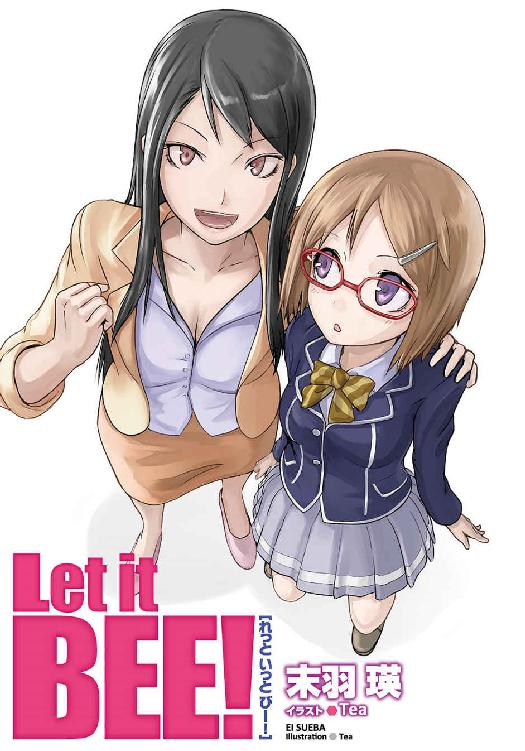
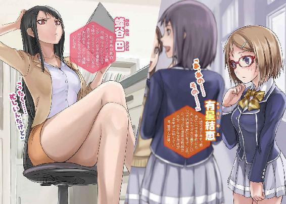
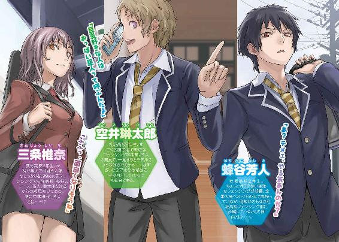
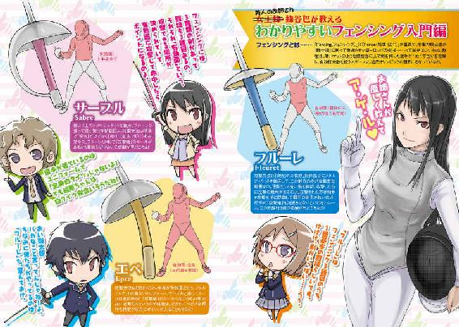
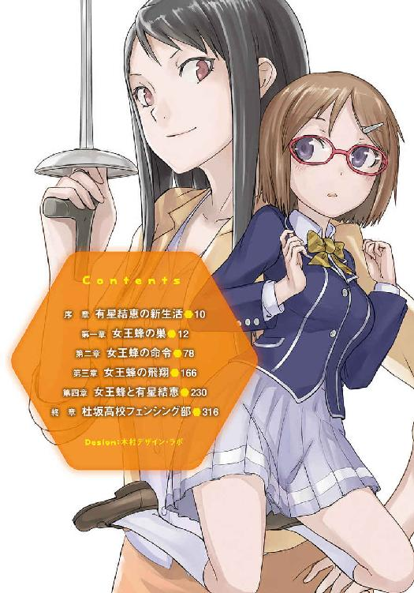
本書（電子版）に掲載されているコンテンツ（ソフトウェア／プログラム／データ／情報を含む）の著作権およびその他の権利は、すべて株式会社ＫＡＤＯＫＡＷＡおよび正当な権利を有する第三者に帰属しています。
法律の定めがある場合または権利者の明示的な承諾がある場合を除き、これらのコンテンツを複製・転載、改変・編集、翻案・翻訳、放送・出版、公衆送信（送信可能化を含む）・再配信、販売・頒布、貸与等に使用することはできません。
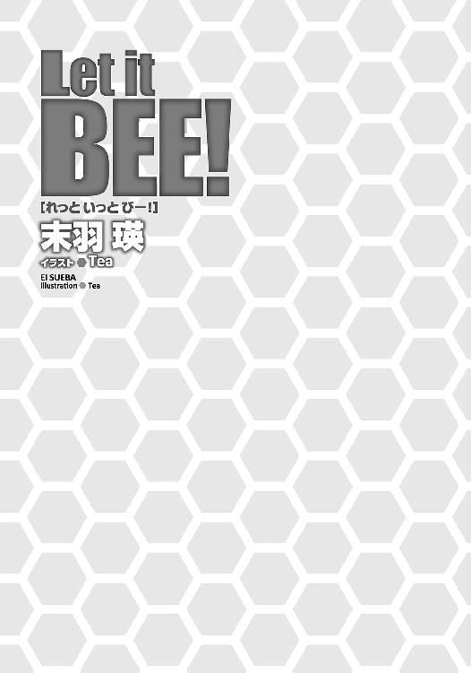
『序章 有星結恵の新生活』
高校入学と同時に買ってもらった携帯電話。アドレスを開いてみると、そこに登録されているのはたった二件。「自宅」と「お母さん」だった。だけど、これがどんどん増えていくかと思うだけで、楽しい想像が膨らんでいく。
有星結恵は微笑み、説明書を片手にアドレスの赤外線受信のやり方をじっくり覚えこむ。
（よし。これでいつアドレス訊かれても大丈夫）
完全に暗記した結恵は、画面を見ながら小さく頷く。
（あ......でも、そんな都合よく訊いてくれる人、いるかな？）
不意によぎった考えに、結恵は眉を顰めた。高校に入学して一週間、アドレスを訊かれるどころか、クラスメイトとまともに話したことすらほとんどない。
（......うん。やっぱり受身じゃダメだよね。自分から訊きにいかないと）
小さく首を振って奮起すると、結恵は再び携帯電話に視線を落とした。
（簡単簡単。「アドレス交換しよう」の一言だもん）
そう言い聞かせ、赤外線送信のやり方のページを捲る......が。
「ご飯中はケータイ禁止」
パッと説明書を奪われてしまった。顔を上げると、母が少し厳しい表情でこちらを見ている。
「ご、ごめん」
結恵は素直にケータイ電話を閉じると、制服のポケットに仕舞った。
母は満足そうに頷くと、テーブルの上に朝食を並べ始める。
「友達とメールでもしてたの？」
「う、うん。そ、そうだよ」
思わず見栄を張ってしまう。だが母は鋭い人で、自分は噓をつくのが下手だ。案の定、母は疑わしそうに「ふーん」と呟いた。
「......まぁ、部活でも入れば友達はすぐ増えるわよ」
「うーん、部活かぁ」
そういえば、昨日から新入生の部活動見学が始まっている。
一人で見に行くのには勇気がいるけれど、ならば誰かと行けばいいんだ。そこでアドレスも交換すればいい。──完璧なプランだと思った。
「ほら結恵。ぼーっとしてない。早く食べないと遅れるわよ」
見れば、母はとっくに箸を持って朝食を食べ始めている。
「あ！ うん。いただきます」
結恵も、慌ててスプーンを手に取った。
『第一章 女王蜂の巣』
女王蜂の機嫌が悪い。
そんな声が職員室のどこからか聞こえてきたので、蜂谷巴は三白眼をして顔を上げた。そのままぐるりと周囲を見回すと、同僚の教師たちは一斉に目を背ける。教員歴十年や二十年を越えるベテランたちも、この目に睨まれたら即刻降参だ。勤め始めて三年目の、まだまだ新米といえる巴。それでも眼力だけはすでに猛者の領域になっている。
自分のことを「女王蜂」と呼んだ主を見つけられなかった巴は、仕方なく再びデスクに顔を向けた。そこにあるのは一枚の用紙。Ａ４サイズのそれには、二十歳半ばの女が書いたとは思えない強烈な色彩と丸っこい字で「新入部員名簿♪」とあった。しかし、目を引くのはそのタイトルだけで、肝心の名簿欄は白紙のままである。気合いを入れて三十人分も名前欄を確保したというのに、その努力は完全に空回りだ。
（三日......まだ三日ある）
巴はイライラとコーヒーをすすりながら心の中で呟いた。
三日後──巴の勤める杜坂高校で新入生の部活動一斉決定が行われる。なのにこの有様は何だ。巴が顧問をする部活には新入部員はおろか、見学者すら現れない。
「おい、蜂谷センセ」
「あん？」
微妙に皮肉をこめたような呼び方に、ヤンキー顔負けのガラの悪い声で答える巴。見ると、自分のデスクのすぐ傍に一人の男子生徒が立っていた。発育途上の生徒たちの中でも目を見張る体格で、バランスよく鍛えている印象が窺える。顔の作りは一見すれば美男子なのだが、目つきだけは巴と同等と言えるほど鋭い。
「なによ、芳人。あたしは忙しいんだけど？」
巴が高圧的にそう言うと、芳人と呼ばれた男子生徒は露骨に顔をしかめた。彼は小さく悪態をつくと、「ん」とぞんざいにプリントの束を巴に押し付けてくる。受け取ってみると、さっき彼に回収を頼んでおいたプリントだった。
プリントを渡し終えた芳人の手は、しきりに制服のネクタイをいじっている。職員室に入ってくるため仕方なく身なりを整えてきたのだろう。息苦しくてしょうがないという顔をしている。巴はその気持ちを察し、帰してやることにした。
「はい、ご苦労」
そのとたん、早くも廊下に向かって踏み出そうとしていた芳人の足が止まる。
「偉そうに言うんじゃねぇよ新米教師」
芳人は職員室の中だというのに、堂々と巴に罵倒を吐く。そのセリフに、今年入ってきたばかりの教師が縮こまった。
「ちょっと、誰に向かって口利いてんのよ？ 教育的指導の下、愛の鞭を鼻っ柱に叩き込んであげましょうか？」
巴はコーヒーを置き、握り拳を作って立ち上がった。二人は額をくっつけあい、互いに視線をぶつけ合う。職員室で行われるべき行為ではないが、他の教員は黙認している。
......いや、関わらないようにしていると言うべきか。
「はっ！ なにが愛の鞭だよ。イラついて当たりたいだけだろテメェは」
「誰かさんがちゃーんと新入部員集めてれば、こんなことする必要もないんだけどね」
「イラついて当たるのは認めるのかよ」
「うるさいわね。いいから、無駄口叩いてないで部員勧誘に行きなさいよ」
「お断りだ」
「なんですって!? アンタそれでもウチの部の部長？」
巴は息を荒くして詰め寄るが、芳人は顔を背けて疲れたようなため息をついた。
「無理やり入部させたヤツが長続きするわけねぇだろ。そんなの、いないほうがマシだ」
「いないと駄目なの！」
苛立ちが頂点に達した巴は、思いっきりデスクを叩いた。
「あと一人いなきゃ、フェンシング部は廃部なの！ ぐだぐだ言ってないで勧誘して来い！ なんなら幽霊部員でもいい！ 最悪、架空部員でっち上げなさい！」
刺さりそうな勢いで、巴は人差し指を芳人に突きつける。
彼女が顧問を務めるフェンシング部。三年生が卒業した今、部員数は芳人を含めたった二人だった。杜坂高校では三人の部員と顧問がいなければ部活動として成立しない。あと三日以内に新入部員を獲得できなければ、フェンシング部はなくなってしまう。
「蜂谷先生」
ふと背後から呼ばれ、巴は「なによ！」と芳人に怒りをぶつけたままの口調で振り返る。
そこには、やや腰の曲がった老年の教師が立っていた。皺のせいでほとんど表情がわからない彼は、手を伸ばして巴の肩に手を置き、一言。
「そんなことしたら、即刻廃部じゃよ」
校長だった。
「あ、あの......」
結恵は目の前を歩く女の子達に話しかける。だが、おっかなびっくりの結恵の声量では、楽しそうに話をしている彼女たちには聞こえない。
「あ、あの。一緒に部活、見に行きませんか？」
さっきよりも少し大きな声を出してみると、ようやく彼女たちは振り返った。結恵はパッと顔を明るくする。......だが、すぐに表情を固まらせた。
「誰？」
クラスメイトだと思ったら、全然知らない人たちだった。
「私たち、二年だけど」
「あ！ その、ご、ごめんなさい！ 間違えました！」
結恵は顔を赤くして謝ると、一目散に逃げ出した。背後からはクスクスと笑い声が聞こえる。
（うぅ、完璧な計画だと思ったのに......私のドジ......）
彼女たちの目の届かないところまできて、結恵は大きくため息をつく。
窓の外に目を向けると、沢山の新入生が連れ立って部活見学に向かっていた。空は曇天だけど、みんな明るく楽しそうだ。その光景を羨ましそうに見つめる自分の姿が、窓に映っている。
小柄な身体に紺色の制服。栗色のボブカットは、ちょっと背伸びして入った美容室でセットしてもらった。中学では黒縁の地味なメガネを掛けていたが、今は赤いフレームにしている。新しい環境で友達を作ろうと精一杯オシャレをしてみたのだが、今のところ何の効果もない。
（......ううん！ ここで挫けちゃダメだよね！）
結恵は窓の自分から目を逸らすと、部活動のパンフレットを取り出した。
（どこに行こうかな？ やっぱり文化系の部活がいいなぁ。えーっと、美術部......は絵なんか描けないし、軽音部......は楽器苦手だし......あっ！ 料理部なんていいかもしれない！）
きっと自分みたいに大人しい子がいると思った......が。
（あ......やっぱりダメだ）
結恵はそっとメガネを抑える。
（私、包丁持てないし）
包丁だけじゃない。結恵は刃物や針、箸やフォークなど「尖っている物」が怖くて仕方ない。尖っている物を見ると、身体が拒絶反応を起こす。眩暈がし、動悸が起こり、尖っている物が自分の目に刺さるんじゃないか──という妄想に囚われてしまう。
今掛けているメガネだって、実は伊達メガネだ。ただ、鋭い先端に宿る悪魔から、目を守るものが欲しいためにつけているだけ。
『先端恐怖症』──それが、結恵の病名だ。
（料理部もダメかぁ......。あ、でも家庭科室に茶道部もある。これなら入れるかも！）
もう一度窓の外に目を向けると、校舎から少し離れたところに家庭科室はあった。一度外に出なくちゃならないみたいだ。なんだかポツポツと雨も降ってきたし、鞄の中から先端がフラットタイプの折り畳み傘を取り出す。
「女王蜂だ。機嫌悪そー」
ふと誰かが言った言葉に、結恵はビクリと顔を上げた。蜂と聞くと同時にお尻の鋭い針が連想され、どうしても過敏に反応してしまう。
廊下の奥から、女教師が黒髪を揺らしながら歩いてくる。タイトなスーツに包まれた身体は、凹凸がはっきりしていて女性らしい。スカートから伸びる足はしなやかだ。目つきは鋭く、背筋を伸ばしながら堂々と廊下の真ん中を歩く姿は、教師にしてはあまりにも高圧的。そして、何故か肩にはギターケースのようなバックを引っ掛けていた。
その女教師の名前は、蜂谷巴。『女王蜂』の異名は苗字から取ったのか、態度から取ったのか。どれにしてもぴったりと当てはまる。
「ったく！ 芳人の所為で架空部員の計画がパァよ」
巴は、隣を歩く男子生徒──芳人に向かって悪態をつく。
「なんで俺の所為なんだよ。だいたい、最初からそんなん無理があるだろ」
芳人も巴に向かって負けずと言い返す。彼もまた、巴と同じようなバックを掛けていた。
「うるさいわね。そもそも、アンタがしっかり勧誘やってりゃこんなことにならなかったのよ」
「勧誘も何も、そもそも見に来る奴がいねぇんだよ」
「じゃあビラ配りとかやりなさいよ。あたしが作ったのあるでしょ？」
「ああ、あの悪趣味な色のヤツか。あれじゃ誰も来たくなくなるだろ」
「なんですって？ 文句つける気？」
表情を歪ませた巴が立ち止まる。つられて芳人も歩みを止め、お互い睨み合いを始めた。
「何もしてないくせに、言うことだけは一人前ね」
「事実を言ったまでだろ。あんなの、渡されたって迷惑だ」
「あーそう。そういうこと言う奴は一回、叩き潰さないとダメね」
「なんだよ。やるか？ こっちはいつでもいいぜ」
二人の間で緊張が高まっていく。周囲の生徒は異変を察知して遠巻きになっていった。
（なんだか、怖そうな人たち。男の人は先生にあんなこと言ってるし。反対側から行こうかな）
そう思って結恵も離れようとしたときだった。
「上等よ！ やってやろうじゃない！」
巴が叫び、肩に掛けていたバックの止め具を外した。
「謝ったって遅いわよ！ 後悔させてあげるから！」
その中から滑り落ちてきたのは、一振りの剣だった。銀色の細い刀身と、鋭い先端。手を守るシールド。一目で刺突用の剣だとわかる。
それを見た瞬間、結恵の心臓が跳ね上がった。
「こっちのセリフだ！ 覚悟しやがれ！」
芳人もバックから同じような剣を取り出し、巴に向かって突きつけた。
（あ、ああう......あ、あれって......け、剣だ......！）
余りにも分かりやすい、「刺す」ための道具を見て、結恵の身体は震え始める。
（に、逃げなきゃ！）
結恵は慌てて二人とは反対方向に駆け出した。だが、自分の隣を巴がバックステップで通り過ぎていく。振り返ると、芳人が剣を構えたままこちらに突っ込んでくるところだった。
「きゃあ！」
結恵は顔を覆ってしゃがみこむ。頭上を、二人の罵声と剣の衝突音が通り過ぎていった。
結恵は身を屈めながら、また反対方向に逃げ始める。しかし、今度は芳人が後ろ向きで自分の隣を通り過ぎていった。振り返ると、巴がスカートをはためかせながら突進してくる。
「こ、こっち来ないでくださいぃ」
結恵は再びしゃがみこんで言うが、か細い声は罵り合いに夢中の二人に届かない。罵倒の応酬が、どんどん遠ざかっていく。
（うう、なんでこんな目に......）
結恵は涙目になりながら再度反対方向に逃げ始める。そして、またしても二人の声と剣の音がこちらに近づいてきた。三メートル、二メートル、一メートル......見えない分、迫る音が余計に結恵の恐怖感を煽る。
耐え切れなくなり、結恵は両手でメガネを覆ってその場にしゃがみこんだ。
......そのまま、どれくらい経っただろう。いつの間にか、金属音は止んでいた。罵りあう声も聞こえてこない。結恵は恐る恐る目の前の手をどけると、左右を見回した。
左側にあったのはスカートから伸びた足。
右側にあったのは男子制服に包まれた足。
そして頭上には──
「ひっ、ひいぃッ！」
二本の剣先だった。
巴と芳人が、結恵を挟んで対峙している。お互い足元には気がないようだ。互いに互いを睨み付け、ピクリとも動かない。
「逃げるのは終わりか？ 張り合いねぇな」
「ついてくるのがやっとのクセに、よく言うわ。息切れ寸前なんじゃないの？」
結恵は二人の剣先から目が離せない。
怖いのに、怖すぎて、目が逸らせない。
「その減らず口、二度と利けないようにしてやる」
「面白いじゃない。やってみなさいよ......！」
眼光鋭く、二人は獰猛な笑みを浮かべ──咆哮と共に互いに突きを繰り出した。
それを見た結恵の呼吸が止まる。
頭上で衝突しようとする剣。その軌道がそれたらどうしよう？ 剣先がこっちに来たらどうしよう？ 刺さる。きっと刺される。目に刺さるんだ！
刺さるかもしれないという想像が、妄想が、抑えきれない恐怖となって結恵を埋め尽くす。
「いっ......」
恐怖が限界に達した結恵は、とっさに折り畳み傘を掴み──
「いやぁぁああッ！」
──同時に二人の突きを弾いた。
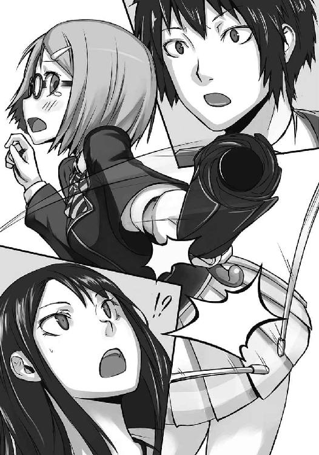
『なッ！』
驚愕の声を漏らす巴と芳人。その二人に挟まれた結恵は、荒い呼吸を繰り返している。
廊下の誰もが驚きに固まり、まるで時間が止まったようだった。声を発する者は一人もいない。全員の耳の中に、結恵の悲鳴と、剣を弾いた甲高い音だけが残っている。
「............ねぇ」
静寂を破ったのは、巴の声だった。
「え......？ あ！ いえ、あの......」
声をかけられ、我に返る結恵。そして、自分がしたことを思い出して血の気が引いた。
「アナタ、今......」
「あ、あの......わ、私、そんなつもりじゃ......そ、その............ご、ごめんなさいッ！」
結恵はとにかく叫ぶようにして謝ると、背中を向けて一目散に逃げ出した。茶道部の見学に行こうと思っていたことも忘れ、必死に駆け抜ける。
そんな結恵の姿を、巴と芳人は呆然とした表情で眺めていた。
「............あいつ」
芳人は剣を握っている自分の手を見た。掌に、ビリビリと痺れたような余韻が残っている。
「俺達の突きを、同時に止めやがったよな？」
巴の方を見ると、彼女は瞳孔を開きっぱなしにして、結恵の去った方向を見つめていた。
「......見つけたわ」
巴の口が、不敵な笑みを象った。
幼いころ、父親に大きな体育館に連れて行ってもらった。体育館には白い衣装と銀色の剣を持った大人が大勢いて、皆、一対一で戦っている。
その中に父親もいた。
結恵は戦う父のすぐ後ろのパイプ椅子に座り、試合を眺めている。周囲からは威勢のいい掛け声と、父に向けた声援が響き渡っていた。
父の剣が、相手の胸に突き刺さる。すぐさま審判の手が上がった。その瞬間、周囲から歓声が沸き起こる。
父が剣を掲げながら帰ってくると、結恵の周りにいた大人たちが一斉に駆け寄っていった。
「さすが恵介さん！」
「恵介、絶好調じゃないか」
「そりゃあ、娘が見に来ているからな。いいとこ見せなきゃいけないだろ」
父親は笑った後、達成感に満ちた息を吐いて結恵の隣に腰を下ろす。
「結恵、お父さんの試合はどうだった？」
「うん。格好よかった。お父さんって強いんだね」
正直ルールなんてさっぱりだったが、それでもなんとなく父親が凄いことは分かった。
結恵の言葉に、父は微笑みながら頭を撫でてくれる。
「なぁ恵介。結恵ちゃんにはフェンシングやらせないのか？」
「んー、そりゃ結恵次第だな」
父は結恵の脇に手を入れて持ち上げると、自分の膝の上に座らせた。ここが結恵のお決まりのポジション。素直に父の胸に背中を預ける。
「結恵。お前もフェンシングがやりたいか？」
結恵は父の顔を見上げたあと、ちょっとだけ眉を顰めた。
「やってみたいけど......何だか怖いもん。それに私、お父さんみたいに強くないし......」
そう言うと、父は小さく声を漏らして苦笑する。
「誰でも最初はそんなもんだ。戦うんだから怖いのは当たり前だし、初めから強い人なんていないんだぞ？ やってみたいって思う気持ちが大事なんだ」
「そうなの？」
「ああ。やってみたいと思わなきゃ始まらないんだからな。最初は怖いかもしれないけど、大丈夫だ。だんだん勇気が出るようになるからな。そしたら、結恵はきっと、お父さんみたいに強い子になれるぞ」
「ほんとう？」
「当たり前だろ。お父さんが結恵に噓付いたことあるか？ お父さんだって、結恵くらいのころは弱虫だったんだぞ」
審判の声が上がった。試合の方を見ると、さっきの青年が勝ったところだった。父親は「行って来るぞ、結恵」と言って結恵を元の椅子に戻す。
「うん。お父さん、頑張って！」
結恵の声に父は手を挙げ、コートへと向かう。途中、青年とハイタッチを交わしていった。
試合が始まる。やはり、父は強かった。相手の攻撃を次々防ぎ、鮮やかに突きを決めていく。そのたびに沸きあがる歓声。鳴り止まぬ父への声援。
自分もあんな風になれるのだろうか？ 強く、優しく、何も怖がらず、友達も沢山いて、皆から応援される。誇らしくて憧れている、大好きな父。そんな風に、なれるなら──。
「フェンシング、やってみたいな......」
そう呟いたときだった。
相手の剣が、父に当たって折れた。
銀色の破片が凄まじいスピードでこちらに飛んでくる。
焼けるような痛みが走り、結恵は椅子から落ちた。
──目が、開かない。
叫び声が響く。大きな手が自分を包んでいる。うるさいサイレンの音。抱き上げられ、車に乗せられた。凄いスピードで走っている気がする。父の名前を呼ぶ声が何度も響いた。同時に聞こえてくる無機質な機械音。ピッ、ピッ、ピッ、ピッ。
父の名前を叫ぶ声が聞こえる。自分の名前を叫ぶ声が聞こえる。
無機質な機械音が、長く、長く、長く鳴って............消えた。
「..................あ」
気がつくと、結恵は自分のベッドの上にいた。頬が冷たい。触れてみると、しっとり濡れていた。パジャマの袖で水滴を拭い、ベッドサイドに置いてある伊達メガネをかける。
「やだな......また見ちゃった」
嫌なことがあると、よくこの夢を見る。
昨日、学校で見た剣。あれはフェンシングの剣だ。あんな物を見た所為で、またこの夢を見てしまったんだ。
思い出すと、嫌なことが一度に思い浮かんでくる。幼いころのこと、一人ぼっちの学校に行くこと、昨日逃げ出してしまったこと。
結恵は憂鬱な気分のままベッドから抜け出す。起きる時間はいつもより少し早かった。自室を出て、リビングに向かう。その途中で、和室を通った。
線香の匂いが染み付いた和室には、小さな仏壇が置いてある。
その中で笑う、父の遺影。
「お父さん......」
チャイムが鳴り、本日最後の授業が終わる。だが、結恵は今日も新しい友達を作れていなかった。一つだけ幸いなのは、昨日の人たちと会わなかったことだろう。もし会ったら、どんな顔をすればいいかわからない。......考えるだけでため息が漏れてしまう。
「なあ、昨日の女王蜂の話、聞いた？」
教室の少し離れたところから聞こえてきた言葉に、結恵は思わず帰り支度を止めた。
「あー、２年のスズメバチと廊下でケンカしたんだろ？」
あの芳人という男子生徒はスズメバチと呼ばれているのか。結恵は初めて知った。確かに、あの攻撃的な口調といい、威圧的な眼差しといい、女王蜂に負けず劣らずぴったりな仇名だ。
ふいに、あの二人の眼差しを思い出してしまう。人を刺すような、攻撃的な眼差し。
結恵は、それ以上話を聞きたくなくて足早に教室を後にした。
玄関にたどり着き、ローファーに履き替える。今日も一年生は部活動見学に行く人が大勢いた。なんとなく、今日は見学に行く気分にはなれない。結恵は人の流れに逆らい、校門に向かって足を踏み出した......その時。
「見ぃーつけた」
突然玄関の陰から女性が現れ、結恵の前に立ち塞がった。自信たっぷりに胸の前で組んだ腕。今さっき思い出したばかりの、高圧的な視線が自分に突き刺さっている。
「探したわよ。有星結恵ちゃん」
「じょ、女王蜂先生!?」
思わずそう叫んだ瞬間、巴に頭をがっちり掴まれた。そのまま引き寄せられ、鼻と鼻がぶつかるくらいの距離まで近づけられる。鋭い目つきに顔を逸らしたかったが、頭はしっかりとホールドされていた。
「その名前で呼ばれるの、嫌いなの。本当なら一発ぶん殴るところだけど、君は期待の新入部員だから特別に勘弁してあげる」
「あ、ごめんなさ──え？ し、新入部員!?」
巴は結恵の頭を放すと、満面の笑顔で「そう！」と頷いた。
「あ、あの......何の話ですか？」
「昨日のこと、忘れたとは言わせないわよ。あたしの突き、よく防いだわね？」
「あ......えっと、そのことは本当に......ごめんなさい」
「なーに謝ってるのよ」
力強く肩を押される。細い結恵は、その強さに思わずよろめいた。
「願書みせてもらったけど、別に経験者ってわけじゃないのね。にもかかわらず、あたしと芳人の突きを完全に防いだ。ふふふ......いいわ。最高よ、結恵。ウチの部活に入らない？」
「部活って......」
「もちろんフェンシング部よ！」
巴は剣を突く真似をしてみせる。
（む、むりむりむり！ 怖い！ 絶対できっこないよ！）
一瞬で答えが出る。
「あ、あの。私、その」
だが、はっきり口に出せるかどうかは別の話だ。
「もしかしたら杜坂高校ゴールデンメンバーの再来かも！ 興奮して昨日はよく眠れなかったわ！ こんなにも早く夢が叶うなんて！」
口ごもっている内に、結恵は巴に腕を掴まれ、ずるずると引きずられる。
「何はともあれ、まずは見学しないとね！ さ、行くわよ！」
「え？ え？ ちょ、ちょっと待ってください！」
結恵は叫ぶが、彼女の力は強くて離れられない。巴はそのまま校庭に入ると、サッカー部が準備をしているど真ん中を平気で横切っていく。その光景に、周囲の視線が集中した。叫んでいた結恵は赤面し、諦めてしぶしぶ巴の歩幅に合わせる。
巴の足は校庭の先にある第二体育館に向かっていた。
運動部に入ろうと思っていなかった結恵でも、第二体育館の噂は少しだけ聞いている。
この杜坂高校には二つの体育館がある。校舎から直接通路で繋がっている第一体育館。こちらは大きく、部室棟のすぐ傍にあってウエイトルームも隣接している。主に市内でも名の通った運動部が使うことを許される体育館だ。
逆に今二人が向かっている第二体育館は小さい。校舎から百メートル以上離れており、不便な場所にある。そこで活動しているのは、いわゆる『お気楽運動部』だ。
「さあ！ ここよ！」
巴に押されるようにして結恵は体育館の中に足を踏み入れた。噂どおり、第一体育館より明らかにこじんまりしている。コートは二つあり、真ん中を天井から垂れ下がったネットが区切っていた。左側のコートは更に二分割され、半分は女子生徒が笑いながら卓球をしており、もう半分は、制服姿の男子がバレーボールでフリースローをやっている。
そして、右側のコートには誰もいない。酷く閑散としていた。
「ウチの部はスペースとるからね、丸々半分使ってるのよ」
後ろからやってきた巴が何もないコートを指差す。
その時、左側のコートからバレーボールが転がってきた。それを追って一人の男子生徒が駆け寄ってくる。巴は足に当たったボールを拾い上げると、投げ返そうと振りかぶる。
「あ、サンキュー女王蜂センセー。パスパス！」
ボールを追ってきた生徒がそう言った瞬間、投げ返そうとしていた巴がピタリと止まった。
「女王蜂って呼ぶなコラァッ！」
巴は振りかぶっていたボールを目の前で構えると、サッカーのキーパーキックのようにして思いっきり蹴り飛ばす。凄まじい勢いで発射されたボールは、男子生徒の顔面に直撃した。
「次に呼んだらこれくらいじゃ済まさないわよっ！」
ぶっ倒れた男子生徒に向かって巴はそう叫んだ。
結恵は昇降口で女王蜂と口走ってしまったことを思い出してぞっとする。もう二度とその名前は口にしないことにしようと決めた。
「芳人！ 芳人は来てないの!?」
ボールを蹴り飛ばしたくらいでは気が済まないのか、巴は大声で例の男子生徒の名前を呼んだ。だが、右側のコートに誰もいないのは一目瞭然である。
──と思ったら、背後から声がかけられた。
「もう来てるっての」
振り返ると、そこには学校指定の紺色ジャージを着た芳人が立っていた。手には黒いスポーツバックを持ち、肩には昨日見た剣を入れるケースをかけている。
芳人は結恵の姿を見ると、眉を顰めて巴の方を向いた。
「本当につれてきたのかよ」
「もちろん」
噓だ。つれてきたというより誘拐に近い。
芳人はもう一度結恵のほうを見てくる。胡散臭いものを見るような目つきだ。
「ああ、それからウチにはもう一人部員がいるんだけど............芳人、琳太郎は？」
巴が尋ねると、芳人は小さく肩をすくめる。
「あいつ春休みの課題、まだ終わってねーんだよ」
「まったく......新学期始まって何日目だと思っているのよ。休みの間何してたって言うの？」
「さぁな。そもそもアイツの課題、春休み中ずっと部室にあったからな」
やれやれといった感じの芳人。彼は体育館の中に入ると、スポーツバックを床に投げ捨てた。逆に剣ケースは丁寧に壁に立てかける。それから床に座り込むと、白地に銀色のラインが入ったシューズを履き始めた。
「あ、あの、巴先生......その、えっと......入部の、ことなんですけど......」
やっと。やっと結恵は声を出せた。ちゃんと断らなければ。流されてここまできてしまったが、断るのが遅れれば遅れるほど切り出しづらくなる。
「なに？ 何も心配いらないわよ。初心者歓迎！ ちゃーんと一から教えてあげるから！」
ばんばんと力強く背中を叩いてくる巴に対し、結恵は愛想笑いで返してしまった。
「おい。これからどうすんだよ？ こいつに防具着せて試合でもさせんのか？」
芳人の言葉に、結恵の肩がビクリと波立つ。
「そうね......今日はとりあえず試合を見てもらいましょ。昨日のじゃあ不十分だしね」
結恵はホッと胸を撫で下ろす。
「──っと、その前に自己紹介しなきゃね。改めまして。あたしは２年５組担任の蜂谷巴。フェンシング部の顧問よ」
「あ......１年４組の有星結恵です」
「うん。よろしく！」
巴はそう言ったあとで芳人を見た。つられて結恵もそちらを向く。芳人はシューズの靴紐を結びながら何故か嫌そうに顔をしかめた。
「......２年５組の蜂谷芳人だ」
「え？ あ、もしかして......」
結恵が言うと、芳人はますます顔をしかめた。
「ああ、そうだよ。そいつは俺の姉貴だ。言っとくけど、間違っても俺を苗字で呼ぶなよ。こんなヤツと同類に思われるのは勘弁だ」
「ったく、なによー。可愛くない弟ね」
なるほど、と結恵は納得する。先生にあんな口調で話すから、てっきり芳人は不良だと思っていたけれど、姉弟ならば頷ける。
見れば、二人は良く似ていた。特に目つきはそっくりだ。
「まぁいいわ。じゃあちゃっちゃっと試合見てもらうわよ。芳人！ 準備！」
「わーったよ、審判機は？」
「いらないわ。メタルジャケットもなし。プロテクターとユニフォームだけでいくわよ。結恵はちょっと待ってて。今、用具置き場で着替えてくるから」
そう言って巴は体育館の外にあるプレハブへと駆け込んでいく。残された結恵は断るタイミングを逃したことにうな垂れた後、仕方なく、少し離れた場所から芳人の準備を見ていた。
芳人はスポーツバックの中から真っ白な服を二着取り出した。一つはＴシャツを縦に半分切ったようなもの。止め具がついており、芳人はそれで身体に固定した。
更にもう一着は長袖だ。サイドをジッパーで閉める作りになっている。特殊なのは服の裾が股の下を通って背後に繋がっているところだ。まるで、生地の厚いレオタードのようである。
そして最後に、例のバックから剣を取り出した。細く銀色に輝く刀身。手元を守るための、小皿を裏返したような鍔がある。
「お待たせ！」
剣を向けられないかと結恵がひやひやしていると、芳人と全く同じ格好をした巴がやってきた。彼女の手にも一振りの剣。ただ、反対側の手には奇妙なお面を二つ持っている。
「ん？ これ？ 『マスク』っていう顔面防具よ」
マスクの側頭部は布製だが、前面は金属製の細かい格子で覆ってあった。あれを被って前が見えるのだろうかと思う。
「芳人、準備は出来た？」
「ああ。言っとくけど、見学者の前だからって調子に乗るんじゃねぇぞ」
「アンタこそ、気ぃ抜いてると瞬殺するからね」
巴は芳人にマスクを渡すと、体育館の壁際まで移動した。芳人もそれに続いていく。二人は数メートルの距離を取って対面し、剣の鍔を口の前に掲げた。
「詳しいルールは後でいいわ。今はフェンシングの戦いがどんなものなのか見ていてね」
そう言って片目を瞑った巴の顔に、マスクが被さった。黒い格子に遮られ、その表情は見えなくなる。
とたんに場の雰囲気が変わった。二人の間には、緊張の糸が弛みなく張られているようだった。さっきまでの陽気な様子はない。見ているこっちの方が汗をかいてくるような真剣さ。
「試合、始め！」
その言葉が試合開始の合図みたいだった。二人は弾けるように踏み出す。
先に仕掛けたのは芳人。咆哮とともに突きを繰り出した。まるで伸ばした剣に引っ張られているようなスピード。
しかし、巴は予想していたかのように縦に向けた剣の腹で切っ先をずらした。その後は一瞬。彼女の剣は、芳人の剣を押さえたまま胸に向かって伸びる。だが、その先端は後退した芳人の身体にほんの少し届かない。
攻撃を避けた芳人は更に二歩下がった。それを追いかけるように巴も歩みを進める。始まった直後の激しい動きではなく、ゆっくりとした動き。芳人は徐々に後ろに向かって追い詰められ、巴は切っ先を挑発するように小刻みに動かして距離を縮めていく。
二人の距離が四メートルを切ったとき、芳人が動いた。
「──っォラァッ」
巴の剣を払った芳人が前に踏み出す。がら空きになったその胴体に切っ先が伸びる。それでも巴は慌てた様子も見せず、後ろに飛びのくと同時にその攻撃を叩き落した。
金属同士がぶつかる甲高い音が連続する。
巴が突けば芳人が払う。芳人が仕掛ければ巴が叩き落す。
──怖い。剣と剣がぶつかるたびに、折れるんじゃないかと思わず目を瞑ってしまう。剣がこちらを向くと、反射的に顔を背けてしまう。心臓はどんどん鼓動を早め、息苦しい。
だけれど、二人の戦いは壮麗だった。銀の軌跡を描く突き。風を切って払われる剣。咆哮。甲高い剣の衝突音。拮抗する二人の力。その光景が、幼いころの記憶と重なった。あの強かった父の動きに、負けないくらいの迫力を二人は持っている。
（何年ぶりだろ......フェンシングの試合を見るなんて）
見ているうちに呼吸は荒くなり、身体は慄いた。
怖い......。怖いのに、目は剣から離れない。
「あっ......」
二人の剣が交差したところで、結恵は思わず声を上げた。それまで激しく動いていた二人が止まる。しかしそれは一瞬。芳人は力任せに前に出た。
その時、マスクの中の巴が笑う。
巴が剣を小さく回転させた。その所為で力任せに押さえつけていた芳人の剣が大きくずれる。
「もらったあッ！」
巴は芳人の剣を横に弾くと、隙ができた胴体に先端を突き刺した。
芳人の身体に突き刺さった剣は、その衝撃を殺すように大きく弧を描いてしなる。
「くそ......」
突かれた芳人は悪態とともに剣を持つ腕をだらりと垂れ下げた。
巴の勝ちだ。
「はい、しゅーりょー。まだまだ、あたしには及ばないわね」
「ちっ......一点で勝ち誇るんじゃねぇよ」
二人がマスクを外すと、巴の満足げな笑みと、芳人のしかめっ面が現れる。時間にして三十秒ほどの短い戦いだったが、その額にはうっすら汗が浮かんでいた。
「どう？ 迫力あるでしょ？」
巴はマスクを小脇に抱えると、こちらに歩み寄ってきた。剣が近づいてくる恐怖に思わず身構えるが、彼女の自信に満ち溢れた姿に、目を奪われてしまう。
身体の大きな芳人にも勝つ、蜂の如き鋭い強さ。敵意を前にしても臆することなく立ち向かう、女王のような気高い精神。どれもこれも、結恵にはない物だ。
「結恵もすぐにこれくらい強くなれるわよ」
巴ははっきりと断言する。
そうなれるなら、どれだけいいだろう。内気で貧弱。弱虫で泣き虫。言いたいこともハッキリ言えなくて、いつもいつも後悔ばかり。先端恐怖症で、人に心配や迷惑ばかり掛けている。
結恵は、そんな自分が嫌だった。
変わりたい。弱虫な自分を変えたい。尖った物を怖がらないくらい、強くなりたい。
強くなれるのだろうか？
──父のように。
──巴のように。
彼女はそのきっかけを結恵に与えてくれようとしている。
だから......だからこそ、結恵は言わなければならない。
ハッキリ物を言えない性格に鞭打って、言葉にしなければならない。
「私......」
出した声は震えていた。
「入部は、できないです」
「え......？」
結恵は巴の顔を見ないように俯きながら、伝えた。
自分を変えたい。強く変えたい。でも、心では願っていても身体がいうことを利いてくれないのだ。だから、与えてくれようとしている巴に、しっかり伝えなければいけない。
自分には、無理だと。
期待なんかしないでくれと。
全ての鋭いものから守るように、メガネを押さえつける。
「私......尖ったものが凄く怖いんです......」
巴の失望する顔を見たくなくて、結恵はじっと床の木目だけを凝視する。
「こんな私に、フェンシングなんて──できるわけないんですっ！」
結恵は勢い良く頭を下げる。
「ごめんなさい！」
そして追われるように体育館を出て行く。
後ろから何か声をかけられたが、構わず結恵は走り去った。
校庭を横切り、正面玄関まで来たところで、ようやく結恵は走るのを止めた。膝に手をついて荒い呼吸を繰り返す。しばらくそのままの体勢で休み、落ち着いたところで、今度はとぼとぼと俯き加減で歩き始めた。
ちゃんと断れたことに、とりあえずは安心する。
だけど、自分の不甲斐なさが腹の底に沁みた。
「ちょっと待って！」
その時後ろから声が聞こえてきた。振り返ると、フェンシングのユニフォームの上にジャージを羽織った巴が駆け寄ってくる。思わず結恵は逃げ出そうとするが、その前に追いつかれた。
諦めて、結恵は大人しくその場に留まる。
「あの......すみませ」
「ごめんね......」
とにかく謝って帰ろうとしたが、その前に巴が頭を下げた。驚いて結恵は顔を上げる。目の前では、巴が頭の天辺をこちらに向けていた。
「怖がらせちゃったかな......？」
巴がゆっくり頭を上げた。少し、遣る瀬無いような笑みを浮かべている。
「え？ あ......そんな、私の方こそ期待に添えなくて......すみませんでした」
「ううん。気にしないで。あたしが勝手に舞い上がっちゃったんだし」
弟に思いっきり怒られちゃった──と、巴は指先で頬をかく。
そしてしばらく沈黙が流れた。空気が酷く重い。それが耐えられなくて、結恵は口を開いた。
「どうして......私なんかを入れようと思ったんですか？ 芳人先輩だって十分強そうなのに」
そう尋ねると、巴は少し悲しそうな顔をした。
「この高校はね、三人以上の部員と顧問がいなくちゃ、部活として成り立たないの」
あっ、と結恵は思い出す。巴は、部員は二人だと言っていた。
「でも、それじゃあ......別に私じゃなくたって......」
「うん。あたしも、最初は入部してくれるなら誰でもよかった。掛け持ちでも、幽霊部員でも、とにかくフェンシング部を存続してくれるなら誰でもいいって思ってたんだ。でも......」
巴の瞳に、再び小さな光が点る。
「廊下で結恵に突きを弾かれたとき、あたしは夢が叶うと思ったの」
「夢？」
「うん。こっち来て」
結恵は巴に手を引かれ、玄関の中に足を踏み入れた。そして、その奥の壁にある飾り棚の前で立ち止まる。過去に杜坂高校で活躍した部活の賞状やトロフィーが飾られている場所だ。
「ここ。ここ見て」
巴は、中央の最上段に置かれたトロフィーを指差す。
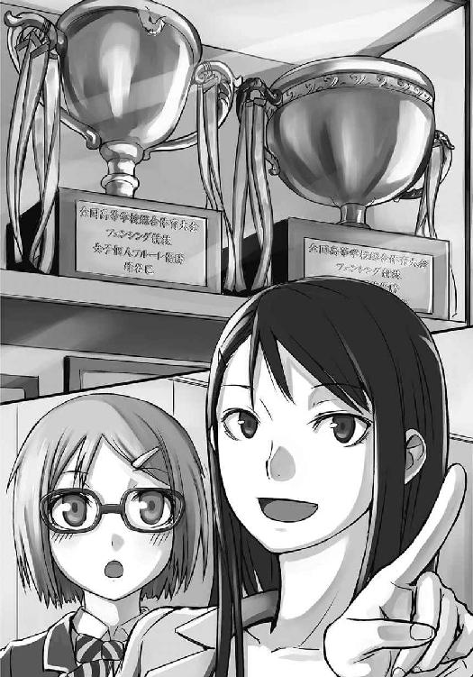
最も目立つ位置に飾られたそのトロフィーには、見覚えのある名前が刻まれていた。
『全国高等学校総合体育大会 フェンシング競技 女子個人フルーレ優勝 蜂谷巴』
「これって......」
「そう。あたし、この学校の卒業生なんだ」
「す、すごい......巴先生......日本で一番になったんですね......」
そして結恵は、その隣にあるトロフィーにも気がついた。
『全国高等学校総合体育大会 フェンシング競技 混合団体優勝 県立杜坂高等学校』
「混合、団体？ 普通の団体戦と違うんですか？」
「ええ。混合団体は、男子と女子がチームを組んだ団体戦のことよ。性別の垣根を越えて、本当に男女ともに実力を持ったチームのみが勝てる、究極の団体戦なの」
巴が遠い過去を見るように瞳を細める。
「杜坂高校でインターハイ優勝経験があるのはフェンシングだけなの。この時の杜坂高校フェンシング部は、ゴールデンチームって呼ばれていたわ」
巴がトロフィーを見ながら感傷的な笑みを浮かべた。
「......でも教師になってこの高校に戻ってきてみたら、フェンシング部は廃部になっていた。それでも去年になって弟が入ってきたから、もう一人の部員と、幽霊部員をかき集めて再結成したの。弟は強いからね、団体は出来なくても個人種目でやらせてあげたかった。一応、去年アイツはインターハイ出場だけはしたのよ」
トーナメント初戦で負けたけどね、と巴は苦笑した。
「今年になって幽霊部員だった三年が卒業して、残ったのは二人。今回も何とか人数だけ集めてやろうと思ってた。────けれど、そこで結恵を見つけた」
結恵と巴の視線がかみ合った。
「びっくりしたわよ。あたし、大学時代はオリンピックの話も出たのよ？ そのあたしと、芳人の突きを完璧に防いじゃったんだから。並みの防御センスじゃないわ」
違う、あれは怖くて逃げていただけだ──そう叫びたかったが、何故か声が出てこなかった。再び期待を裏切るのが怖くて、結恵はただ口をきつく結ぶ。
「ゴールデンチームが再来するって思った。弟は実力がある。もう一人も未熟だけど見込みは十分。そして並外れた防御センスをもった結恵がいれば、このチームは一気にインターハイの表彰台に上ると思ったわ。あたしの夢は、あたしが優勝したときに見た、表彰台からの景色をみんなにも見せてあげること。ちっぽけな身体と、細い剣一本で、仲間と一緒に日本中の敵を打ち倒した時の感動を、みんなに伝えること。フェンシングは楽しいって、教えたいの」
そう言った後で、巴は恥ずかしそうに眉を顰める。
「結局、全部あたしの独りよがりだったんだけどね」
結恵は悔しくて急に泣きたくなった。巴の夢は素直に素敵だと思う。そしてその夢に混ぜてくれようとしたことも嬉しくて仕方ない。ただ、自分には巴の夢に参加するだけの力がない。
内気でひ弱。友達作りがへたくそで消極的。臆病者で泣き虫。コンプレックスばかりで誇れるものは何もない。巴はそんな結恵に手を差し伸べてくれているのに、自分はその指先の尖っている部分を怖がって逃げている。
「やりたくないことを強制はできない。でも、でもね。一つだけ言わせて。あたしは、結恵とフェンシングがやりたい。これが素直な気持ちよ」
巴は真っ直ぐ結恵の瞳を見る。
この人は、こんなにはっきりと、人の顔を見て、自分の気持ちを喋れるんだ。
でも。
「私は......フェンシングはダメなんです」
結恵は、どうしても首を縦に振れない。
「怖い、思い出があって......」
あの時の光景が、思い浮かぶ。
「お父さんが、フェンシングをやってたんです」
「え？ お父さんが......？」
巴の顔色が変わる。結恵の願書を見たなら分かるはずだ。
結恵に父がいないことが。
「でも、お父さん......折れた剣が刺さって死んじゃって......」
「そんな......」
巴が目を伏せる。十数分前まで、満面の笑みを浮かべていたのが噓のようだ。
「......うん......そっか......」
巴はうな垂れるようにして頷いた。
「......ごめんね。辛いこと思い出させちゃって」
最後に一度、結恵の頭を撫でる。
「ただ、フェンシングは嫌いにならないで欲しいな。お父さんも......好きだったろうし」
そう言って、巴は背中を向けて去って行った。その後姿は、全国制覇した女性とは思えないほど萎れている。自分は、そんな強い女性が気落ちするようなことをしてしまったのだ。
その姿を見たくなくて、結恵は俯いた。
──結恵とフェンシングがやりたい。
彼女の声が、昨日から頭の中をぐるぐる回っていた。
そんな風に誰かから期待してもらえるなんて、久しぶりだった。勉強もスポーツもダメで、取り立てて特技もない自分は、誰かに必要とされた記憶がほとんどない。
巴の言葉は嬉しい......だけど半面、その期待には絶対に応えられない。
（だって、仕方ないよ。私には、無理だもん......）
そうやって陰鬱な気持ちのまま、今日も学校が終わってしまった。
（今日は、もう帰ろう......）
とても、他の部活見学に行くような気分にはなれなかった。結恵はのろのろと帰り支度を済ませ、バッグを肩にかける。
（電車、何分かな......）
そう思って携帯電話を出そうと、バッグのポケットに手を入れる。
「......あれ？」
指先がバッグの生地だけを撫でる。他のポケットも探るが、どこにも携帯電話がない。
（うそ......なくしちゃったかも......）
友達は作れないし、巴の期待には応えられないし、携帯電話はなくすし......本当に嫌になる。今日はもう何回ため息をついたかわからない。
（とにかく、かけてみよう）
結恵は教室を出て、一階にある公衆電話に向かった。たどり着くと、十円玉を数枚入れ、自分の番号を押す。しばらく呼び出し音が鳴った後、プツっという音と共に声が聞こえてきた。
『はい！ 空井です！』
（え......誰？）
自分の携帯電話なのに、我が物顔で電話に出られた。
『もしもし？ もっしもーし！ このケータイの持ち主さんですかー？』
「あ......はい。そうです......それ、私のケータイです」
『本当に？』
電話の向こうの声が、急に低くなる。
『怪しいな......。もしかしたら持ち主を語る別人かもしれないから、君が本当の持ち主かどうかテストさせてもらう！』
「え、ええ!?」
結恵の戸惑いを無視し、電話の向こうで「ジャカジャン！」というＢＧＭが口頭で流される。
『はい問題っ！ このケータイの待ち受けはなんでしょーかっ！』
「えっと、犬の写真です。雑種の......」
『なるほど！ まぁ電話中だから正解わかんないけど......即答したから持ち主と認めよう！』
いい加減な人だ。
「は、はぁ......ありがとうございます。......あの、それで、どこにありました？」
『第二体育館だよ』
そういえば、体育の時に持っていって、タオルと一緒に端の方に置いていた。
「じゃあ、取りに行ってもいいですか？」
『ああ。さっき見つけたばっかだから、今も第二体育館にいるよ』
（もしかして......）
いや、隣のお気楽部活動の人かもしれない。だとしても、フェンシング部の面々と顔を合わせることにはなる。
（どうしよう。気まずいな......。でもケータイないと困るし。持ってきてもらう、っていうのは失礼だし......）
結恵が色々迷っていると、受話器から電子音が鳴り始めた。結恵は慌てて硬貨を探す。
『じゃあ待ってるからね！』
「あ、ちょっと待」
──切れた。結恵はため息をつきながら受話器を置いた。そして仕方なく、とぼとぼと第二体育館へと向かい始める。
第二体育館の前までたどり着くと、結恵は恐る恐る入り口から中を覗き込んだ。左側にはお気楽部活動の面々がフットサルをやっている。そして右側には、ジャージ姿の男子生徒が一人、壁に寄りかかって座っていた。彼の前には、結恵の真っ白な携帯電話が置いてある。
（よかった。フェンシング部みたいだけど、会ったことない人だ。他の人も来ていないし）
人見知りの結恵が、知らない人に安心した初めての出来事だった。靴を脱いで体育館に入ると、少し足早に彼の下へと向かう。その足音に気がついたのか、男子生徒も顔を上げた。
「おっ、持ち主さん。待ってたよ！」
彼はそう言うとゆっくり立ち上がった。その姿を見て、結恵は思わず足を止める。
（お、大っきい！）
男子生徒の身長は、百八十センチ以上あった。
おまけに、思わず見とれるほど顔の作りが整っている。軽くパーマがかかった長めの髪。それに少し隠れる、大きな瞳。高い鼻と、その下にある薄い唇。足が長く、身体の線が細い。まるで雑誌のモデルのようだ。
彼は結恵の前まで来ると、その大きな瞳でこちらを見下ろしてくる。
次の瞬間、彼は満面の笑みを浮かべて結恵の顔を覗き込んだ。
「君、可愛いな！」
「えっ、ええ!?」
目の前にある端正な顔の男にそう言われ、結恵は思わず素っ頓狂な声を上げた。そして、言われた内容を理解して一気に顔が赤くなる。そんなこと、男の人から言われたことなんかない。
「はい、ケータイ。安心して、中は見てないから」
「は、はひ......ありがとう、ございます」
結恵は未だにドキドキする胸を押さえながら、携帯電話を受け取る。
「今度からなくさないようにね。ストラップ付けるといいよ。今から一緒に買いに行こうか？」
「えっ！ い、今から？ い、一緒に？」
「あはは。冗談冗談。練習サボってデートなんかしたら、巴ちゃんに殺されるよ」
結恵は胸を押さえながら「うぅ」と呻く。
「ところで犬好きなの？ たくさん写真とってあるね。飼い犬？」
「あ。あの子は近所にいるノラで......って！ み、見てないって言ったじゃないですかぁ」
男は屈託なく笑う。その悪意のない顔を見ると、結恵は何も言えなくなった。
でも今度から携帯電話にロックをかける癖をつけようと決める。
「琳太郎、うるせぇぞ。なにやってんだ」
と、そこで聞き覚えのある声が聞こえてくる。見てみると、入り口にジャージ姿の芳人が立っていた。彼はこちらを見ると、露骨に顔をしかめる。
（ど、どうしよう......顔、合わせちゃった）
結恵が俯いているうちに、芳人はこちらに近づいてくる。目の前まで来られ、「おい」と声をかけられたところで結恵はビクっと顔を上げた。
「なんでお前がここにいる？」
「あの、えっと......」
気まずさに、結恵は思わず視線を逸らす。
「この子が落としたケータイを俺が拾ったんだよ」
結恵が口ごもっているうちに、男子生徒──琳太郎が答えてくれた。彼の言葉に、芳人は訝しげな表情をする。
「お前が？ 何か変なことしなかっただろうな」
「何もしてないって！ ね？」
「いえ、その、えっと」
「っていうかさー芳人。この子のこと知ってるっぽいけど、誰なの？」
芳人が面倒くさそうな顔になり、横目でこちらを見た。
「あー、あれだ。昨日姉貴がつれてきた一年だよ」
「え？ じゃあ君が有星結恵ちゃん？ 入部希望者の？」
「あ、いえ。私は、その......」
「なんだよー！ それなら早く言ってくれればいいのに」
人の話を聞いていない。
「芳人！ 早速格好いいとこ見てもらおうぜ！ 俺、道具とって来るよ！」
「話を聞け馬鹿」
外のプレハブ小屋に駆け込もうとした琳太郎の首根っこを、芳人が掴んで引き止める。
「こいつは入部しねぇよ」
「なんで？」
芳人が無言で視線を送ってくる。自分で言えということなのだろう。
「えっと、その私、あの......」
「はっきり喋れ」
芳人に急かされ、結恵はますます縮こまる。この人は苦手だ。ちょっと怖い。
「そ、その、私は......フェンシングは、出来ないんです......」
結恵はモゴモゴと聞き取りづらい声で言う。
「尖っている物とか、怖くて......」
「あー、そうなんだ」
残念そうな琳太郎。
「でもフェンシング面白いよ！ 試しにやってみようよ！」
「え、ええ!?」
全然納得していなかった。
「大丈夫！ 大丈夫！ 試すだけだから！」
「あ、あの、試しにだって......」
「とりあえず防具！ 防具着てみよう！」
「えっと、その......」
「きっと似合うからさ！」
「でも......」
どうして、巴も琳太郎も、自分をこんなに誘ってくれるんだ。取り柄なんて何もないのに。他の人を勧誘したほうがすんなりやってくれそうなのに。それなのに、自分を誘ってくれる。
「ね？ 結恵ちゃん」
「その......」
「ちょっとだけ！」
「だけど私......」
「ケータイの恩返しと思って！」
「う............は、はい」
押し切られてしまった。それを言われると何も言えない。
「よーし！ じゃあちょっと待ってて！」
そう言うと、琳太郎はプレハブ小屋へと駆け込んでいった。隣で芳人がため息をつく。
（いいのかな......入部できないのに、ユニフォームとか着せてもらっても......）
そう思っているうちに、琳太郎は両手一杯に防具を持って帰ってきた。
結恵は大人しくブレザーを脱ぎ始める。
「おおっ！ 結恵ちゃんって着やせするタイプなんだな！」
「えっ！ や、やぁっ！」
結恵は耳まで赤くすると、急いでブレザーを着て胸元を隠した。
「ああっ！ 噓！ いや、噓じゃないけど噓！ もう言わないからユニフォーム着よう！」
「お前は何がしたいんだよバカ」
慌てる琳太郎の尻に、芳人は軽く蹴りを入れる。結恵は渋々、もう一度ブレザーを脱ぎ始めた。見られているかと思うと余計に恥ずかしい。
そこから、結恵は琳太郎に教えてもらいながらユニフォームを身につけていく。最後にマスクを手渡され、もたもたしながらそれを頭から被った。メガネをかけたまま被るのは大変だったが、何とか顔に収まる。思ったよりも、外が良く見えた。
「おお！ やっぱり似合う！」
琳太郎は一人でバチバチバチとやかましいほど手を鳴らす。
「今すぐにでも試合できそうだ！ やってみようぜ！ 芳人、結恵ちゃんに剣貸してやれよ」
「ぜ、ぜぜぜぜぜぜぜ絶対にムリです！」
「当たり前だ。素人になんかに使わせたら、一発で俺の剣が逝っちまう」
結恵は何だか着せ替え人形にされた気分で苦笑いしか出来なかったが、琳太郎は一人で盛り上がっていた。芳人は相変わらず、機嫌が悪そうに口元をへの字にしている。
「芳人っ！ 琳太郎っ！ アンタら勧誘はどうしたあっ！」
そんな時、体育館の入り口から聞き覚えのある怒声が飛んできた。一日中頭の中をリフレインしていた声だから、顔を見なくても分かる。──間違いない。
蜂谷巴が、最高潮に機嫌が悪い顔で立っていた。
「ん？」
巴はこちらの姿を確認すると、無言で歩み寄ってくる。そしてピタリと結恵の前で足を止めた。それから、ゆっくりマスクに手を伸ばすと、中を覗き見るようにしながら頭から外す。
結恵の目と、巴の目が正面からぶつかった。
「あ、あの......こ、こんにちは......」
結恵がおずおずと挨拶をする。
そのとたん、不機嫌そうだった巴の顔に、みるみると笑顔が広がっていった。
「結恵だあああッ！」
次の瞬間、結恵は巴に抱き上げられていた。両脇の下に手を入れられ、天高く持ち上げられる。そればかりか、巴はその体勢のままぐるぐると回り始めた。
「やったああ！ やった！ やった！ 結恵が来てくれたああああっ！ ありがとう！ 入ってくれるのねっ！」
「ちょ、ちょ！ ち、ちが......巴せんせぇ!? ま、まず下ろしてくださいぃ」
結恵の悲鳴をよそに、巴はこっちが戸惑うくらい喜んでいる。隣のお気楽運動部の視線が痛かったが、眼下にある笑顔を見たら、どうでもよくなってしまった。
（私は......）
何の取り柄もない自分だけど、巴は結恵がいるだけで喜んでくれる。フェンシングはできないと言っても、こんなにも嬉しがってくれる。
（尖ったものは大嫌い。鋭いものがとっても怖い）
でも。
（私......この部活に入りたいな）
その日のフェンシング部は、結局練習らしい練習をしなかった。巴と琳太郎はひたすら結恵の前で話し尽くし、興味がない風だった芳人も一人では練習にならないと思ったのか、途中から傍で道具の手入れをしていた。学校であんなにいっぱい喋ったのは、久しぶりだ。
そして最後に、少しだけ試合を見た。
「怖いなら、無理はしなくていいよ」
巴がそう言ってくれたので、結恵は多少気を楽にして見ていられた。剣先が気になって何度も目を覆ってしまったが、三試合も見ることができたので自分としては上々だろう。
そんなことをしていたので、自宅に帰った頃にはすでに暗くなっていた。
「ただいま」
「あら結恵。おかえり」
キッチンにはすでに夕食の準備が整っていたので、結恵は着替えないままテーブルに付く。今日のメニューは鳥のから揚げだった。早速、結恵は箸ではなくスプーンを手に取る。
「今日はずいぶん遅かったじゃない？」
「うん。部活動見学してたの」
「へぇ、何の部活？」
一瞬、正直に答えるかどうか迷う。だが、母は自分の噓はすぐ見破る人だ。
「えっと、フェンシング部......」
「フェンシング!? 結恵が!?」
母は目を見開き、テーブルに手をついて身を乗り出してきた。
当然の反応だ。箸も使えないんだから。
「......大丈夫だったの？」
「う、うん。なんとか......」
「そう......入っても、ちゃんと頑張れる？」
どう、なんだろう？
尖った物は怖い。鋭い先端を見るたびに、刺された父と、焼け付く痛みを思い出してしまう。
けれどフェンシング部の人たちの期待には応えたい。コンプレックスだらけの自分にとって、必要としてくれる人がいるということは、堪らなく嬉しかった。
（お母さんは、反対するかな？ ......きっと、そうだよね。お父さんのこともあるし......）
なんて言おうか迷い、結恵は黙ってしまう。だが......。
「......結恵」
名前を呼ばれ、顔を上げた先にあったのは、母の嬉しそうな顔だった。
「でも私は大賛成よ！ 結恵が積極的に何かしようって思うなんて、お母さん嬉しいわ！ ほら、私のから揚げあげるから」
目の前の皿に、濁流のようにから揚げを流し込まれた。こんなに食べられない。
「フェンシングやったら箸使えるようになるかもね。そしたら良い塗り箸買ってあげるから！」
「き、気が早いよぉ」
「あはは、そうよね。まずは矯正箸よね？ 結恵、五歳の頃から箸なんか使ってないんだし」
「そ、そうじゃなくてぇ」
母は結恵の言葉など聞かず、笑い転げている。......でも、反対されなくてホッとした。
ひとしきり笑った後、母は目尻に溜まった涙を拭き、小さく息を吐く。
「それにしてもフェンシング、か......」
「お母さん？」
母がそっと頬杖をつく。
「やっぱり、あの人の娘ね」
伏し目がちの瞳で、母が父の仏壇があるほうを見た。
新入生の部活動一斉入部は、放課後に行われる。各部活がそれぞれ指定された教室に集まり、入部希望者はそこに行って届けを出す段取りだ。
この時間は学校中の生徒が一斉に動き出す。帰宅部の連中も今日ばかりはのんびり教室に留まっていられないため、校内の混乱はさけられない。
蜂谷芳人はそんな中、人ごみをかき分けるように進んでいた。フェンシング部の集合場所は一階の理科室。二階にある芳人の教室とはそれほど離れていないものの、ごちゃごちゃと規則性のない人の動きに邪魔されて時間がかかってしまった。体格のいい芳人が無理やり通ろうとすればもっと早く着けただろうが、流石にそれはできなかった。
なぜなら。
「遅いわよ芳人」
「うるせぇ。お前みたいに人を弾き飛ばしながら歩けるか」
四十人強の人数が座れる広い理科室には、芳人と巴しかいなかった。黒光りするテーブルがやけに寒々としている。黒板には恐らく巴が書いたであろう「ようこそフェンシング部へ」という大きな丸文字があった。
「琳太郎は？」
「課題、やっと終わったから提出してから来るとよ」
「ふーん」
巴は興味がないのか、そう言っただけだった。
彼女はパイプ椅子を前後逆にして座り、背もたれに手を乗せている。暇そうだ。やっぱり入部希望者は現れていないらしい。
だからこそ、芳人はポケットからはがきサイズの用紙を取り出した。
「姉貴、いざとなったらコレ使えよ」
巴は芳人から紙切れ受け取ると、とたんに表情を暗くする。
「これ、どうしたの？」
「帰宅部の友達に頼んで書いてもらった」
芳人が渡した紙切れ──それは入部届けだった。数は三枚。どれも芳人の友人の名前が書いてあるが、その中の誰一人としてフェンシングをやろうと思っている者はいないだろう。
つまり、幽霊部員の入部届けだ。
「芳人は、結恵が来ないと思っているの？」
「どうだか」
「質問を変えるわ。結恵に来てほしくないの？」
「ああ」
芳人は間髪入れずに答えた。それを聞いた巴の表情が曇る。
「そりゃそうよね。結恵は芳人の好みじゃないし。あんたのタイプはクラブで一緒だった──」
「そんなんじゃねぇよ」
芳人はそっけなく答えたつもりだったが、少しふてくされたような声色になってしまう。
「じゃあどうして？」
「邪魔だから」
巴がむっとした顔つきになるが、芳人は続ける。
「俺が見る限り、アイツは脆いからだ」
それも人並み以上に。芳人には、結恵が針金一本で何とか立っている人形に見えた。
「ああいうタイプはすぐに潰れるぞ。根が真面目そうだし、ボロボロになる。いくらお気楽第二体育館で活動してるからって、ウチの練習は楽じゃない。去年だって、そうだったろ？」
去年──芳人が入学して、巴が何とかフェンシング部を立ち上げた年だ。新しい部活だということで、その時は少しばかり人が集まった。しかし、顧問は元全国プレーヤー。そしてその弟は中学校時代ではトップクラスの実力を持っている。当然練習は厳しくなった。気楽な部活だと高をくくっていた連中は次々と辞めていき、結局は幽霊部員を集めて部を存続させるのがやっとだった。琳太郎が入ってくれたことが唯一の救いである。
「後でいなくなるようなら、最初からいないほうがマシだ」
沈黙が流れた。芳人は窓の外に広がる曇天の空を眺め、巴は目の下のテーブルだけを凝視している。あまりに静かで、蛇口から垂れた水滴が落ちる音すら響きそうだ。
「ねぇ芳人」
沈黙を破ったのは巴だった。
「アンタ......なんでこの学校にしたの？」
「は？」
脈絡のない質問に、芳人は思わず変な声を上げてしまう。だが、問いかける巴の顔は真剣だ。
「フェンシングやりたいなら、杜坂よりももっといい高校があったはずよ？ 萩野高校とか、西高なら部員も多いし強い選手だっている」
確かに、その高校は志望校の候補だった。受験したとしても、落ちる気はしなかった。設備もそろっているし、家からも近い。好条件がそろっている。
「上を目指すなら、そっちの方がいいでしょ。一年前まで廃部になってた杜坂に来るのは変じゃない？ あんたなら、どこに行ったってやっていけるはずよ」
その言葉を聞きながら、芳人は姉の顔を見つめた。
そして、この高校の受験を決めたことを思い出して思わずしかめっ面になる。
「どうだっていいだろ」
「どうでもよくない。答えて」
顔を背けても、姉がじっとこちらを見つめているのが分かった。
「......大した理由じゃねぇよ。強くなるなら、教師になるまで現役だった姉貴と毎日戦ってたほうがいいと思っただけだ」
「噓」
間髪入れずに巴が言う。
「荻野も西高も、顧問は国体上位を狙える選手よ。アンタが知らないはずない」
「......部員が多いと、それだけ顧問と戦える時間が減るだろ」
「それでも、杜坂よりいい環境のはずじゃない」
睨むような目つきの巴。だが、その瞳は自分の内側まで見透かすような透明感があった。耐え切れずに背中を向けようとした瞬間、彼女はすっと目を伏せる。
「アンタさ......」
滅多に見せることはない、愁いを帯びた瞳がこちらを向く。
「もしかして、あたしのために......」
その言葉の続きを、芳人は舌打ちをして止めた。
「自惚れてんじゃねぇよバカが。どこの顧問より、お前の方が強いだろ。強い奴とやれたほうが都合いいんだよ」
早く話を切り上げたくて、叩きつけるように言う。
それを聞いた巴は、蜂蜜のようにトロンと表情を和らげた。我慢しているのに思わず笑顔になってしまったような、そんな顔になる。
「......じゃあ、そういうことにしてあげる」
「そういうことなんだよ」
「アンタのその心意気に免じて、昔みたいにお姉ちゃんって呼んでいいわよ」
「ガキの頃の話じゃねぇか。今さら誰が呼ぶか」
「なによー」
芳人は顔を背けて悪態をついた。だが、その声は騒々しく開かれたドアに掻き消される。
「悪い悪い！ 遅くなった！」
入ってきたのは琳太郎だった。彼は「いやぁ、提出期限過ぎてたから説教されたよ」と笑いながらこちらにやってくる。
「あれ？ 結恵ちゃんは？」
「さあな」
芳人は残念そうにしている琳太郎とすれ違い、廊下に出た。
「ん？ どこいくの芳人？」
「トイレ」
そう言って芳人はドアを閉じた。琳太郎の背中と、こっちを見つめる姉の姿が見えなくなる。
新入生一斉入部が終了するまで、あと三十分。
結恵は理科室に続く廊下をうろうろしていた。その手には入部届けの用紙。氏名の欄に「有星結恵」。部活名の欄に「フェンシング部」。ここまでは書いた。だが、届けに行くことができない。
廊下は静かだった。十数分前の混雑がまるで噓のように思える。帰りたい生徒は何とか校舎を脱出し、入部希望者はとっくに指定の集合場所に着いている頃だろう。廊下いるのは結恵一人だ。他の教室からは弾んだ話し声が聞こえてくるのに、結恵がいる場所は静寂に満ちている。教室と廊下で世界が遮断されたようだった。
一人ぼっちの中、そっと手元の入部届けに視線を落とす。
コレを出せば、巴も母も喜んでくれるだろう。そのほうが自分も嬉しい。
だけど、集合場所への一歩が踏み出せない。さっきから入部届けを見て、廊下の先を見て、携帯電話で時間を見て......を繰り返している。
「なにやってんだお前は？」
そのとき、いきなり背後から声をかけられた。誰もいないと思っていたから、結恵は小さく悲鳴を上げて振り向く。
いつの間にか、そこには芳人が立っていた。
「よ、芳人先輩......」
芳人は相変わらず機嫌が悪そうな顔で結恵を見下ろしていた。その視線は、明らかに手元の入部届けに向けられている。
「......お前、帰るのか？」
芳人は結恵の手元から視線を逸らし、そっけない口調で尋ねた。
「あの、私、えっと......その、これを......」
結恵は口ごもった後、結局何も言えずに黙る。そんな結恵を見て、芳人は鼻を鳴らした。
「ハッキリしないやつだな。用がないなら帰れ」
「いえ、あ、あの！」
堪らず彼に呼びかける。振り向いた芳人と目が合うと、結恵は俯き加減でぼそぼそと尋ねた。
「えっと......新入部員は......その、来ましたか？」
「来ねえぇよ。......でも、幽霊部員は確保できている」
突き放すように言われ、入部届けを持った手から力が抜けた。
「そ、そうですか......」
心がねじ切れそうだった。
「で......？ お前はどうするんだ？」
「え？ それは、えっと、その......」
はっきり言葉を出せず、結恵は視線を床に這わせながら口ごもる。
「............お前はよォ」
その時、急に芳人の視線が鋭くなった。
「どうせ、姉貴を喜ばせたいだけなんだろ？」
イラついたような、芳人の口調。
「ウチの部を存続させて『ありがとう助かった』って言われて満足したいだけなんだろ？」
「あの、それは......」
「それからどうするつもりだったんだよ？」
心を、抉られたような気がした。
「素人でも下手糞でも、本気でやりたいやつなら歓迎だ。でもな、そうじゃねぇなら引っ込んでろ。ウチのバカどもに妙な期待持たせてんじゃねぇ」
目の奥が、じんわりと熱を持つ。
「そ、そんな......私、そんなつもりじゃ......」
恐る恐る、芳人の顔を見る。
「私、凄く嬉しかったんです。巴先生に一緒にやりたいって言われて、こんな私に期待してくれて......お母さんも、すごく喜んでくれて......。だから、頑張ってみようって思ってたんです」
芳人は納得したように、小さく頷く。
「なら、お前はここで何してんだ？」
「それは、あの......自分に出来るかどうか自信なくて......剣もロクに見れないのに......みんなの迷惑になると思いますし......」
思わず俯く。頭の上で、芳人が鼻を鳴らした。
「じゃあ何だ？ お前は、俺達が空手部だったらすんなり入部したのかよ？ バスケ部だったら迷わず入ったのかよ？ 期待されて、喜んでもらえりゃ、どこだっていいのかよ？」
彼が近づいてくる。結恵は小さく悲鳴を上げて後ずさりした。そのままどんどん後ろに下がり、ついに背中が壁にぶつかる。手が届くほどの距離で、芳人は貫くように睨み付けてきた。
「そんな中途半端な気持ちなら、やろうとか思うんじゃねぇ」
「そ、それは......」
その時、脳裏に浮かんだのは、父だった。
「ち、違います！ 中途半端な気持ちなんかじゃないです！」
必死に首をふる。
喜んでくれるのは嬉しかった。期待されるのは嬉しかった。
でも、それ以上に特別な思いがある。
「だって、だって、私......私の......」
優しくて、格好良くて、人気者で、強い自分の父。今でも目を瞑ると、天高く剣を掲げた姿を思い出せる。父に送られる、鳴り止まない拍手が聞こえてくる。
「お父さんが、フェンシングやってたんです」
芳人の片眉が動く。
「そんなお父さんのこと、大好きだったんです」
誇らしかった。
「お父さんみたいになりたかったんです」
憧れていた。
「でも......お父さん、試合中に折れた剣が刺さって死んじゃって......」
そのときのことを、思い出してしまった。
「フェンシングは、凄く怖いけど......お父さんとの思い出なんです」
ぼろぼろと、涙が溢れ出てくる。流れてくる雫を何度も拭った。その拍子に、手に持った入部届けに涙が染み込む。
「ちっちゃい頃、お父さんがフェンシングに誘ってくれて、私もやりたいって思って──でも」
何度も拭っても、涙は止まってくれない。
「でも私......二度と言えなくなっちゃって......」
悔しくて歯をかみ締める。手を強く握った拍子に、入部届けがくしゃりと歪んだ。
ずっと、父に言えなかったことを後悔していた。
「今......もう一回誘ってくれる人がいるのに、私......はっきり言えないままで......」
あの頃から、結恵は何も変わっていない。
「私、そんな自分が大嫌いなんです......」
父が愛してくれたのに。
「だから......」
父は信じてくれたんだ。
「だから......私......！」
父は結恵に噓をついたことないんだ。
「変わりたいんです！」
叫び、結恵は真っ直ぐ芳人の目を見る。
「フェンシングがやりたいんです！」
生まれて初めてだった。誰かに、こんなにハッキリと自分の気持ちを言えたことは。
「そうか............じゃあ、行くぞ」
「え......？」
芳人も、真っ直ぐに結恵の目を見つめる。
「変わりたいなら、どうすればいいか......わかるだろ」
「で、でも私......迷惑掛けちゃうかも──」
「言ったろ？ 本気でやりたいやつなら歓迎だ......剣が怖くても、克服すりゃいいだけだ」
少し穏やかになった芳人の表情。
「......あ......は、はいっ！」
結恵は、大きく頷いた。
芳人は一度目を瞑ると、結恵に背中を向ける。彼の視線の先にあるのは、フェンシング部の集合場所。結恵もそこを見据える。
その時、廊下中に予鈴が鳴り響いた。
もうすぐ、新入生一斉入部が終わってしまう。
「やばいな......急ぐぞ。時間がねぇ」
芳人が駆け出す。結恵は袖で涙を拭うと、彼の後を追った。
目的地まで、たかが数十メートル。走り出す決意をするのに、こんなにもかかってしまった。結恵は今までの分を取り戻すように駆ける。瞳の端に残った涙が、後方に飛んでいく。走り出せば、涙が頬を伝う惨めさに苛まれないんだと知った。
芳人が集合場所にたどり着く。
結恵も、そこに飛び込んだ。
理科室に足を踏み入れた瞬間、一斉に視線が集まる。その中で結恵は、真っ直ぐ巴に向かって歩き出す。涙と汗に濡れ、歪んでしまった入部届けを握り締めて。瞳から落ちる雫は何度拭っても収まらない。目は赤く腫れ、鼻は詰まっている。きっと今、自分は酷い顔をしている。
「巴先生......私......私を......」
胸の前で持った、もはや何が書いてあるかわからないほどくしゃくしゃになった入部届け。
「私を、入部させてください......！」
結恵は、それを力強く握り締めて差し出した。
その瞬間。
「ありがとう結恵ッ！」
入部届けごと、巴が力いっぱい抱きついてきた。
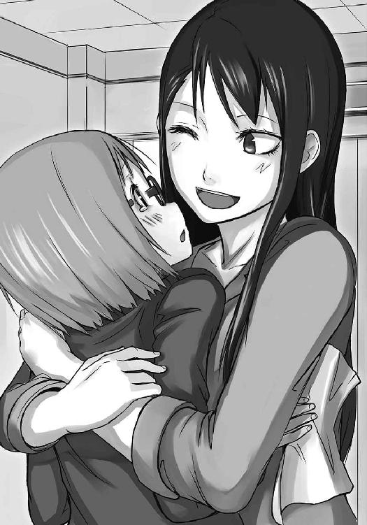
「絶対に、絶対にあたしが結恵を強くしてあげる！ 一緒に頑張りましょう！」
二人の距離はゼロなのに、思いっきり叫ばれる。
「と、巴先生......い、痛いです」
「ああ、ごめんごめん。嬉しくって、つい、ね」
巴がはにかみながら結恵を開放する。
そして、汚れた入部届けが二人の間を渡った。
「じゃあ改めて──」
巴が、結恵の目を見つめ......
「ようこそフェンシング部へ！」
同じ言葉が書かれた黒板を、勢いよく叩いた。
「ぃいっよっしゃーっ！ 新入部員だあーっ！」
琳太郎が両手を上げて叫び声を上げる。
「騒ぐな鬱陶しい」
壁に寄りかかっていた芳人がうんざりした様子で言う。
「......ウチの練習は厳しいぞ。覚悟しとけよ、結恵」
そう言って芳人は、こちらに背を向けて窓の方を向く。外はいつの間にか晴れている。晴天を映し出すガラスに、少しだけ口元を緩めている彼の顔が映ったように見えた。
「よし！ それじゃあ結恵、ここに名前を書いて！」
巴が机の上にあった用紙を差し出す。タイトルには、彼女らしい強烈な色使いで「新入部員名簿♪」とあった。名前欄は、全て空欄。
結恵はその一番上にペン先を置き、自分の名前を綴った。
『有星結恵』。
『第二章 女王蜂の命令』
昨日。入部手続きを終えた後、結恵は巴に付き合ってもらってフェンシングの道具を調達することになった。芳人と琳太郎が練習する声が聞こえる中、二人は道具置き場に籠り、下校時間ギリギリまでサイズ合わせをしていたのである。
「ちょっと使い込んであるけど、サイズが合ってよかったー。これ、全部そろえると十万近くなるからね。琳太郎なんかあの身長だから、ほとんど合うものがなかったのよねぇ」
昨日の巴の言葉を思い出す。フェンシング部は伝統的に、使わない用具を倉庫に残して卒業するらしい。おかげで結恵は、ほとんど何も買わずに済んだ。
（私くらいちっちゃい人も頑張ってたんだなぁ。......うん！ 私も頑張るぞ！）
そんなことを考えているうちに、第二体育館へと到着していた。今日が記念すべき人生初部活。結恵は一度深呼吸すると、小さく頷いて扉を開けた。
「お！ 結恵ちゃん早いねー」
体育館にはすでに琳太郎がいた。ジャージ姿の彼は、床をモップがけしている。
「あの！ きょ、今日からよろしくお願いします！」
「あー......だめだめ。結恵ちゃん、その挨拶はダメだよ」
結恵にしては精一杯の挨拶だったが、琳太郎はため息交じりに「やれやれ」と首を振った。
「結恵ちゃん、野球部とかの挨拶聞いたことあるでしょ？」
「あ、はい。えっと......なんて言ってるかは、よくわからないですけど......」
しかも声が大きいので、近くで挨拶されると結恵はそれだけでビックリしてしまう。
「ウチにも伝統の挨拶があるんだよ。いいかい？ 先輩にその日初めて会ったらこう言うんだ『ヘイ！ ブラザー！ 昨晩は俺の妹とお楽しみだったみたいだな！』って」
「え、ええ？ それって......挨拶......なんですか？」
「細かいことは気にしない！ ......あ！ 芳人が来た！ ほら結恵ちゃん！」
思い切り疑問があるが、琳太郎に無理やり後ろを向かされてしまった。そこで体育館に入ってきた芳人とばっちり目があってしまう。思わず口ごもったが、耳もとで琳太郎が「さ、早く」と急かすので結恵は覚悟を決めた。
大きく息を吸い──
「へ、ヘイ！ ブラザー！ 昨晩は、おおおお俺の妹とお楽しみだったみたいだなあ！」
体育館全体に響くような大声で叫んだ。
周囲が静まり返る。だが、やがて隣のコートからはひそひそ話が聞こえてきた。
「どーいうこと？ あの子一年生でしょ？ ってことはその妹は中学生？ まさか小学──」
「やだあ。蜂谷君ってロリコンだったんだ」
「ちくしょうスズメバチめ。羨ましいな」
「に、逃げろ蜂谷！ 小・中学生に手ぇだしたことがバレたら、女王蜂に殺されるぞ！」
驚愕を隠せない声、侮蔑の視線、羨望の眼差し、警告──それらを一気に受けた芳人は、ただでさえ悪い目つきを更に凶悪にした。そして床を踏み鳴らしながらこちらに向かってくる。
入部初日からやってしまった。運動部は上下関係が厳しいと聞く。洗礼とか修正とか称して大変なことをやらされるかもしれない。
（あ、あうあうあうあう......お、怒られる......。バツとして校庭の真ん中で校歌とか歌わせられるかも。それとも腕立て千回とか？ ももも、もしかしたら丸坊主とか......！）
結恵は、絶対に運動部に対して間違ったイメージと偏見を持っている。
そうして怯えているうちに芳人が目の前まで来た。鬼のような眼差しで結恵を見下ろしている。そして、彼は大きく手を振り上げた。
「このボケがっ！」
瞬間、琳太郎が床に倒れこんだ。彼は腹を押さえて身体をくの字に折り曲げ、奇妙なうめき声を漏らしている。ボディにいい一発をもらったようだ。
「おいテメェ」
「は、はいぃっ！」
無意識に直立する結恵。
「いいか？ コイツはバカだ」
芳人が床に転がっている琳太郎を指差す。
「それだけは覚えておけ。この部活で大切なことの一つだ」
「はあ......」
結恵が空気の抜けるような返事をする。同時に、勢い良く体育館の扉が開かれた。そしてジャージを着た蜂谷巴が駆け込んでくる。
「ヘーイ！ ブラザー！ お楽しみの準備はできてるかー！」
上機嫌でこちらに手を振りながら近づいてくる巴。
「そして......」
芳人はそんな彼女を指差し、言った。
「あいつもバカだからな」
結恵を加えた新生フェンシング部の初練習が始まった。顧問の巴を前に結恵たちが並ぶ。巴は三人そろった部員を見て、満足そうに微笑んだ。
「これで結恵も立派なフェンサーね」
「フェンサー？ ......ってなんですか？」
「フェンシングプレイヤーのことをフェンサーって言うんだよ」
聞きなれない単語に、隣に並んだ琳太郎が答える。
「ほら、似たような言葉があるだろ？ スキーをやる人はスキーヤー。コスプレする人はコスプレイヤー。巨乳好きな人はおっぱい星人」
「バカなこと言ってんじゃねぇよ」
芳人のツっこみに琳太郎は「わかりやすい説明じゃん」と呟く。彼にとっては同列なのだろう。まじめなフェンサーが聞いたら怒りそうなものだが、全国制覇をしたという目の前の顧問は腹を抱えて笑っていた。
「まあとにかく、これでやっと混合団体に出られるわね」
「普通の団体戦はダメなんですか？」
「うん。フェンシングの団体戦は最低でも三人必要なの。ウチは男子が二人に女子が一人だから、男女別の団体には出場権がないってわけ。混合団体はメンバーに男女が混ざっていれば大丈夫だからね。つまり、ウチが出場できる公式戦は個人と混合団体のみなのよ」
「じゃあ私も最初からレギュラーなんですね。何だか、今から緊張します」
「自覚を持つことは大切よ。大会まであと一ヶ月ちょいしかないから、ビシバシ行くからね」
「お、おい！ ちょっと待てよ！」
突然、芳人が慌てたように声を上げた。
「お前、こいつをいきなり六月の大会に出すつもりかよ！」
芳人の指が真っ直ぐ結恵を指差した。その瞬間に結恵は指の先端から逃れるために一歩後ろに下がる。だが、芳人はそんなことも気づかないくらい動揺していた。
「いくら何でも素人を一ヶ月で戦えるように出来るわけねぇだろ！」
「なーに言ってんの。インハイに繋がる大会なんだから出ないわけにいかないでしょうが。大丈夫よ。結恵の防御センスは全国レベル。あたしの突きを止めた子よ？ いけるいける」
「あ、あの......巴先生。あの時は私、無我夢中で......」
いきなり話が大きくなっているので、結恵は少し怖気づきながら言う。
「試合の時は誰でも無我夢中じゃない！ 平気よ！」
「いや......待ってくれ巴ちゃん。結恵ちゃんには大きな......そりゃ大きな弱点があるぜ」
突然、琳太郎が深刻な顔つきで言ったので、二人は言い争いを止める。
「......なによ琳太郎。まさか、何か見抜いたって言うの？」
「ああ......結恵ちゃんはな......」
低い声の琳太郎。結恵は、自分に何か重大な欠点があるんじゃないかと怯えながら息を呑む。
「結恵ちゃんは............胸が大きい！ 突かれる場所が人より出っ張ってるから不利だ！」
その瞬間、琳太郎の頬に巴のビンタが炸裂した。
結恵は胸を押さえ、頬を赤くしながらプルプル震えている。
「なにすんだよ巴ちゃん！ これは由々しき事態じゃ──」
「ねーよバカ。こっちはマジな話してんだよ」
引き下がらない琳太郎の尻に、芳人の蹴りが突き刺さる。
「あーもう！ 皆うるさいっ！ せっかく三人そろったのに大会を見逃すなんてもったいないじゃない！ 出るったら出る！ 目指すは優勝！ 全国制覇！」
言い合いが面倒になったのか、巴は強引に締めてしまった。おまけに、いつの間にか初期目標が「団体に出る」から「全国制覇」になっている。
「とにかく練習開始！ さっさと準備運動しなさいっ！」
話が流れてしまったので、芳人は渋々巴の指示に従った。三人はコートの中心で円になると、準備運動を始める。
それが終わったところで、再び巴の指示が飛んできた。
「よし！ じゃあ次はランニングね。芳人。結恵は初めてだし、軽めに行ってきなさい」
「わかってるよ」
巴の指示に、芳人は片手を挙げて体育館の外に歩き出した。結恵と琳太郎もその後を追う。
グラウンドではサッカー部がパス練習をしており、隅っこの方で弓道部が遠的の準備をしていた。今まで学校が終わるとすぐ帰っていた結恵は、この運動部の面々に混ざっていることが何だか不思議だ。知らない土地にきたような気持ちさえする。
「軽めっつーことで、まずは二周な。結恵は無理ない程度で俺達にペース合わせろ」
「は、はい！ 頑張って走ります！」
「ははは。結恵ちゃん、ダッシュじゃないんだから肩肘張らない。流していこー！」
芳人が「じゃあ行くぞ」といって走り出した。続いて琳太郎が駆けだし、結恵もそれに続く。
「彩花ちゃーん！ 見てみて！ この子ウチの新入部員！ お、陽平！ 新しいマネージャー可愛いな！ 今度紹介してくれよ！」
「黙って走れ」
琳太郎はサッカー部や弓道部の知り合いに手を振って走り、芳人はそんな彼を小突きながら足を動かす。やはり二人は走り慣れているだけあり、ずいぶんと余裕だ。
一方、結恵は......。
「ひぃ、はぁ、ひぃ、はぁ」
早くも息切れしていた。二人との距離がどんどん開いてゆく。ペースを合わせられたのは最初の五十メートルだ。
（は、早いぃ。だ、ダメだ......ちょっとペース落とそう）
芳人の言葉に甘え、スピードダウンする結恵。それでも体育の授業の時よりは頑張っている。いつもならとっくに歩いているだろう。
結局、結恵は先に走り終えた二人が見守っている中で、何とかグラウンド二周を達成する。ゴールしたころには、すっかり先輩二人の身体はクールダウンしてしまっていた。
「ひぃ、はぁ、ひぃ......お、お待たせ、しまひたぁ」
二人の下にたどり着くなり、結恵は地面に膝と手をついて荒い呼吸を繰り返す。
「い、いや結恵ちゃん。ランニング遅れたぐらいで何も土下座しなくたって」
「こ、これは、ただ、疲れてる、だけです」
しかし、傍から見れば本当に土下座しているように見える。
「目立つからバテるのは体育館の中でやれ。おい琳太郎。コイツ運ぶぞ」
「あいよ！」
結恵は芳人と琳太郎に肩を貸してもらい、何とか立ち上がる。......とは言ってもあまりに身長差があるので、つま先はほぼ地面から浮いていた。
「え？ ゆ、結恵!?」
体育館に入るなり、こちらを見た巴が素っ頓狂な声を上げる。
「ちょっとどうしたのよ！ 芳人っ！ アンタこんなに時間掛かって何周走らせたのよ！」
「二周だ」
下ろされた結恵は、再び床に座り込む。
「......マジ？」
「マジマジだよ巴ちゃん。結恵ちゃんってば超女の子走り」
「コイツきっと、今までスポーツどころかロクに走ったこともねぇぞ」
その通りだ。でも息が整っていないから答えられない。
「これは......体力作りから始めないといけないわね」
巴が深刻そうな表情で腕を組む。
「集中的にメニューを組めば一ヶ月以内に何とか人並みになるかしら？ ......ううん、ダメね。そんなことやってたらフェンシングの基礎すら教えられない」
巴はぶつぶつと独り言を繰り返す。
「いっそのこと体力無視してフェンシングを教え込めば......ダメダメ！ いくら結恵の防御能力が高くたって一試合も持たないわ。なんとか同時並行でやらないと」
巴は頭を掻いて、低く唸った。
「バランスよくやろうとすれば一日四時間ぽっちの練習時間じゃ足りない。三ヶ月はかかる。......あー、もう！ 山籠りでもして一日中練習させないと間に合わないじゃない！」
うがー！ と巴は頭を抱えて天を仰いだ。
「ん？ そっか、そうすればいいんじゃない」
ふと、巴は何か思いついたように結恵に向き直った。
「や、山籠りですか!?」
「あはは、まさか。そんなことさせるわけないじゃない」
「お前は本当にやりそうだけどな」
巴が無言で芳人の頭を引っぱたく。
「結恵。超基本的なところから始めるわよ」
巴は結恵に向かって不敵な笑みを浮かべた。
「いい？ これから『宿題』を出すわ」
「宿題？」
「ええ。条件は二つよ」
巴が指を二本立てる。
「条件その１ これからしばらく手と足を一緒に出して歩くこと」
「え、ええ？」
「条件その２ その際、左足は決して右足より前に出してはいけない」
「えええええっ!?」
周囲の視線が痛い。それまで廊下でお喋りに夢中になっていた生徒も、ふとその姿を視界の端に捉えれば、黙って声を潜める。こちらがちらりと見れば、慌てて視線を逸らす始末。
（ううっ、恥ずかしいよぉ）
結恵は俯き、顔を真っ赤にしながら『宿題』を実行していた。
手と足を一緒にして歩く──昨日、巴に言われたときから実行していたが、予想以上に珍妙な歩き方だった。おまけに左足は右足よりも前に出してはいけないという条件までついているから、まるで足を引きずっているようにすら見える。
そして極めつけが──
「おっはよーっ！ 結恵ちゃん！」
「ひゃあああっ！」
背後からやってきた琳太郎が、突然結恵の太ももに手を触れた。驚きと恥ずかしさで悲鳴をあげ、同時に、足全体に流れた電流のような感覚にへたりこむ。
「おーっ、やっぱ筋肉痛になってるねー」
「うぅ......知ってて触ったんですか......」
結恵は生まれたての子牛のような足取りで、壁に手をつきながら立ち上がる。
「ははは、ごめんごめん。まぁ、筋肉痛は新米フェンサーの証だよ」
琳太郎は結恵の隣を歩きながら、自分の太ももを叩く。
「そうなんですか？ 私、てっきり今まで運動してなかったからだと思ったんですけど......」
「そりゃ違うよ結恵ちゃん。フェンシングの練習って普段なかなか使わない筋肉使うからさー、どうしてもなるんだよ。なーに、そのうち筋肉付くから、少しの辛抱だよ」
「そっかぁ。早く痛いの収まってくれるといいです」
「あー、でも結恵ちゃんの柔らかい太ももに筋肉がつくのは、ちょっともったいないなー」
琳太郎は残念そうに肩を落とし、ため息をついた。
「まぁ仕方ないか。じゃあ結恵ちゃん。今日も部活でね！」
そう言うと琳太郎は勢い良く階段を駆け上がっていった。
なんだか今日は朝から恥ずかしい思いばっかりしているような気がする。
「あ！ 有星さん」
ふと、教室に入ろうとした時に声をかけられた。振り返ると、同じクラスの倉田加代子が小走りにやってくる。彼女の後ろには、もう三人の女の子。みんな、結恵と同じクラスである。だけど、話したことはない。
「え？ あ、あの、ど、どうしたの？」
結恵がおずおずと尋ねると、加代子はなにやら楽しげな表情で背後を何度も振り返っている。
「ねぇねぇ。今の人ってさ、琳太郎先輩じゃない？」
「そ、そうだけど......どうして知ってるの？」
「えー！ 格好良くて有名じゃん！ 背が高くてスラっと足が長くてさー、それでフェンシングやっててさー、マジで格好いいよねー。正にアシナガバチって感じ！」
彼はそんな風に呼ばれていたのか。
「もしかして、有星さんの彼氏？」
「え、ええ？ ち、違うよ！」
「マジ？ よかったー。......あ。でも好きとか？ ガチガチに緊張してたじゃん？ 手と足一緒に出るほどにさぁ」
「そ、それも違うよ。これは部活の練習で、琳太郎先輩も同じ部活なだけで、えっと......」
「あれ？ 有星さんって尖った物ダメな系じゃなかった？」
「それは、その......」
「もしかして、それを克服するために入ったとか？」
「えっと、一応、そんな感じ......」
結恵がそう言うと、加代子は驚いたように目を丸くする。
「へー、偉いじゃん。なんか有星さんってさぁ、暗くて内気で鈍そうな子だなって思ってたけどぉ、違うのねー。見直したわ」
そんなことを思われていたのか。でも「失礼な！」と怒れるほど間違っていないのが悲しい。
「あー、でもマジ羨ましいなー。琳太郎先輩と同じ部活って。私は軽音一筋だから入れないけどさぁ、もっと琳太郎先輩の話聞かせてよ」
「う、うん」
「じゃあ早く教室入ろ」
加代子に急かされるまま、結恵は教室に足を踏み入れる。
（なんだか、久しぶりに同級生といっぱい喋ったな）
椅子に座って話をせがむ加代子の笑顔を見ながら、結恵は思う。
（友達に、なれるかな？）
「芳人と琳太郎はランニング行ってきなさい。結恵はあたしとマラソンコース歩くわよ」
準備体操を終えたところで、巴が指示を飛ばす。芳人と琳太郎は連れ立って外に出て行き、結恵は体育館に残った。
「マラソンコース、ですか？」
「そっ。運動部が走りこみに使う道があるのよ。まあ、河川敷をグルって回って帰ってくるだけなんだけど。長さはざっと五キロくらいかな？ ......ただし、『宿題』の歩き方で歩くから、かなり辛いわよ？」
正直、普通に歩いたって結恵にはキツイ距離だ。
でも、こんなところで挫けるわけにはいかない。
「わ、わかりました！ 頑張ります！」
結恵は気合いを入れるように、首にタオルを巻きつける。
「その意気よ！ さぁ出発！」
巴に押され、結恵は外に出た。グラウンドで走る芳人と琳太郎を横目で見ながら、『宿題』の歩き方を始める。結恵が前を歩き、巴が後ろで道を指示。それならまだいいが、彼女はホイッスルを咥えて「ピッピッピッピッ」とリズム良く結恵を急かす。
（こ、これ......運動部の練習って言うか......）
変な歩き方の少女と、その後ろでホイッスルを鳴らす女性。どうみてもチンドン屋だ。隣を追い越していくランニング中の運動部は、皆一様に怪訝そうな顔をしている。
「と、巴せんせぇ。これ、どういう練習なんですか？ あの、ちょっと恥ずかしいです......」
「恥ずかしがることないわよ！ ちゃんとした練習なんだから！ ほら！ 顔を上げる！ 上体真っ直ぐ！ 腰を落としてリズム良く歩きなさーいっ！」
答えになっていないことを叫び、巴はけたたましくホイッスルを鳴らす。
結局、三時間近くかけてマラソンコースを歩き終えたときには、体力的にも精神的にもボロボロになっていた。おかげで残りの練習時間は、二人が模擬戦している中、隅っこの方でへたり込んでいただけで終わってしまう。
「よし！ 今日はここまで！」
「お疲れ様でした、っと」
「お疲れしゃーしたあ！」
「お、お疲れ様です」
巴が号令に、三人は息を吐いて力を抜く。
「んー、今日も疲れたなー！ 結恵ちゃんは帰れるくらいには復活した？」
「あ、はい。なんとか。えっと......ごめんなさい、先輩たちが練習してるのに休んでて......」
「そんなん、別にいいって」
「よくねぇよ。うちはウォーキングクラブじゃねぇんだぞ。早いとこ体力つけて練習混ざれ」
芳人は冷たく言い放ち、帰り支度を始める。結恵は少し俯いてしゅんとなるが、琳太郎がすかさずかがんで結恵の傍で耳打ちする。
「気にしない気にしない。芳人は口が悪いだけだから、責めてるわけじゃないよ」
そう言われ、少し気が楽になった。結恵は「ありがとうございます」と頭を下げる。
「ほら！ 消灯するからさっさと帰る！ 明日もあるんだから早く休みなさい」
巴がパンパンと手を鳴らしたので、結恵と琳太郎も慌てて帰り支度を整え始めた。
「......うー、足痛いなぁ」
自転車通学の芳人と琳太郎と別れ、結恵は一人で駅に向かう。ホームにたどり着くと、電車が来る五分前だった。『宿題』の歩き方をしていたのでずいぶん時間が掛かってしまったが、ぎりぎりで間に合った。
結恵はホームの黄色い線の内側に立ち、バッグを地面に置いて太ももを揉み解す。
（今日は歩いただけで終わっちゃったなあ。これ、どういう練習なんだろう？）
フェンシングどころか、スポーツの知識も皆無に近いから、目的がさっぱりわからない。だとしても、自分にできることは言われた練習を真面目にやることだけだ。
そう思うが、帰り際に芳人に言われた言葉が脳裏をよぎってしまう。
（ウォーキングクラブじゃない、かぁ。......あっ、だめだめ！ 悪いところばっかり思い出しても仕方ないよ。今は体力つけることが一番。......よし、今日は一駅だけ歩いてみよう）
結恵が心の中で奮起したところで、電車が到着した。周囲の人が怪訝そうな目で見る中、結恵はきっちり『宿題』をやりながら電車に乗り込む。
（じゃあ、お母さんにちょっと遅くなるってメールしておかないと）
そう思って、バッグのポケットに手を入れようとしたときだった。
「あれ？」
携帯電話がない。......というか、バッグ自体がない。
振り返ると、ホームの地面に置き去りになっていた。
「ああっ！」
結恵は慌てて引き返すが、無常にも、外に出る前に扉が閉まった。ゆっくりと電車が動き出す中、結恵はドアに手をついたまま、呆然と遠ざかるバッグを眺める。
「ドジな子......しょーがないわね」
ふと、笑い声を含んだような声が聞こえた。同時に、車内に風が流れ込んでくる。見ると、他校の制服を着た女の子が、電車の窓を全開にしていた。
その手には、ギターケースのような長い三角形のバッグ。
（あれって......）
彼女が素早くバッグの止め具を外す。その中から滑り落ちてきたのは、紛れもなくフェンシングの剣。彼女はそれを掴むと同時に窓から上半身を乗り出し、結恵のバッグ目掛けて構える。
そして、風を貫くような突きでバッグの持ち手に剣の先を突き入れた。
「ちょっと重いわね......折れないでよ！」
彼女が剣を跳ね上げる。それにつられてバッグは剣の刀身を滑り、彼女の手の中に流れ込んできた。彼女は、それを手にぶら下げ、こちらに歩み寄ってくる。
「はい。忘れちゃダメよ」
そう言って彼女はバッグを差し出す。同年代の女の子より、少し背が高い子だった。セミロングの髪の毛から、いい香りがする。切れのいい目尻をしていて、おどけたような笑い方が似合っていた。
「あ、ありがとうございます......」
結恵は、ぽかんとしながらバッグを受け取る。その目は、自然と彼女の剣に向いていた。
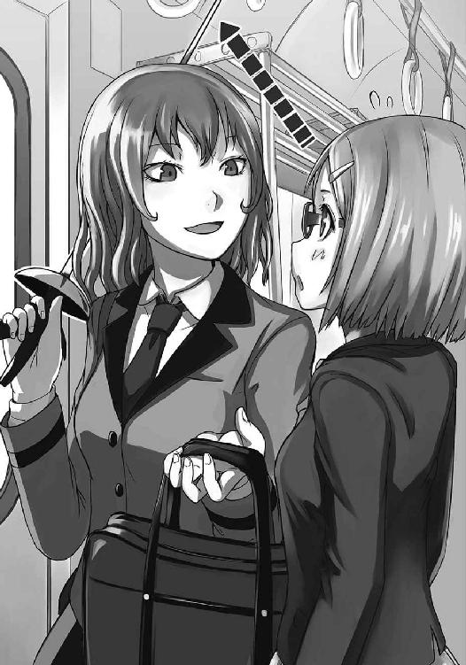
「ん？ これ？ フェンシングの剣よ」
結恵の視線に気づいたのか、彼女は剣をチラつかせた後で、ケースの中にしまった。
「アナタの制服、杜坂だよね？ そこにもあるはずなんだけど、知らない？ 蜂谷巴さんっていう人がいるんだけど」
「あ、あの、私もフェンシング部です。入ったばっかりですけど......」
「うそっ!? 杜坂の新入部員なの!?」
結恵の言葉に、彼女は口に手を当てて目を丸くした。
「ねぇアナタ、名前は？」
「あ、有星結恵です」
「結恵ちゃんか。......聞いたことないな。経験者じゃなさそうね」
彼女は目を細め、結恵の全身を一瞥して呟く。
「──っと、私は三条椎奈。荻野高校の二年よ」
荻野高校──市内でも文武両道で有名な高校である。有名大学への進学率もよく、各部活動の全国大会でも常連と聞く。結恵の偏差値ではかすることも出来ないところだ。
電車が駅に止まり、何人かが降りたので、二人はそこに腰を下ろす。
「杜坂に新しい子は、何人入ったの？」
「いえ、あの、私だけです。......あっ、幽霊部員さんも何人かいるみたいですけど」
「そっか。......それにしても巴さんも人が悪いな。『選手』が入ったなら教えてくれてもよさそうなのに。......それとも......」
椎奈が探るような目で見てくるが、結恵は「えっと、その......」と上手く答えられない。そんな姿を見て椎奈は何を思ったのか、口元に笑みを浮かべる。
「まぁ、大会までの楽しみにしておくわ。......ふふ、でも今年は杜坂も混合団体に出てくるのね......面白くなりそう」
「え？ えっと、それって競争相手が増えて困るんじゃないんですか？」
「それはそれ。これはこれ」
椎奈は片目を瞑り、首を少し傾げる。
「杜坂には芳人がいるでしょう？ アイツ、市内の女子フェンサーに人気あるのよ」
「そうなんですか？ 琳太郎先輩のこと格好いいって言う人なら、クラスにいますけど......」
「あー......ほら、琳太郎はバカだから」
どうやら琳太郎は、他校の女子フェンサーにもちょっかい出しているらしい。
「芳人がモテるのは強いからよ。アイツ、去年は一年生なのに市内優勝、県内準優勝、全国ベスト16になってるしね。皆、一回は戦ってみたいって思ってるのよ。混合団体じゃなきゃ女子は男子と戦えないから、今回はチャンスね」
ようやく納得できた。そういう意味では、同じ高校にいる自分は幸運なのかもしれないと思う。インターハイ覇者の顧問と、全国でもトップクラスの部員。初めて体育会系の部活に入った結恵にとっては天上人である。
「ところで、結恵ちゃんも杜坂のレギュラーなんでしょ？ 今はどんな練習してるの？」
「えっと、手と足を一緒に出して歩く練習です」
自分で言っておいて、意味がわからない。
でも、椎奈は納得したように何度も頷いた。
「ああ......確かに初心者向きね」
「え!? 知ってるんですか？ あ、やっぱりフェンシングやる人は、最初この練習から......」
「そんな練習考え付くのは、巴さんくらいね」
結恵はちょっとがっかりした。もしかしたら、何かわかると思ったのに......。
「でも、安心して。巴さんは信じていい人だよ」
「え？」
顔を上げると、椎奈がこちらを向いて微笑んでいた。
「フェンシングに賭ける情熱で、巴さんの右に出る人はそういないわ。あの人は、本気でフェンシングをやりたいと思っている人を裏切らない。そう断言できるくらい強いカリスマを持つ人よ。......私も、杜坂に行くか迷ったくらい」
「え？ あ、あの......」
「おっと、もう駅だ」
結恵が言葉を発する前に、椎奈は立ち上がった。彼女は「それじゃあね」と手を上げてドアから出てゆく。その背中を見送った後で、結恵は椎奈の言葉を心の中で反芻した。
──巴さんは信じていい人。
（......うん！ そうだよね！ 巴先生、絶対に強くしてくれるって言ったもん。一緒に頑張ろうって言ってくれたもん！ なら、私は信じて一生懸命やんなきゃ！）
そう、結恵が小さな手を握り締めた時。
「あ、そうそう。最後に一つ」
「わっ！」
いつの間にか、帰ったはずの椎奈がドアから首だけ出してこちらを向いていた。
「お姉さんからアドバイス。その歩き方、左足を早く動かすように意識してみるといいわよ」
「え？ あの......」
「またね。結恵ちゃん」
ベルが鳴り、椎奈が首を引っ込めた瞬間にドアが閉まった。電車がゆっくり動き出す。結恵が振り返って外を見ると、小さく手を振る椎奈が風景と一緒に横に流れていくところだった。
「......左足を、早く......か」
駅に着いたら、やってみようと思った。
『宿題』をやり始めて、三日目。練習はいつもマラソンコースを歩くだけ。相変わらず、どういう練習かはわからない。でも、結恵はひたむきに歩いた。通学でも、学校でも、家でも、変な目で見られながら歩いた。それから、椎奈に言われたことも忘れずやってみる。
「うん。だいぶ早く歩けるようになったわね」
結恵と一緒にマラソンコースから帰ってきた巴は、時計を見ながら満足そうに言う。
「よし！ 結恵！ フットワークを教えてあげるわ！」
「は、はい！ ありがとうございます！」
やった、と心の中で声を上げた。ようやくフェンシングを教えてもらえる。
「まずは構えから。左足を横向きにして、右足を直角になるように置きなさい」
巴が口で説明しながら、やってみせる。
「次は右足を一歩半、前に出す」
結恵は巴の格好を見ながら真似をする。
「それから腰を落として」
筋肉痛もなくなりつつあるから、そこまで痛くない。
「次は腕！ 左手はそのまま。右手を少し曲げて、上体を真っ直ぐに」
「こう、ですか？」
「そう。それが基本の構え──オンガードよ。どう？ 辛くない？」
「あ、はい。大丈夫です。......なんか、いつもは使ってない筋肉を使っているような感じはしますけど、痛くないです」
いつか琳太郎が言っていたことを思い出す。
「ならよし。じゃあいよいよフットワークね。前進──マルシェから行くわよ。右足をもっと前に出して！」
これくらいですか？ と結恵は半歩ほど右足を進める。
「そう。そしたら左足を引きつけて元の格好に戻る！」
「こ、こうですか？ なんだか、ちょっと変な動き方してるような気がするんですけど......」
「大丈夫よ。はい、じゃあもう一回！ 今度はもっと早くやってみなさい」
結恵は「は、はい！」と返事をしながら右足を前に出し、左足を引き付けてオンガードの格好に戻る。だけど、何かがおかしかった。
戸惑い......だろうか？ 慣れない──しかも妙な動きをしているのに、体がすんなり対応してくれることに関しての戸惑い。
「さっ！ もう一回！ もっともっと早く！ 流れるような動きで！」
「は、はい！ ......あれ？」
ふと気がつき、結恵が首をかしげた時。
「おおっ、結恵ちゃん！ 完璧じゃん！ 綺麗なフォームだよ！」
結恵の練習を眺めていた琳太郎が、手を叩きながら駆け寄ってくる。
「え？ あ、ありがとうございます琳太郎先輩......！ なんだか、不思議な感じがする動きですけど、これで良かったんですね」
「いい！ いい！ ばっちりだよ！ な？ 芳人！」
「それくらい、出来て当然だ。オラ琳太郎。もう一戦行くぞ」
芳人はうるさそうに顔を歪め、琳太郎の首根っこを掴んで引きずっていく。
結恵はちょっとだけしゅんとなるが、すぐに巴が笑顔を浮かべながら耳打ちしてくれた。
「芳人はああ言ってるけど、ダメ出ししないってことは文句ないってことよ」
「そうなんですか？ そうなら......嬉しいです」
結恵は胸の前で手を握ってはにかんだ。......それにしても、運動オンチの自分がどうしていきなり上手に出来たんだろう？ そう思ったところで、さっき感じた違和感を思い出した。
「あっ！ あの、巴先生。この動き方って、もしかして......」
巴が微笑む。
「『宿題』に似てるでしょ？」
そうだ。違和感の正体はそれだ。
「フェンシングは利き手と同じ足が前に出るの。それから基本的に左足が右足より前に出ることはない。『宿題』をやったまま早く歩こうとすればどうしても腰が落ちてくるから、余計にフェンシングのフットワークに似てくる」
「あ......そっか......私、ずっとフェンシングの動きしてたんだ......」
朝も、昼も、夜も。歩いている時間全てが練習だった。
知らず知らずのうちに、身体に覚えこまされていたんだ。
「体力面にはまだ課題があるけど、この調子でガンガン行くわよ！」
結恵に向かって握り拳を作る巴。
『巴さんは、信じていい人だよ』
結恵は心の中で椎奈にお礼を言う。
「それにしても嬉しい誤算は左足ね。ずいぶん機敏に動くようになったじゃない。まだそこまでは求めてなかったんだけど、おかげで予定より早く次に移れるわ」
「あ......は、はい！ 次もよろしくお願いします！」
太ももの前で手を重ね、結恵は頭を下げる。
細くひ弱だったそこが、少しだけ頼もしく思えるような気がした。
「結恵！ そんな動きじゃ相手に逃げられるぞ！」
「集中よ結恵！ 疲れてきても体勢崩さない！」
「は、はい！」
芳人と巴の激励に、必死に返事をする。
あれから三日。一通りの動き方を覚え、今日からフットワークの練習に混ぜてもらえるようになった結恵だが、やはり他の部員についていくのはまだまだ難しい。
「琳太郎！ 雑になってきてるわよ！」
「オラ琳太郎！ 腰落とせ！ 動きブレてるぞ！」
「お、おう！」
慣れているはずの琳太郎でさえ、歯を食いしばって額に汗を浮かべている。
そんな調子で、三十分ほどのフットワーク練習が終わる。そこから五分の休憩を挟み、芳人と琳太郎は剣を使った練習に入った。結恵は巴に呼ばれ、疲れた身体に鞭打って立ち上がる。
「とりあえず、フットワークを通しでできるくらいにはなったわね」
「あ、ありがとうございます。私、こんなに動いたのって初めてかもしれないです」
「最初はウォーミングアップで動けなくなっていたんだから、大きな前進ね」
それでも人並みといえるかどうかだろう。けれど、結恵は嬉しそうに照れ笑いを浮かべる。
「じゃあ今日は、剣を持たせてあげる」
「剣を......」
その言葉に、照れ笑いが薄らいだ。入部前に危惧していたこと......自分に剣を扱えるのか？ こんなに、尖ったものが怖いのに......見るだけでも身構えてしまうのに......。
「やっぱり怖い？」
結恵の表情を見て何か感じたのか、巴がそっと問いかけてきた。結恵は、おずおずと頷く。
「剣と思うから身構えちゃうのよ。下が長いコマだと思いなさい」
巴が剣の先端を下に向けて立てる。そうすれば、ガードを円盤部分に見立てた、下がやたら長いコマに見えなくも......いや、見えない。けれど、巴があまりに突拍子もない例えをするので、結恵は思わず笑ってしまった。
「ふふ......こんなに長いコマ、回らないですよ」
「そりゃそうね。......まっ、とにかく気を楽にしなさいってことよ」
そして互いに笑いあう。ちょっとだけだけど、気が楽になったような気がした。
「さて、と。じゃあ早速、結恵に合う剣を作らなきゃね」
「えっ！ 巴先生、剣を作れるんですか!?」
「......作るって、パーツを組み立てるだけよ？」
結恵は「あっ」と顔を赤くした。頭から、巴が鍛冶場で金槌を振るっている姿を消し去る。
「なに想像していたか知らないけど......まぁいいわ。一言で剣と言っても、色々な種類があるの。自分の体格、戦闘スタイル、癖、好みによってパーツを変えて、オリジナルの一本を作らなきゃ最高の試合は出来ないわ」
そう言うと巴は三段開きの工具箱を開き、ガチャガチャと中を漁り始めた。
「まずはあたしの余りで一本作ってあげる──っと、あったあった」
結恵の前に、奇妙な形をした三つの部品が並べられる。
「これは剣のグリップよ。これによってスタイルがかなり変わる」
なんだか、新しい服の寸法を取っているような気分だ。
「一つ目はこの真っ直ぐな『フレンチ』。リーチが長くて握りやすい反面、力が入りにくくて操作が難しい。琳太郎はコレ。次はこの『ピストル』。突きやすくて、手首の可動域が一番広い。けれどリーチが短いの。芳人が使っているわ。最後が『ベルギアン』。力が入りやすくて、精密な剣の操作ができる。ただ手首の動きが制限されるわ。あたしの愛用ね。どれがいい？」
結恵は三つを手に取り、順番に握ってみた。
（『フレンチ』は握りやすいなあ。これいいかも......あ、でも、難しいんだっけ。『ピストル』は名前が怖いからヤだな。『ベルギアン』は、変な形。両手を広げて片足立ちしてる人みたい）
「あら、珍しいわね。『ベルギアン』を一発で正しく握れるなんて」
巴が少し驚いたように結恵の手元を覗きこんでくる。
「え？ そうなんですか？ なんか自然に......」
首を傾げながら自分の手を見て、はっと思い出した。
「あ......これ、お父さんが使ってたのと一緒だ......」
遠い昔、父が剣を持たせてくれたことがあった。大きな手で、結恵の指の一本一本を動かして、持ち方を教えてくれたんだ。あの時は、自分の手は小さすぎて上手に持てなかった。けれど、今はちゃんと持てるようになっている。
結恵は少し笑みを浮かべ、『ベルギアン』を差し出す。
「これがいいです」
巴は優しく微笑み、それを受け取る。
「オッケー。じゃああとはパーツもないし、適当に組むわね」
巴は工具を取り出し、バラバラだったパーツを組み立てていく。鮮やかな手つきで、ものの十数分で一振りの剣が完成してしまった。
出来上がったそれを、巴が差し出してくる。結恵は思わず怖気づくが、巴の言葉を頭の中で唱えた。
（これはコマ......これはコマ......大丈夫......気を楽に......）
結恵は頭を振って嫌なイメージを追い出すと、恐る恐るグリップに手を伸ばす。
掴んだ瞬間、身体が強張った。......だが、持てた。なんとか持てた。結恵は大きく息を吐く。
「......ありがとうございます。巴先生」
受け取ってみると、思った以上に剣は軽かった。刀身と、手を守る「ガード」と言われる部分は傷だらけで、何度も戦線を潜り抜けてきたことを窺わせる。長い間使われていなかったのか、照明を反射する光は鈍かった。結恵はマジマジと剣の先端以外を見つめる。
「あれ？ シールが沢山貼ってある」
ふと、ガードの裏に小さなシールがびっしりと貼ってあるのに気がついた。古いものらしく、かすれて何が書いてあるかよくわからないが、何にせよデコレーションとしては味気ない。
「ああ、合格シールね。大きな大会だと、試合前に不正防止のためとかで剣を検査に出さなきゃならないの。それで問題がなかったら、そのシールを貼ってもらえるのよ」
「へぇ、そうなんですか。じゃあ、巴先生はこんなに沢山の大会に出たんですね。凄いです」
「まぁ、合格シールの数はフェンサーのちょっとした誇りみたいなものだしね。ガードが歪んで使えなくなっても、シールがあるから取っておく人も大勢いるわ」
アイツなんかがそう──と、巴は意地の悪い笑みを浮かべて遠くの芳人を指差す。
「さて、お喋りはここまで。早速突いてみましょ。的になってあげるから」
そう言うと巴はユニフォームを身につけ、マスクを被った。
結恵は、怯える心を叱咤するように剣を強く握る。
「はい。オンガード！ この辺狙って突いてみて」
巴は剣を右手に持ち、左手で自分の胸をドンドンと叩く。
結恵は大きく深呼吸してから構えを取り、巴が示した部分を見つめる。
「それじゃあ......」
そう呟き、巴が結恵の剣に自分の剣を添えたときだった。
（──ひっ！）
視界一杯に、巴の剣先が飛び込んでくる。身体が萎縮し、喉が締め付けられるような気がした。鋭い切っ先に、恐ろしい顔をした怪物が見える。こちらを睨みつけ、自分の目に牙を突き立てようとする、先端の悪魔。
「わぁッ！」
瞬間、結恵は目を瞑って巴の剣を弾き飛ばした。彼女の手から離れた剣が体育館を転がる。
「......あ」
また、やってしまった。恐怖に負け、我を失ってしまった。
「あ、あの......ごめんなさい......その、びっくりしちゃって、私......」
「あ、あはは。うんうん。防御は大丈夫ね。でも今は突きの練習よ？」
巴は笑って剣を拾い上げる。
結恵は「はい......」と少し沈んだ声で返事をし、もう一度構えを取った。
再び巴が結恵の剣に自分の剣を沿える。
やはり、また先端の煌きが自分の目に飛び込んできた。
（だ、だめ！ 我慢しなきゃ！ 怖くても我慢しなくちゃ！）
必死に自分を抑えるが、手の震えは止まらない。剣と剣がぶつかってカタカタ音を奏でる。
「じゃあ結恵──」
巴が、わずかに剣先を動かした。
（──刺さる！）
そんなはずはないのに。
「ぃやぁっ！」
結恵は剣を投げ捨て、目を塞いでうずくまってしまった。
「う、うう」
指の間にスキマを開け、恐る恐る外を見る。視界に入ったのは、投げ捨てた剣と、マスクを脱いだ巴の、悲しそうな顔だった。
「あ......。ご、ごめんなさい巴先生......その、私......」
「......大丈夫よ結恵。......でも、突きの練習は、また今度にしましょう」
「あ......」
失望させてしまった。結恵は情けなさに首を垂れる。
「これじゃあ、試合どころか相手にも向き合えないわね」
巴が困ったように髪をかき上げる。結恵はただ俯くことしかできなかった。
（私......なんてことしちゃったんだろう。巴先生の大事な剣だったのに......それで教えてくれようとしたのに）
巴の誇りが詰まった物を、自分は投げ捨ててしまったのだ。罪悪感が胸の中を黒く染める。
（どうしよう......もう一回やらせてくださいって言いたい......けど......）
向き合える自信は、なかった。
また、巴の剣を投げ捨ててしまうかもしれない。
二人の間に静寂が訪れる。巴は顎に手を当て、何かを考えているようだ。結恵はそんな彼女を不安そうな表情で見上げる。
（もう......剣持たせてもらえないかも......）
そんな考えがよぎったときだった。
「結恵！ また『宿題』を出すわ！」
「え？」
いつの間にか、巴の顔はいつもの表情に戻っていた。
「いい？ よく聞きなさい？」
巴はユニフォームを脱ぐと、マスクと一緒にそれを結恵に押し付けてきた。
「この防具全てに、十個ずつ穴を開けなさい」
「え、ええ!?」
「今度の条件は三つよ」
結恵の驚愕を遮り、巴が指を三本立てる。
「条件その１ 道具は剣しか使ってはいけない」
「えっ、あ......また、この剣を使ってもいいんですか？」
「なに言ってるの。当然でしょ？ はい、条件その２ 『宿題』の期限は三日間」
「良かったぁ............あっ！ は、はい！ 三日ですね！ 頑張ります！」
「よしよし。じゃあ条件その３ 人の手を借りても構わない」
「はい！ ......って、ええっ！ 手伝ってもらってもいいんですか!?」
「全然オッケー。前の条件二つを守ればね」
「は、はあ......。あ。あの、もう一つだけいいですか？」
「なに？」
結恵は自分の両手一杯にある防具を見る。
「これ、本当に壊してもいいんですか？」
巴は大きく頷く。
「蜂の巣にしてやりなさいッ！」
「えいっ！」
自室の壁にかけたユニフォームに向かって、結恵は剣を突きたてた。
「えいえいえいっ！」
何度も何度も突く。初心者の突きなので、狙いが四方八方に飛ぶ。当然、穴など開かない。
「えいえいえいえいえいえいえいえいえいえいえいえいえいえいえいえい、えぇーいッ！」
ヤケクソに突きを繰り出し、最後に気合いの入った一発を放った。その瞬間、今までよりも剣先がめり込む感触が伝わってくる。
「あっ！ やったかも！」
結恵は笑みを浮かべてユニフォームを見るが、相変わらず穴は開いていない。「あれ？」と呟いて壁からユニフォームを取ってみたら、壁に小さな窪みが出来上がっていた。
（あああ！ ど、どうしよう......お母さんに怒られちゃう）
結恵は慌てて左右を見回し、仕方なくカレンダーの場所を移動させてその窪みを隠した。
「うーん、なかなか開かないなぁ」
家に帰ってから二時間、ひたすら『宿題』を実行したが、まったく成果は上がらなかった。
（ユニフォームの生地って厚いなあ。でも剣は金属だし、簡単に開くと思ったのに）
甘く見ていた分、余計に疲れる。
「一旦、ユニフォームは諦めよ」
今度は代わりにマスクを取り出す。前面を金属製の格子で覆われているそれは、布製のユニフォームよりも手強そうだ。けれど、格子の隙間に剣先を捻り込めれば、望みはある。
「えいっ！ えいえいえい！ えぇーいっ！」
マスクを床に置いて再び突き始める結恵。だけども、硬い格子に剣先が弾かれるばかりだ。
（腕の力だけじゃダメなのかなぁ......。もっと思いっきりやってみよう）
そう思い立つと、結恵はマスクと剣を抱えて外へと出た。
暗い夜道の中、結恵は地面にマスクを置くと、剣を持ってその場から離れる。たっぷり三十メートルほどの距離をとって、小さな的に向かって目を凝らした。
（助走をつけて突けば──！）
腰を落とし、呼吸を止め、スタートを切るために足に力を込める。
「......あ」
その時、マスクを置いた傍のわき道から、野良犬がとことことやってきた。犬はマスクの匂いをかぐと、その端っこを咥える。
「あ、あ！ それにイタズラしちゃだめ！」
結恵が思わず声を上げると、犬は驚いたように後ずさりする......マスクを咥えたまま。
結恵は顔を引きつらせると、中腰になり、そろりそろりと近づき始めた。
「お、おいでおいで？ 何もしないよ？ だから、それ返してね？」
結恵が近づくたびに、犬は警戒したように唸り声を上げる。
「あ。もしかして、前に写真撮ったこと、怒ってる？ ご、ごめんね。もうしないから」
結恵がそっと片手を伸ばすと、犬は更に唸り声を強める。
（どうしよう......あ、そっか！ 犬にしたら私だって大きいから、怖がってるんだね！）
思いつき、結恵は膝を着いて四つんばいになった。
「ほら、怖くないよ？ 私も同じくらいちっちゃいよ。だから、ね？」
結恵は「伏せ」のような体制になり、唸り声を上げる犬に向かって話しかける。
その時、ふいに影が差した。
「......外で何か喋ってると思ったら......なにしてるの？」
いつの間にか、母が呆れたように結恵を見下ろしていた。
「あ......お母さん。え、えっと......これは、その......」
妙な格好を見られて恥ずかしくなり、頬に赤みが差す。
「ん？ あっ！ この犬！ またウチの庭荒らしに来たわね！」
母は犬を見つけると、腰に手を当てて地面を踏み鳴らした。
「こらっ！ あっちに行きなさい！」
「あっ！ あっちに行っちゃダメ！」
結恵の叫びも虚しく、母の声に驚いた犬は、一目散に逃げ出した。
もちろん、マスクを咥えたまま。
「あああ！ ま、待ってっ！ 返してぇっ！ 持ってっちゃだめぇぇぇえええっ！」
「ちょ、ちょっと結恵？ どうしたの！」
夜のご町内に、結恵の泣き声交じりの悲鳴が響き渡った。
昼休みに教室内に、重苦しい刺突音が響く。誰もが箸を止め、怪訝な表情でその音のするほうを見ていた。
だが、音の主──結恵は気にせず床に敷いたユニフォームに向かって剣を振るっている。
「......なにしてんのよ、有星さん」
顔を上げると、そこには他のクラスメイトと同じような表情をした倉田加代子が立っていた。
「あ、倉田さん。これ、部活の『宿題』なの」
「へー。そういえば前も変な歩き方してたっけ。今度はなに？」
「えっと、三日以内にこの防具に十個ずつ穴を開けるの」
結恵がユニフォームとマスクを見せる。
「へーんな練習。っていうかぁ、まだ一個も開いてないみたいだけど？」
「そうなの......簡単だと思ったんだけど、意外と難しくて......」
昨日。なんとか犬からマスクを取り返して『宿題』に取り組んだが、まるで進んでいない。だからこそ結恵は焦っている。それこそ、クラスメイトの視線が気にならないくらい。
「ホント、聞くだけだと簡単そうだけどね。この剣、固そうだし。......ふーん、フェンシングの剣ってこんな風になってんだ」
加代子はしゃがみこんで結恵の剣をじろじろ見ている。
「......ねぇ有星さん。頑張っているところ悪いけどさ、ちょっと剣触ってもいい？」
ふと、加代子が好奇心に満ちた表情で言ってきた。
「え？ いいよ」
「マジ？ やった！ ありがとう！」
加代子は笑顔で剣を受け取り、その場で突きをしてみた。それから「どう？ 似合ってない？」とポーズを取ったり、抜刀の真似をしてみたりとはしゃいでいる。
「倉田さん。よかったら突いてみる？」
クラスメイトが喜んでいるのが嬉しくて、そう言ってみた。すると加代子は「マジいいの？」と目を輝かせる。
「あ。でもさぁ、これって有星さんの『宿題』なんでしょ？ 私が穴開けたらマズくない？」
「大丈夫だよ。巴先生が、誰かに手伝ってもらってもいいって言ってたし」
「変な練習。でも、まっいいか。それじゃあ遠慮なくやっちゃうよー！」
加代子がユニフォームに向かって突きを繰り出す。床にぶち当たった剣は大きくしなり、弧を描いた。その瞬間、慌てて加代子が手を引っ込める。
「わっ！ あっぶなー......。っていうか怖っ！ 折れるかと思った」
「結構しなるから平気みたいだよ」
「あ、マジだ」
加代子は何度もユニフォームを突く。そのたびに剣はしなり、バネのような反動で元に戻る。
「あー、ちょー面白かった。ありがとねー」
一通り突きを満喫した加代子は、やりきった顔で剣を返す。
「でもこれさぁ、難しくない？ っていうかさぁ、女子の力じゃ無理っぽくない？」
「そんな......どうしよう。あと二日しかないのに......」
結恵は困った表情でユニフォームを撫でる。このまま『宿題』を達成できなければどうなるのだろうか？ 試合に出してもらえないとか？ まさか、退部とか......そう考えると、不安でまた焦りが酷くなってくる。
「っていうかさ、クラスの男子に手伝ってもらえばよくない？」
加代子がこともないように言う。
「え？ で、でも私、クラスの男の子とあんまり話したことないし......」
「じゃあ私が頼んであげる。中谷！ 井川！ 矢車！ ちょっと来てよ！」
結恵の戸惑いを無視し、加代子は教室の隅で弁当を食べていた大柄な男子達を呼びつけた。彼らは顔を上げると、食事を中断して机の間を縫ってくる。
「ご飯中悪いけどさ、ちょっと有星さんのこと手伝ってよ」
加代子が言うと、三人の大柄な男が一斉にこちらを向いた。結恵は思わず萎縮してしまう。
「有星さん。こいつら、クラスの筋肉自慢トップスリー。有星さんのことだからまだ話したことないでしょ？ こいつが中谷」
「柔道部の中谷だ」
「あ、はい。えっと、フェンシング部の有星結恵です」
肩幅の広い角刈りの男子が、言葉少なめに言う。結恵もぺこりとお辞儀を返した。
「で、こいつが井川」
「しゃっす！ 野球部の井川っす！ ポジションはレフトっす！ 右投げ左打ちっす！」
「あ、うん。よろしくね。えっと、えっと......私は右手で剣を握ってます」
井川は丸坊主の男だ。お手本のような野球部員の話し方をする。とりあえず、あわせて自己紹介をしたが、トンチンカンなのは否めない。
「それから、こいつが矢車」
最後は長髪の男だった。
「どうも。アニメ研究部の矢車です」
「え？ アニメ......研究部？」
何故アニメ研究部員が三人の中で一番マッチョなのか。
「同好会ですけどね。ちなみに好きな作品は『魔法少女マッスルりんごちゃん』です」
「あ、日曜日の朝にやってるのだよね？ 見たことはないけど......」
「ぜひお勧めするよ。平凡な小学５年生の富士りんごちゃんは、林檎を素手で握りつぶすことで魔法少女に変身するんだ。どう？ なかなか深いテーマを感じる設定でしょ？」
「は、はあ......ちょっと、よくわかんないけど......」
「良かったらＤＶＤを貸してあげるよ。ちょうど今なら、林檎を左手でも握りつぶすことが出来るようになったりんごちゃんが活躍する『魔法少女マッスルりんごちゃん２～ダブルデストロイ～』もやってるし」
「は、はあ......ありが、とう？」
なんとなくお礼を言ってしまった結恵。
「で？ 倉田、何をすればいいんだ？」
「この剣でさぁ、この防具に穴を開けてよ」
「え？ なんでそんなことやるんっすか？ ハサミとか使えばいいじゃないっすか」
「知らないけど、それが結恵の部活の『宿題』なんだって」
「何かよくわからないけど......まぁいいか。こっちのヘルメットみたいなのは難しそうだね。この服からやろうか」
「なら俺と井川が服を持って、一番筋力ある矢車が突くって事でどうだ？」
三人が相談を終える。早速、中谷と井川が服を持ってピンと張った。そして、矢車が剣を持つ。左手を突き出し、右手の剣を大きく引いた構え。まるで新撰組の誰かがやりそうな構えだ。
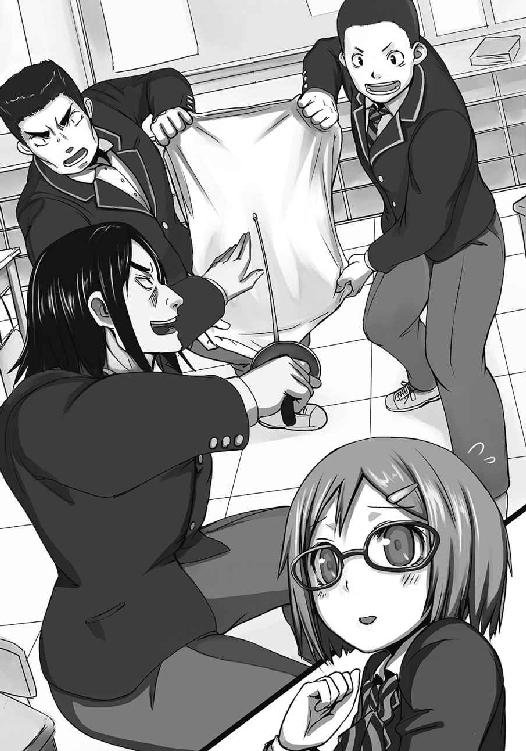
矢車は大きく息を吐くと、懇親の力で突きを放った。
「デストロォイッ！」
その掛け声はいかがなものか。
しかし。
「あっ！」
ビリ──と、布の裂けるような音がした。
「やったか？」
「そのセリフはフラグだよ、中谷君」
矢車がブレザーを脱ぐ。その下にあったワイシャツの背中が、縦に裂けていた。
「あんたらでもダメか。どんだけ丈夫なのよ、この服」
「ごめんね倉田さん、有星さん」
矢車が申し訳なさそうに頭を下げる。
「あ、いえ！ そんな......むしろ、私の方がワイシャツ破かせちゃって、ごめんね......」
「お前が気にすることじゃない......だけど、このままじゃ俺達の気が収まらないな」
「え？」
結恵は首をかしげるが、他の二人は力強く頷いていた。
「一ヶ月、待ってくれ。三人でビルドアップしてリベンジする」
「え？ あ、あの！ えっと、これには期限があって......」
「おい二人とも。早速ウエイトルームで筋トレだ」
「まずは有酸素運動の方がいいんじゃないっすか？ 筋肉の付き方がダンチっすよ」
「終わった後はプロテインも欲しいね。りんごちゃんパッケージのやつを分けてあげるよ」
三人は結恵の言葉など聞こえないようで、連れ立って教室を出ようとする。
「あの、あの！ ちょ。ちょっと待って！」
結恵が必死に呼ぶと、ようやく三人が振り返った。だが、安心したのもつかの間。三人は決意に満ちた表情で親指を立てた拳を突き出してくる。
つい、愛想笑いで返してしまう結恵。
「あの、それで、期限があと二日だけ、しか、なくて......」
その声はもう届かない。三人は早速走り出していた。
がっくりうな垂れる結恵の肩に、加代子が手を置く。
「な、なんかマジごめん。私でよかったら手伝うからさぁ、元気だしなよ」
「うう......ありがとう」
『宿題』の期日。結恵は暗い表情で巴の前に立っていた。
体育館の床に並べられているのは、一つの穴も開いていないユニフォームとマスク。それを、巴が腕を組んで見下ろしている。
「結恵」
「は、はい」
顔を上げると、厳しい目つきで巴が睨んできた。その視線を受け、結恵は再び俯いてしまう。
「『宿題』......真面目にやったんでしょうね？」
結恵は小さく頷く。自分ではギリギリまで頑張ったつもりだ。毎日毎日、何時間も剣で突いた。手が痛くなっても堪えて剣を握った。昨日の夜は間に合わない焦りでズルしようかとも思ったけれど、我慢した。
「誰かに手伝ってもらった？」
「クラスの人たちに......」
「それでもダメだった？」
「はい......で、でも、あの！」
結恵は巴の顔を見上げる。
「あと三日......いえ、一日でもいいですから、また挑戦させてください！ お願いします！」
だけど、巴は黙ったままだった。その沈黙に結恵は怯える。次に失望や切り捨てる言葉が出てくるかと思うと、怖くて胸が苦しくなった。
「結恵......」
「す、すみません！ お願いします！ もう一回だけチャンスをください！」
「これ以上は無意味よ」
心臓が締め上げられる。瞳の奥から涙が浮かんできた。「やっぱり結恵にはフェンシングは無理」と思われてしまったに違いない。
勇気を出して頑張るって決めたのに、こんな形で終わるなんて嫌だ。
「あっ、あと一日だけ挑戦させてください！ こ、今度は必ず......！」
結恵は今にも泣き出しそうな声で懇願する。
「結恵......よく聞きなさい」
結恵はいやいやと首を振りながら叫ぶ。
「さっ、三時間！ 三時間ください！ その間、精一杯やりますから！」
「合格よ！」
「一時間だけでも！ お願いしますっ！ 私辞めたくな────えっ？」
結恵は顔を上げ、あっけに取られた表情で巴を見た。
「だ～か～ら～、合格よ」
巴は笑顔を浮かべると、いきなり結恵の両手を引っ張り上げた。バンザイをするような格好になって混乱するが、そんな結恵の気持ちなど知らず、巴はまじまじと握った両手を見ている。
「うんうん！ 豆だらけ。よく頑張ったわ！ 文句なしよ！」
「え？ ええ？ あの、だって巴先生......私、一つも穴開けられなかったのに......」
「それでいいのよ」
巴は手を離し、床のユニフォームとマスクを拾い上げる。
「必死にやったんでしょ？ 何度も何度も突いて、豆を作るくらい頑張って、どうしようもなくなって他人に頼っても、それでも穴の一つも開けられなかったんでしょ？」
巴は、力強くマスクを叩く。
「それくらい、フェンシングの防具は強い」
決して、貫けない。
「だから安心しなさい。フェンシングをやるとき、結恵はこの防具に守られているんだから」
「防具に守られてる......」
「そう。この剣じゃ歯が立たない装備よ。つけてみなさい」
巴に防具を手渡され、結恵はそれを身につけた。マスクを被ると、格子越しに、巴が剣を握るのが見える。
「いくわよ」
巴がゆっくり剣を構えた。
（──っ！）
鋭い剣先が目に飛び込んでくる。刺さるかもしれない。目を瞑りたくなる。怖い！ 怖い！ 怖いけど......結恵は巴の言葉を思い出した。
（わ、私は守られているんだ）
心の中でその言葉を唱える。
（大丈夫......絶対大丈夫！ だって私、あんなに頑張ったのにダメだったんだから。どんなに力入れても穴なんか開かなかったんだから。強そうな男の子がやっても無理だったんだから！）
巴が、動いた。
掛け声とともに、突きを放つ。迫る先端。硬直する体。頭痛を伴う眩暈。アレが自分を貫く恐怖が、全身に襲い掛かる。
けれど。
「んっ......」
結恵は、逃げなかった。
目も瞑らなかった。
胸に、小さな衝撃だけが残る。
「ね？」
巴が首を少し傾けて微笑む。
（そうか......この『宿題』......）
「突きの練習」じゃなかったんだ。
「突かれるための練習」だったんだ。
「満点の合格よ、結恵。試すようなことしてごめんね」
「そ、そんな！ 私は気にしてないです。それよりも......」
結恵はマスクを脱いで、それを胸に抱える。
「私、たぶん初めて尖った物から逃げないでいられました。今はそれが嬉しくて嬉しくて......巴先生のおかげです」
そう言うと、巴がそっと結恵の頭に手を置いてきた。
「結恵が本気でやらなかったら、成功しなかった『宿題』よ。あたしのおかげだけじゃない。言ったでしょ？ 一緒に頑張りましょうって」
結恵はマスクをきつく抱きしめ、はにかみながら笑った。
「はい！ ありがとうございます巴先生！」
巴は満足そうに何度も頷いている。
「まだ剣先は怖いでしょうけど、あくまで『突かれても平気』ってことがわかればいいわ。怖い剣先は、いつも通り叩き落しなさい」
「あっ、試合は突かれちゃダメなんですものね」
「突かれる前に突けばいいのよ。......というわけで！ これからはいよいよ剣を使った練習に入るわよ！」
「はい！ よろしくお願いします！」
この人を信じて頑張れば、自分はきっと変われる。
マスクを胸に抱きながら、そう思った。
......余談だが。『宿題』は穴が開かないことが正解だったので、翌日結恵は筋肉自慢の三人組に事情を説明しに行った。
「──というわけだったの。......だから、その、頑張っているのにごめんなさい」
「そうか。別に構わない」
てっきり怒るかと思っていた結恵は、あまりにあっさりした返答に面食らってしまった。
「あ、あの、いいの？」
「ああ。結果的に、俺達の筋力アップには繋がっているんだし」
話している最中も、中谷はダンベルを動かすのを止めない。
「むしろ、筋トレは皆でやったほうが楽しいってわかったから収穫だったよ」
矢車は水筒にプロテインの粉末を流し込んでシェイクしていた。横には「りんごちゃんプロテイン これで貴方も知恵の実をデストロイ☆」と書かれた缶が置いてある。
「友達とやればモチベも上がるし、いいことずくめっすね」
井川はけらけら笑いながらボディビル雑誌を読んでいた。
三人の価値観に戸惑うものの、気にしてないのならばよかったと一安心する。
「本当にありがとう......それにしてもみんな、筋トレが好きなんだね。なんだか、別々の部活じゃないみたい。まるで筋トレ部とか......」
気が抜けたのか、結恵がそんなことを口走った瞬間、三人は目を点にしてこちらを見つめてきた。そして──
『それだッ！』
「ひぃっ!?」
一斉ににじり寄ってきた。結恵はびっくりして思わず後ずさりする。
「有星。お前いい事言うな。その手があったかって感じだ。早速作るか、筋トレ部」
「え？ あ、あの......みんなは今の部活のために筋トレしてたんじゃ......」
「逆っすよ有星ちゃん。自分も中谷ちゃんも、筋トレのために運動部入ってたんっすよ」
「そ、そうなの？ 冗談のつもりだったんだけど......」
「いや、ナイスアイデアだよ。──そうだ！ 筋トレ部の設立に貢献したってことで、有星さんの名前を名誉部員として掲げよう！」
「ええっ！ あ、あの......ちょっと、それは、恥ずかしい......」
結恵はおずおずと言うが、もはや三人は聞いていない。互いに顔を見合わせ、決意に満ちた表情で頷きあっている。仕舞いには手を重ねて「筋トレ部！ オーッ！」と叫んでいた。
「よし！ 部活動設立の申請してくるぞ！」
「じゃあ自分は顧問の先生探してくるっす！」
「僕は他に同士がいないか声かけてくるよ」
そして三人は、呆然とする結恵を置き去りにして、物凄い勢いで教室を去って行った。
「こんな大事にするつもりじゃなかったのに......」
そんな彼らの後姿を見送り、結恵は肩を落とす。
「有星さん。マジ気にすることないよ。あいつら本気バカだから」
と、うな垂れる結恵の肩に加代子が手を置いてきた。
「倉田さん......あっ、そうだ」
結恵ははっと思い出し、加代子に向かって頭を下げた。
「倉田さん、ありがとう。『宿題』手伝ってくれて。......あの、実はあれって......」
「聞いてたよ。よかったじゃん。合格できて」
加代子は笑顔を浮かべるが、結恵はまだ俯き加減だ。
「で、でも......一生懸命手伝ってくれたのに......」
筋肉三人組は、筋トレの一環になるからまだメリットがあったが、加代子には何もない。
「えー、それ気にするとこ？ っていうかさ、私も手伝ったのに不合格だったらどうしようって気になってたし。だから合格できてマジ安心してるのよ」
「そ、そんな......あ、ありがとう......」
結恵は照れたように目を伏せ、控えめな声でお礼を言った。
同時に、胸がドキドキする。自分にいいことなんか一つもないのに、純粋に結恵を応援してくれて、それが無駄になっても笑ってくれる加代子。まるで、友達みたいだ。
もっと、仲良くなりたいな。
「あ、あの倉田さん。もし良かったら......その、お願いがあるんだけど......」
結恵はもじもじしながら話を切り出す。
「なに？」
「そ、その......もし嫌だったらいんだけど......あの......」
顔が赤くなる。けれど、覚悟を決めて言った。
「か、加代子ちゃんって、呼んで......いい？」
上目遣いに尋ねると、加代子はきょとんとした表情で首をかしげている。
「え？ いいよ。それじゃ私も結恵って呼ぶね」
あっさりと加代子は了承する。友達も多くて、誰とでも話せる彼女にとっては、なんでもないことなんだろう。それでも結恵は嬉しくて、ぱぁっと顔を明るくする。
「あ、ありがとう！ じゃ、じゃあ......あの、アドレスも交換して、いいかな......？」
「あれ？ まだ交換してなかったっけ？ いいよ。送るねー」
加代子はさっと携帯電話を取り出し、赤外線送信ボタンを押す。結恵も慌てて携帯電話を差し出すと、画面に加代子のアドレスが流れ込んできた。
記念すべき、三件目のアドレス。
結恵は、思わず顔が綻ぶのを感じる。
「め、メールしてもいい？」
「いいけど？ っていうかそんなの聞かなくてもいいじゃん」
「そ、そうだね。ありがとう！ か......加代子ちゃん！」
結恵は携帯電話を胸に抱え、はにかみながら笑みを浮かべる。
「へーんな結恵」
加代子は笑う。
高校に入学してから二週間。やっと、友達が出来た。
「ひぃいいっ！」
迫り来る巴の剣を、結恵は反射的に弾き返した。そのまま数歩後退し、びくびくと次の攻撃に備える。だけど、巴は構えを解いてマスクを脱いだ。
「うーん。違うのよねぇ」
巴は腕を組み、眉を顰めて首をかしげる。
「ご、ごめんなさい。上手に出来なくて......」
フットワークを覚え、相手の剣と向き合えるようになった結恵。順番に行けば今度は突きの練習なのだが、巴は「できることから」というコンセプトを掲げ、今日は防御の練習となった。
だが、それが思った以上に上手くいってない。
「いい？ 防御後の反撃──リポストは、こうやって......こう！」
巴が結恵の手を取り、一連の流れをやってみせる。動作としては単純だ。相手の突きを自分の剣の腹で逸らし、がら空きになった敵の胴体を突く。それだけ、なのだが......。
「今の結恵の防御じゃ、反撃に繋げられないわよ」
結恵は、とにかく滅茶苦茶に相手の剣を弾き飛ばしてしまう。尖ったものが怖くて、思いっきり弾いてしまう。確かに突かれないことは突かれないのだが、その後が続かないのだ。
「ど、どうしたら上手くできるんでしょうか？」
「うーん。そうねぇ......」
巴が腕組みをしたまま低く唸ったときだった。体育館に明るいチャイムが響き、スピーカーから男性の声が聞こえてくる。
『連絡します。蜂谷先生、職員室まで来てください。繰り返します────』
その校内放送を聴き、巴は露骨に顔をしかめる。
「ったく、なによもう。......しょうがない。ちょっと行って来るわ。結恵。とりあえず自主練してなさい」
「は、はい。......あ、でも自主練って何すれば────」
結恵は尋ねようとしたが、巴はユニフォームを着たまま体育館を飛び出していった。結恵はうな垂れた後、とりあえず、巴に教えてもらった防御の素振りをしてみる。
（えっと......剣をちょっと縦に構えて、お腹の部分で相手の突きを逸らす......っと）
ぶんぶんと、その場で剣を振るう。
一心不乱に。一生懸命に。ただひたすらに。
「──ったく！ なんだそりゃあッ！」
「ひゃあっ！」
突然、後ろからお尻を蹴飛ばされた。結恵は悲鳴を上げ、お尻を押えながら飛び上がる。涙目で振り返ると、さっきまで遠くで練習していた芳人が、イラついたような顔で立っていた。
「もう見てられねぇ！ なにやってんだお前は！ ワイパーのモノマネか!?」
「そ、そんな......私、防御の練習してたつもりで......」
結恵がしゅんと俯くと、芳人は悪態をついて頭を掻き毟る。
「まぁまぁ芳人。結恵ちゃんは結恵ちゃんなりに一生懸命やってたわけだし」
「意味ねぇことを一生懸命やったって仕方ねぇだろ」
琳太郎が止めに入るが、芳人は聞く耳を持たない。なんだか結恵は悲しくなって、少しだけ涙がこみ上げてきた。
「......オラ結恵、マスクかぶれ。構えろ」
「え......？」
顔を上げると、芳人がしかめっ面でマスクを押し付けてきた。結恵は鼻をすすりながらも、もたもたとそれを身につける。
「基礎くらいなら俺が教えてやる」
「えっ！ ......あ......芳人、先輩......」
「とっとと構えろ」
「は、はい！ お願いします」
芳人に急かされ、結恵は慌てて構えを取った。
「いいか？ お前は尖ったものが自分に向いているのが怖いんだろ？ なら、これはどうだ？」
芳人が結恵の腹の少し脇に剣先を向ける。
「ここは......大丈夫です。あんまり怖くないです」
「じゃあ俺の剣にお前の剣を添えてみろ」
言われたとおり、彼の剣に自分の剣を当ててみる。
「もっと腕は前に伸ばせ。オラ、腕だけだ。上半身は乗り出すんじゃねぇ。剣先は内側を向けろ。......そうだ。それが防御の基本形だ。この状態が怖くねぇなら、あんなに思いっきり弾かなくてもいいだろ？ この状態で防御するように意識しろ」
結恵は「は、はい」と返事をする。それを聞いて、芳人が頷いた。
「よし。じゃあ琳太郎。テメェ遠くから剣伸ばして歩いて来い。結恵はそれを防御しろ」
「オッケ！ 任せとけ！」
琳太郎がたっぷり十メートルほどの距離をとって、剣を伸ばした。そして芳人の掛け声で歩き出す。ゆっくりと迫ってくる剣。結恵はビクビクしながらも、じっと我慢して待ち構えた。
そして、芳人に言われたとおり、そっと剣先を怖くない位置まで逸らす。
「それでいい。よし琳太郎。今度はもっと距離縮めろ。結恵は同じように防げ」
芳人の指示で、琳太郎は一メートル距離を短くした。そして同じように歩き、結恵は防御する。一回防ぐごとに、距離を縮めていった。途中、ちょっと怖くなって大げさに弾くと、とたんに芳人の「しっかりしやがれ！」「さっきは出来ただろ！」「ビビってんじゃねぇ！」という怒声が響く。
彼の口調は厳しくて、怒声は容赦がなかったが、練習自体はゆっくり段階を踏んでいた。最初は彼の声にびくびくしていた結恵も、次第に怒声の中のアドバイスを聞けるようになる。
二十分もしたら、目の前にいる琳太郎の突きも、正しく防げるようになっていた。
「......まっ、こんなもんか」
芳人はとりあえずといった感じで呟く。
「やったな結恵ちゃん。ずいぶんよくなったよ」
「あ、ありがとうございます。先輩たちのおかげです」
結恵と琳太郎は互いに笑みを浮かべる。......が、芳人はまだしかめっ面のままだ。
「浮かれてんじゃねぇ。試合じゃこんなトロい突きを撃つ奴なんていねぇぞ。構えろ、結恵」
そう言うと、芳人はマスクを被って剣を構えた。結恵は、急に攻撃的な雰囲気を纏った芳人にビクリとしながらも、構えを取る。
「一発、マジなヤツを撃つ。タイミングは教えてやるから、防いでみろ」
「は、はい！ 頑張ります！」
マスクの中で、芳人の表情が鋭くなる。
「いくぞ──」
瞬間、芳人の身体が加速した。迫る先端。膨れ上がる恐怖。弾き飛ばしたい衝動を抑え、結恵はぐっと剣を握り締めた。
甲高い金属音が響く。
芳人の剣は、ほんの少し、結恵の身体から逸れている。
小さく息を吐き、芳人は構えを解いてマスクを外した。
「......縮こまりすぎ。力入りすぎ。腰が引けすぎ。......三十五点だな」
「そ、そうですか......ごめんなさい」
結恵もマスクを外し、少しうな垂れる。
「......でもまぁ、赤点は回避だ」
ふいに、頭に芳人の手が乗った。そして、そのままぐりぐりと乱暴に撫でられる。痛いほどだったが、揺れる視界の中、少しだけ芳人が微笑んでいるのが見えて、思わず結恵も笑みを浮かべた。
「あ、ありがとうございます！」
結恵の言葉に、芳人が鼻を鳴らしたときだった。
「ったく！ なによ！ 保護者懇談会なんて来月じゃない！ 打ち合わせ早すぎるわよ！」
不機嫌な表情の巴が、体育館のドアを弾き飛ばす勢いで入ってきた。だが、こちらの姿を確認すると、驚いたように目を丸くして固まる。
「あら、あららら、なになに？ 芳人が結恵を教えてたの？ 珍しいわねー」
そして、いやらしい笑みを浮かべながら早足で近づいてくる。
「別に......コイツがバカみてぇな練習してるから、見ていられなくなっただけだ」
「素直じゃないわね。可愛い後輩の面倒見てあげたくなったって言いなさいよ」
「うるせぇな。テメェが基本的な練習させないから悪ぃんだろ」
「なんですって！ あたしの練習のどこが悪いのよっ！」
顔を合わせて二十秒、二人はあっという間にケンカを始めてしまう。
「あーあ......せっかく巴ちゃんの機嫌直ったのに......芳人はケンカっぱやいな」
そんな二人を見ながら、琳太郎が苦笑する。
「......でも芳人先輩って、優しい人なんですね」
琳太郎が少し意外そうにこちらを振り向く。
「私......芳人先輩って怖そうだなって思ってましたけど、違うんですね。誤解してました」
結恵がそう言うと、琳太郎は笑顔を浮かべた。
「あいつは口は悪いけど、いいやつだよ」
結恵は、大きく頷いてその言葉に同意する。
「琳太郎！ テメェなにへらへら笑ってんだ！ お前もコイツの練習に文句言ってやれ！」
「なによ！ 琳太郎までケチつける気？」
と、二人の怒りがこっちにまで飛び火する。しかし琳太郎は緩んだ顔を直さない。
「まぁまぁ落ち着けって。それよりもさ、結恵ちゃんが面白いこと言ったよ。芳人は優しいってさ！」
「え、ええっ!? ちょ、ちょっと琳太郎先輩！ それは、あの......」
「あぁ？」
結恵は何だか恥ずかしくて誤魔化そうとするが、それよりも早く芳人が顔をしかめる。
「誰が優しいって？ テメェ、俺の練習じゃ生温いっていうのかコラ」
「ち、違います！ そ、そういう意味じゃなくてぇ......」
結恵はぶんぶんと両手を振るが、芳人の表情は凶暴なままだ。
「よーし、ならもっと厳しいヤツやってやるよ。覚悟しろよ結恵」
「ひ、ひぃっ！」
「ありゃ......これ、もしかして俺の所為？」
「ちょっと！ 勝手に進めないの！ 練習メニューはあたしが決めるのよっ！」
結恵の悲鳴。芳人と巴の怒声。琳太郎の笑い声。今日のフェンシング部は、蜂の巣を突いたような大騒ぎだった。
「芳人。巴ちゃんは何してんの？」
「さぁな」
今日のフェンシング部は、なぜだか顧問が不在だった。フットワーク練習を終えても姿を見せない。仕事や会議で遅れる場合は必ず連絡があっただけに、琳太郎はしきりに気にしている。だが、芳人はうんざりした様子で適当に返事をしていた。
「あの、私はどうすればいいですか？」
結恵はおずおずと芳人に尋ねる。今までフットワークは一緒に練習していたが、その後はいつも巴がメニューを決めていた。なので、これから何をすればいいのかわからない。
「そうだな......」
芳人が何か考えるように顎を撫でたときだった。
外からけたたましいエンジン音が聞こえてきた。それは徐々に近づいてきて、ブレーキの音を響かせながら第二体育館前で止む。
「な、なんだ？」
芳人と琳太郎が外へと飛び出す。結恵も遅れて二人に続くと、入り口の前にランサーが横付けされていた。ドリフト駐車したように、土煙がもくもくと上がっている。
こんな登場の仕方をする人間といえば......
「お待たせ！ 悪いわね、遅れちゃって」
案の定、巴が颯爽と運転席から降りてきた。
「なんだよ姉貴、車で乗り付けるほど急いで」
「詳しく説明している暇はないわ。──結恵！」
巴はこっちに近づいてきて結恵の手をがっちり掴む。
「これから突きの練習をするわよ！」
「え？ は、はい！」
「いい返事ね！ じゃあバイトに行くわよ！」
「はい！ ............え？ ば、バイト!?」
部活は？ 突きの練習は？ なんでバイト？ 何から質問していいか分からない。考えている間も、結恵は巴にずるずると車に引きずられてゆく。
「おーい。結恵ー」
体育館の入り口から、芳人が口に片手を添えて呼んできた。
「な、なんですかー？」
結恵も引きずられながら大きな声で応える。
「姉貴の車に乗るコツはなー、ジェットコースターだと思うことだぞー」
「え......？ なんですか？ それってどういう意味ですか！」
「結恵ちゃん！ 新しい顔よ！」
琳太郎が何かを結恵に放り投げた。受け取ったそれを見て、結恵の顔が青ざめる。
「顔面防具!?」
嫌だ。猛烈に車に乗りたくない。結恵は足掻くが、巴に問答無用で車に押し込められた。
「しゅっぱーつ！」
華麗にターンしたランサーは、エンジン音と結恵の悲鳴を上げて校内を飛び出した。
巴の運転は、速度超過であることに目を瞑れば上手かった。おまけに、前を行く車が頻繁に道を譲ってくれる。そのたびに巴は「ラッキー」と上機嫌にハザードランプを一回焚く。
「なんかあたしって、よく道譲ってもらえるのよねー」
後方から弾丸のように迫ってくる車があれば、誰でも避けるだろう。
そんな調子で二十分ほど走り、たどり着いたのは町の中心にほど近い高級住宅街だった。どの家も結恵の自宅より一回り以上大きく、庭やガレージがついているのは当たり前。その中の一軒に巴は車を止める。
「あの、巴先生。バイトって......」
「いいからいいから。ほら、マスクは脱ぎなさい」
巴は勝手に門をくぐると、玄関へは向かわず、右に折れて裏に回った。どうやら裏が庭になっているらしく、途中から地面が芝生に変わる。
「あら、蜂谷先生。お待ちしておりましたよ」
「どうもおじゃまします。二階堂さん」
庭にいたのは、上品な中年女性だった。庭に設置されたテーブルセットで優雅にお茶を飲んでいる。巴は二階堂さんとやらに勧められるまま椅子に腰掛け、結恵もその隣に座った。
「わざわざどうもありがとうございます」
お礼を言った後、すぐに二階堂さんが紅茶とお菓子を出してくれる。
「結恵。この人はあたしのクラスの二階堂君のお母さんよ」
「初めまして。二階堂の母です」
「あ、初めまして。有星結恵です」
二階堂君のことは知らないが、合わせて挨拶をする。
「あの、巴先生。それでバイトって......」
ようやく、結恵はずっと訊きたかったことを切り出せた。
「うん。結恵には、二階堂さんが飼ってる犬の散歩をしてもらうわ」
「犬の散歩？ あの......どうしてですか？」
「ええ。ちょっと腰を痛めてしまいまして、愛犬の散歩が出来なくなってしまったんですよ。そこでアルバイトの方を雇おうとしたのですが、見ず知らずの人に任せるのは不安ですし、蜂谷先生に誰かいい人を紹介してくれるようお願いしたんです」
「あ、そうなんですか......」
そういうことを訊きたいんじゃないんだが......。
「じゃあ早速ウチの犬を紹介しますね。ポンちゃーん！」
二階堂さんが可愛らしい名前を呼ぶ。どうしてバイトをすることになったかは未だにわからないが、結恵は犬が好きだ。コーギーやダックスフンドなら、ちょっと楽しそうだと思った。
だけど、庭の向こうから聞こえてくる足音はどうも力強い。
「って、きゃぁぁああっ！」
「何度見てもでかいわね」
やってきたのはドーベルマンだった。
「わあっ！」
人間の腰ぐらいまである大型犬が飛び掛ってくる。椅子ごと庭に押し倒された結恵は、べたべたと顔を嘗め回された。
「あらあら、ごめんなさいね。この子、ドーベルマンなのにやたら人懐っこくて」
「うう......ポンちゃんっていうくらいだから小型犬かと思ったのに......」
何とかポンちゃんの下から這いずり出た結恵は、顔を拭きながら呻く。
「ほら結恵。いつまで寝てるの。いくわよ」
またも巴に引きずられ、ポンちゃんもろとも外に連れ出される結恵。テーブルセットでは、二階堂さんがカップを口に運びながら手を振っていた。
家の外に出ると、ポンちゃんは早速走り出そうとする。しかし巴ががっちりリードを掴んでいるので、アスファルトの上を滑るばっかりだ。
「さてと、早速バイト──もとい、練習を始めるわよ」
「あ、コレも練習なんですね」
安心したような、納得したような、不安なような......そんな複雑な気持ちだった。
巴が車の後部座席を開け、そこから剣を取り出す。そしてその先端にリードを結びつけると、こちらに渡してきた。
「あの、巴先生。いったい、どうすれ──きゃあ！」
剣を受け取った瞬間に凄まじい力で引っ張られ、危うく転びそうになる。大型犬を甘く見ていた。綱引きのように剣を引きながら、結恵は必死に堪える。少しでも気を抜いたら、市中引き回しの刑みたいになりそうだ。
「と、巴せんせぃ......ちょっと、この子の力、強すぎます......」
「いい？ 結恵、今回の条件は四つよ」
巴は結恵の話を聞かずに四本の指を立てる。
「条件その１ 行き先は犬が決める」
「だ、大丈夫なんですか？ 私、この辺の道よくわかんないんですけど......迷ったら......」
「散歩コースは犬が覚えているはずよ。はい、条件その２ 犬を引っ張ってはならない」
「わ、私が引っ張られてます......」
「それでいいの。はい次！ 条件その３ 犬が立ち止まったときは、必ず構えを取る」
「オンガードを？ わ、わかりました」
やっとフェンシングっぽい条件が出てきた。
「最後！ 条件その４ 糞の始末は散歩している人の責任」
と思ったら、トングとゴミ袋を入れたバッグを渡された。
「あの......４は条件じゃなくてマナーのような気が......」
「つべこべ言わずに行きなさい！」
「わあっ！」
巴がドンっと背中を押したので、結恵は前につんのめった。その拍子に犬が駆け出し、唐突に散歩がスタートされる。
振り返ると、巴は呑気に手を振っていた。
「ちょっと、ちょっと待ってポンちゃん！」
全力で駆けるポンちゃんに引っ張られながら、結恵は叫ぶ。しかしスピードは全く緩まない。五十メートルほど走ったころ、ようやくポンちゃんは電柱の前で止まってくれた。
結恵は早くも息切れになりながら、なんとか巴に言われたとおり構えを取る。そのまま、しばらくポンちゃんが電柱の匂いを嗅いでいる姿を眺めていた。
（今度のはどんな練習なんだろ？ 先輩たちも同じことやったのかな？ ......だったら芳人先輩は犬を追いこしちゃいそう。琳太郎先輩は、こっそり芸とか教えちゃいそうだなあ）
そんなことをのほほんと考えていると、再びポンちゃんがスタートを切った。
「きゃあっ！」
強烈な力で引っ張られ、肩が外れるかと思った。
ポンちゃんは数十メートル先の電柱に向かって力任せに結恵を引っ張る。止まったところで結恵はぜぃぜぃ言いながら構えを取った。そしてようやく息が整ったと思ったところでまたダッシュ。まるでシャトルランをやっているみたいだ。
そんな調子でポンちゃんが飽きるまで、二時間かかった。
二階堂宅に戻ってきたときには、すでに満身創痍。二階堂さんが「お疲れ様」と言って出してくれた紅茶も飲めず、結恵は庭に膝を着く。
「どう？ 大型犬の体力は凄いでしょ？」
「はぁ、ひぃ、はぁ、ひぃ」
荒い呼吸が返事の代わりだ。
「ほら結恵。いつまでもヘバってないの。帰るわよ」
「ま、待って、くだ、さ......まだ、立て、な」
「もう。そんなんじゃ先が思いやられるわよ」
「さ、先......？」
そういえば、まだバイト期間を聞いていなかった。
「残り六日ね。頑張るわよ！」
「ポンちゃんも有星さんのこと気に入ったみたい。よろしくね」
気が遠くなり、もはや泣き言を言う元気もなくなってしまった。
バイト三日目。ようやくコツをつかめた。
犬が電柱で他の犬の匂いを嗅いでいる間は、出来る限りリラックスしたほうがいい。それでも集中し、犬が走り出す瞬間を見逃さないようにする。
走り出したら犬の勢いに任せて手を伸ばし、そのまま自分も駆け出す。これで、もう肩が抜けるような思いはしなくなった..................が。
「と、止まってぇぇ！ そろそろ止まってぇぇ！」
大型犬の体力とスピードについていけるかどうかは、別の話。
「お願いぃぃぃ。止まってぇぇぇ。もう走れないぃぃぃ。休ませてぇぇぇ」
結恵は走りながら自分を引っ張る犬に必死に懇願した。その思いが届いたのか、犬は徐々に速度を緩め、再び電柱の前で鼻を鳴らし始める。
結恵は息も絶え絶えに、何とか構えを取って深呼吸を繰り返した。
（それにしても......）
周囲の目が痛い。コツが掴めたのはいいが、この奇妙な散歩スタイルに通行人がやたら注目してくる。もし、おまわりさんなんかと鉢合わせになったらどうしようと思う。危険物所持とみなされないだろうか。
そうこう思っているうちに、犬が走り出した。集中力が切れていたので、また肩を引っこ抜かれそうになる。結恵は前につんのめりながら、転ばないよう必死にスピードを犬にあわせた。
走っていると、反対側から下校途中の高校生がやってくる。下校時らしく、制服姿の男女が何人もいた。みんな、唖然とした表情でこちらを眺めている。
（ううっ、恥ずかしい......）
結恵は顔を真っ赤にしながら俯いて彼らの横を通り過ぎた。全員が、口を開けっぱなしにしながらこちらの姿を目で追う。
「ごめん！ みんな、先に行ってて！」
ふとそんな声とともに、高校生の集団から一人が抜け出した。その人物は方向転換をすると、こちらに向かって地面を蹴り、あっという間に結恵の横まで追いついてくる。
「また会ったね、結恵ちゃん」
「あっ、椎奈さん？」
椎奈は結恵と併走しながら、いつものおどけたような笑い方をする。
犬が速度を落とし始めた。止まったところで結恵は息を切らしながら構えを取る。隣の椎奈は汗一つかいていない。
「なに？ これも巴さんから言われた練習？」
「はぁ、はぁ、は、はい。そう、です」
「あの人はいろいろ思いつくなあ」
椎奈は苦笑すると、しゃがんで犬の頭を撫で始めた。じゃれる犬に目を細めながら「今日は君が結恵ちゃんのコーチかぁ」と話かけている。
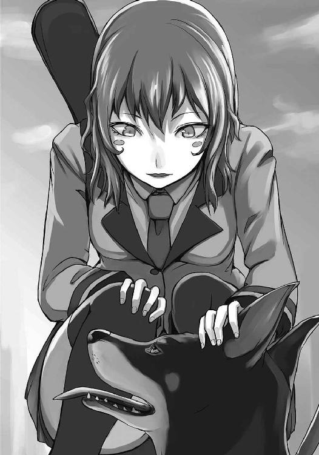
そんな彼女の姿を見ていたら、ふと、前に会った時のことを思い出した。
「あ、あの。この間は、どうも、ありがとう、ござい、ました」
本当なら、こんなにぜぃぜぃしていないときに言いたかった。
「この間？ ああ、あれね。大したことじゃないわよ」
椎奈は笑った後で、じろじろと結恵の構えを見回す。
「これは、どんな練習なの？」
「えっと......わかん、ない、です。突きの、練習、みたい、なん、ですけれど......」
息切れしながら必死に条件を説明すると、椎奈は意味ありげな笑みを浮かべた。
「なるほどね。巴さんらしいわ」
「えっと、どういうことですか？ あ、変わった練習方法のことですか？」
「それもあるけど......顧問は自分のスタイルのフェンシングしか教えられないってことよ」
よくわからない。答えになっているのかどうかすらも。
「でも、巴さんと結恵ちゃんじゃ体格が違いすぎる。『女王蜂』は受け継げそうにない......いったいどんなフェンサーにするつもりなのかな」
椎奈は考え込むようにぶつぶつと呟いている。それでも、口元の笑みは消えていなかった。
「あの、椎奈さん？」
「ん？ ああ、ごめんごめん」
椎奈の顔は、いつもの笑みに戻っていた。
「あ、そうだ。結恵ちゃん。その剣って結恵ちゃんの？ ちょっと見せてよ」
「いいですよ。私のじゃなくて、巴先生が余ってるパーツで作ってくれたんですけど」
結恵が剣を渡すと、椎奈は「使い込んでるなあ」と言いながら隅々までそれを眺める。
「わ！ ガードの裏、合格シールだらけ！ 地方大会と全国大会のやつが三年分......これは大学の大会かな？ なかなか見れないな、こんなガード」
「やっぱり、巴先生って凄いんだ......」
「いろんな意味でね」
椎奈は一通り剣を眺めた後で、「はい、ありがと」と結恵に返した。
「椎奈さんって、荻野高校なのに巴先生たちのこと詳しいんですね」
「まっ、それはね」
結恵の言葉に、椎奈は少しだけ目を細める。
「私と芳人は、小・中って同じクラブチームにいたのよ。巴さんもそこの出身で、しょっちゅう練習見に来てたのよね。私も芳人も、巴さんからフェンシングを教わったの。......思えば色々と無茶をさせられたわ。そのおかげで今があるんだけど......」
椎奈はそう言って苦笑いを浮かべた。
「そうだったんですね。じゃあ椎奈さんも、この練習をやったんですか？」
「やったことはないけど、巴さんの意図は大体想像がつくわ」
苦笑いが消え、椎奈の目つきが少し鋭くなる。
「この練習はね──」
椎奈が何か言いかけた瞬間、犬が走り出した。彼女の言葉は結恵自身の悲鳴で掻き消える。
「おーい、結恵ちゃーん！」
振り返ると、椎奈が元の場所で手を振っていた。彼女は口に両手を添えると、大きく叫ぶ。
「六月の大会！ 楽しみにしてるよー！」
「え......？」
その言葉に、一瞬、結恵は息をするのも忘れる。
彼女のような名門校のフェンサーが、自分との試合を楽しみにしてくれる──それだけで、妙な高揚感が湧いた。緊張、喜び、不安......どれも今の胸の高鳴りを表すには違うと思った。
身体が火照る。剣を握る手に汗をかいた。背中がむずむずして、肩に力が入る。
（なんだろう、この気持ち。......わかんない）
けれど、不快ではなかった。
「練習頑張ってねー！」
「は、はーい！ ありがとうございまーす！」
結恵も精一杯、左手を振り替えした。
椎奈がこちらに背を向けて歩き出す。結恵も手を振るのをやめ、前に向いた。
胸の高揚感は、まだ消えない。
結恵は口元に小さく笑みを浮かべ、犬を追い越す勢いで地面を蹴った。
「君とも今日でお別れだね」
今日で、一週間のバイトが終わった。最初は大型犬に振り回されてへとへとになり、もう走りたくないと思った。全力疾走の後で構えを取るのは辛くて、何度座って休もうかと思った。
けれど、やっているうちにコツを掴んできた。それは引っ張られ方だったり、息の整え方だったり......。体力はなかなかつかなくても、体の動かし方を知るだけで、ずいぶんと余裕が出来る。最後の二日間は、終わった後に犬とじゃれるくらいの力は残るようになった。
「なんだか、ちょっと寂しいね」
結恵はしゃがんでポンちゃんの首を撫でた。その瞳は、心なしか潤んでいるように見える。その目を見ていたら、何だかこっちまで涙が出そうになった。
思い返せば、いい犬だったと思う。むやみに吼えず、他の犬にちょっかいを出すこともない。奇妙な散歩をする結恵をからかう輩がいれば、唸り声を上げて威嚇してくれた。怖い顔をしているが、人懐っこく、甘えん坊で、毎日顔中をベタベタにされた。
明日からは、結恵の姿を探して家の塀に前足を掛けている姿も見れないのだ。
「よかったら、たまに遊びに来てあげてくださいね」
二階堂さんの言葉に、結恵は大きく頷く。声は、詰まって出てこなかった。
「さ、結恵。行くわよ」
巴に呼ばれ、結恵は助手席に乗り込む。窓を開けて、もう一度だけ手を振った。それに答えるように、犬は伏せをしたまま寂しそうな鳴き声を漏らす。
「結恵。大会が終わったら、あの犬にエサでも買っていってあげましょ」
「っ、っ、はい......」
結恵は滲む涙を拭って、小さく返事をした。
二十分ほど走り、二人は杜坂高校の体育館にたどり着く。ここに入るのも久しぶりだ。扉を開けると、模擬戦をやっていた芳人と琳太郎が手を止め、マスクを脱いで近づいてくる。
「結恵ちゃーん！ お疲れー！ どうだった？ キツかった？」
「お疲れ様です。えっと、最初は辛かったですけど、なんて言うか......楽しかったです」
「楽しいだけじゃ務まらねぇぞビギナー。......で？ 肝心の上達はしたか？」
「えっと......わかんないですけど、前より走れるようになったと思います」
「ほらほら！ おしゃべりは後にしなさい」
巴が手を打ち鳴らす。
「さて......と、まずは一週間お疲れ様」
巴が結恵の方に向き直る。
「あ、はい。巴先生も、毎日送り迎えしてくれてありがとうございます」
「どういたしまして。さてと、じゃあバイト代をあげるわ」
「え......？ あ、そっか。これってバイトだったんですもんね」
すっかり練習に夢中で、お給料のことを全く考えていなかった。
「さ、受け取りなさい」
そう言って巴は、白く細長いビニール袋を取り出した。
「これって......」
「開けてみて」
口を止めてあるテープを剥がし、中に手を入れる。硬く冷たい感触が指先に触れた。それを掴み、そっと引き抜く。
「あ......」
最初に見えたのは、黄色のベルギアングリップ。
次に鈍い色のガード。続いて、銀色に鋭く光を放つ刀身。
それは、新品の剣だった。
「結恵の初めての愛剣よ」
「私の......愛剣......」
「アルスターＢＦか。いい剣じゃねぇか」
芳人が結恵の手元を覗きこみながら呟く。
「まぁ、バイト代だけじゃちょっと足りなくて、私のパーツも足しちゃったけど」
「えっ！」
見ると、ガードの裏に隙間なく合格シールが貼ってあった。
「そ、そんな！ こんなに大事なもの貰えないですよ！」
「遠慮しない。ガードがなきゃ剣にならないんだから」
「そうだよ結恵ちゃん。貰っちゃえって。こんなガード使える高校生なんて、中々いないよ」
「でも......」
渋る結恵の頭に、巴が手を置く。
「じゃあ、こうしましょ。これからは結恵がそのガードのシールを増やしていくこと」
巴は微笑み、少しだけ首を傾ける。
「試合に出られないあたしの分までね。言ったでしょ？ 一緒に頑張りましょうって」
となれば、この剣は結恵と巴の思いが合わさった剣だ。今までロクに友達もいなかった自分が、誰かと一緒に頑張れる初めてのこと──そう思ったとたん、結恵の顔にどんどん笑みが広がっていった。頬に赤みが差す。結恵は何度も剣と巴の顔を見比べ、大きく頷いた。
「はっ、はいっ！ ありがとうございます！ 私、巴先生の分まで頑張ります」
巴は満面の笑みを浮かべ、大きく頷いた。
「よし！ じゃあ、突いてみなさい」
「え？ もうですか？ 私、ちゃんとした突き方まだわからないですけど......」
「もう大丈夫よ」
巴は結恵に防具を渡し、彼女自身も身につけた。
「さあ、思いっきり来なさい」
防具を身につけた結恵は、戸惑いながらも初めての相棒を持ち、構えを取った。
「結恵の剣先には、今もあの犬がいる」
「え？」
「そう思いなさい」
巴の剣先が自分を向くが、防具をつけているおかげで向き合える。逃げずにいられる。
（この距離じゃ、届かないかも）
結恵は一歩詰め寄った。あの歩き方で身につけた、腰をすえたまま鋭く踏み込める移動方法。
（この剣先には、ポンちゃんがいる）
この一週間の出来事が脳裏を巡る。
剣先の犬が電柱の匂いを嗅ぐ。結恵が名前を呼ぶと寄ってきて、甘えた声で鳴いた。ふと鼻を鳴らした犬は振り返り、次の電柱に向かって────
（走り出すッ！）
剣先が見えない何かに引っ張られる。結恵の手が加速した。引きずられないために右足を大きく踏み出す。犬の脚力についていけるよう、左足で地面も蹴る。
「やぁあっ！」
声は自然と出ていた。
先端が巴の胸にめり込む。刀身が大きくしなって弧を描いた。手に伝わる衝撃。風を切り裂いて進んだ感覚。冷える熱。静まる吐息。自分の掛け声が、耳の中で残響を奏でていた。
犬が止まる。
結恵は、元の構えに戻った。
「......フェンシングの突きは、腕力に頼らない」
巴が剣を下ろす。
「左足の蹴りこみと、右足の踏み込みで勢いをつけて突く。最も大事なのは、身体をスピードに乗せるため、腕を真っ直ぐ伸ばし、相手の身体に吸い込ませるようにすること。それこそ、何かに引っ張られるように突くのが理想的よ」
それは、まるで、犬の散歩のように。
「結恵。覚えておけ」
芳人が近づいてくる。
「今お前が使った技の名前は、クードロアだ」
「クードロア......」
初めて撃てた技の名前を呟く。強く剣を握ると、相手に当たった感覚が甦って来そうだった。
「基本中の基本だ。今のフォームを忘れるな。身体に覚えこませておけ」
芳人が厳しい口調で言う。だけど、口元は薄く笑っていた。
「いい？ 結恵。この技が出来るようになって、初めて試合が出来るの」
マスクを脱いだ巴が、そっと結恵の肩に触れる。
待ちわびたものをやっと手に入れたような、巴の笑顔。
「結恵はもう、フェンシングが出来るわ」
目の縁に、涙が滲んだ。
幼い頃から何をやっても上手くいかなかった自分。父に憧れたが、その人が亡くなり、悲しみと先端恐怖症に悩まされた。巴と出会い、誘われても拒んだあの時。自分には出来ないと、ずっと、ずっと思っていた。
でも、今はこんなにも大きな達成感に身を包まれている。
──今、条件は整った。
奇妙な移動方法。
自分を守ってくれる強い防具。
引っ張られるような突き。
巴が作ってくれた新しい剣。
「やったな結恵ちゃん！」
「丁度いい。模擬戦の相手が少なくて困ってたところだ」
「丁度いい。模擬戦の相手が増えて嬉しいところだ......だろ？」
「あぁ？ なんの真似だ琳太郎？」
「素直に言えよってことだよ」
そして、応援してくれる先輩。
「さあ結恵！ これからもガンガン行くわよ！」
何より、いつもいつの間にか自分を強くしてくれる先生。
「......巴先生。芳人先輩。琳太郎先輩」
結恵はマスクを外して涙を拭い、三人の顔を見つめ、笑顔を浮かべた。
「本当に、ありがとうございます！ 私、もっともっと頑張ります！」
そして勢いよく頭を下げた。
『第三章 女王蜂の飛翔』
「芳人先輩。それ、なんですか？」
そう聞いた瞬間、芳人は驚いた表情で振り返った。眉を顰め、口を開け、絶句している。しばらくその表情で固まった後、彼は「しまった」というように額を強く抑えた。
「そうか......。あのバカ、ほとんどまともにフェンシング教えてなかったんだった」
芳人がため息をつく。彼は今、体育館に大きなデジタル時計のような機械を置き、そこにいろいろな配線を挿しているところだった。練習中に何しているのかと思って尋ねたのだが、どうやらフェンシングに関係ある物らしい。
「お前、フェンシングはどうやって試合するか知っているか？」
「え？ えっと、剣で突いて、突いて......突くんですよね？」
「お前は端から見ていてどっちが突いたか分かるのか？」
「あ......そっか」
思えば、あんなに細いものが高速で動いているんだ。ほとんど見えないだろう。
「いいか？ 剣のガードの裏にソケットがあるだろ？」
芳人が自分の剣を裏返して見せると、そこにコンセントを差し込むような穴が二つあった。
「この穴とこの機械──審判機って言うんだが、その二つをコードで繋いで電気を流すんだよ」
「へぇ、なんだか電気で試合するスポーツって不思議ですね」
「呑気だなテメェは。......まぁいい。それからここ、剣の先。ボタンみたいになっているだろ」
芳人が剣先を押すと、カチッという音がした。
「突いてここが押されると、電気が流れて審判機のランプが点滅する。それを見て審判が点数を言うんだよ」
「え？ じゃあ床とか突いてズルする人がいるんじゃないんですか？」
チョップされた。
「ボケ。公式戦の床には絶縁体のシートを敷くんだよ。仮に、万が一普通の床をついても点数にはならねぇ」
「ううっ、どうしてですか？」
「試合の時は金属を編みこんだベストを着るんだ。そこを突くと色つきのランプがついて点数になる。逆にそれ以外のところを突いたら白いランプがついて無効点になるんだよ」
「あっ、そうだったんですね。私、あのベストって防具だと思ってました」
「一ヶ月近くフェンシング部にいて、知らないほうがおかしいんだけどな」
芳人は疲れたように、息を吐いた。
「あ、でも芳人先輩。その機械と剣を繋ぐコードって、試合中邪魔にならないんですか？」
「その点は心配ないぜ、結恵ちゃん！」
いつの間にか近づいてきていた琳太郎が声を張り上げる。
「これを見るんだ！」
琳太郎がくるりと後ろを振り返ると、ユニフォームからコードがはみ出していた。それがピンと張られたワイヤーと連結している。ワイヤーの出所は審判機と繋がった円盤だ。
「いいかい？ 試合するときは、まずは審判機とこの円盤を繋ぐんだよ。そしたら次に円盤から出るワイヤーを剣に繋げる。まぁ、この円盤のワイヤーは、剣と審判機を繋ぐ延長コードみたいなもんだよ。そんでもって、円盤からでるワイヤーは自動巻き取り式だから、ほら！」
琳太郎が前に歩くと、ワイヤーが伸びる。逆に下がると、しゅるしゅるとワイヤーが巻き取られた。これなら引っかかったりしないだろう。
「俺は去年、このワイヤーを使った一発芸『水上スキー』で試合会場を爆笑の渦に包み込んだ」
「す、凄い......ですね？」
「凄くねぇよ。それ以来、練習試合の申し込みが極端に減ったんだからな」
「んだよー。じゃあ見てろ、見れば凄さが分かるから！」
そう言うと琳太郎はワイヤーを外して両手で持った。そして体重を後ろに傾けたままの姿勢で、円盤の方に引っ張られていく。足は全く動いていないのに......。
「わわっ！ 凄い琳太郎先輩！ 本当に水上スキーみたいです！ どうやってるんですか！」
「ひ・み・つ！ 凄いだろ？ これ習得するのに五ヶ月も練習して──」
「フェンシングの練習しろっ！」
得意げな琳太郎の尻に、芳人の渾身の蹴りが突き刺さる。
そんなことをやりながら騒いでいると、不意に体育館のドアが開いた。振り向くと、そこには腕を組み、こめかみに青筋を浮かべた巴が立っている。
「あんたらぁ......」
巴が床を踏み鳴らしながら近づいてきた。
「もうすぐ大会だっていうのに何サボってんのっ！」
「別にサボって............」
芳人は周囲を見回し、言葉を止めた。確かに、この騒ぎは端から見ればサボりだ。
「気合いが足りないわっ！ 全員走ってきなさーいっ！」
巴から蹴りだされるように、三人は外に飛び出した。
「今日は部内対抗戦をやるわよっ！ この結果で団体戦のメンバーを決めるからね！」
懲罰ランニングから帰ってきたところで、巴がそんなことを言い出した。
三人はしばらく沈黙したが、やがて、芳人が呆れたようにため息をつく。
「三人しかいないんだから意味ねーだろ」
「うるさい！ 一回こういうこと言ってみたかったのよ！ いいから準備しなさい！」
巴に急かされ、三人は模擬戦の準備を始める。結恵は巴に教えてもらいながら、試合用の格好に着替えた。白いユニフォームの上に金属を編みこんだジャケットを身につけ、マスクを被る。体育館にある姿見の前に立ってみると、とりあえず様にはなっていた。
「試合順番はさっき作ってきたから」
「そんなもんのために遅れたのかよ」
芳人の呟きを無視し、巴は壁に試合表をテープで張り付ける。
『１．有星結恵──蜂谷芳人 ２．空井琳太郎──有星結恵 ３．蜂谷芳人──空井琳太郎』
部員数が少ないのでなんとも物悲しい。巴はその寂しさを埋めるために過剰な色彩で空白を彩っているようだが、相変わらず色使いのセンスが壊滅的だ。
しかし製作者の巴はそんなこと微塵も思っていないようで、意気揚々と手を打ち鳴らした。
「じゃあ始めるわよ！ 第一試合 有星選手！ 蜂谷選手！」
「は、はい！」
「はいはい」
二人は向き合うと、芳人が剣を顔の前で立てた。ただ突っ立っていた結恵は「お前もやれ」と言われ、慌てて彼と同じポーズを取る。
「結恵。細かい流れはやりながら覚えればいいわ。用語は全部フランス語だけど、それも追々教えてあげる。だから、今は一つだけ覚えてて。『三分以内に五回突いた方が勝ち』よ」
結恵が「わかりました」と頷くと、巴は「じゃ、頑張って」と笑う。
「それじゃあ......気をつけ、礼！」
「お願いします、っと」
「お、お願いします」
マスクを被り、互いに構えを取る。
「結恵。手加減はしてやるけど、簡単には突かせてやらねぇからな」
「は、はい。頑張ります」
思えば、コレが人生初のフェンシングだ。無意識に力が入り、緊張で身体が固まる。しかも相手は現役全国プレイヤー。勝てるとは思っていないけれど、一点くらいは取ってみたい。
「試合、始め！」
芳人がゆっくり一歩踏み出した。あわせて結恵はゆっくり下がる。
そのまま、五歩ほど下がった時だった。
「え？」
芳人の身体が加速した。──そう思った次の瞬間には、胸に鈍い感覚が走る。その衝撃で結恵は尻餅をつき、惚けた顔で芳人の顔を見上げた。
「１─０」
突かれていた。
（ぜんぜん、見えなかった。すごく速い......。飛んでいるみたい。これじゃ、まるで......）
スズメバチ。
「いつまでもコケてんな。次いくぞ」
結恵は立ち上がり、気を取り直して再び構えを取る。
だが、力の差は歴然だった。
いくら距離をとっても、芳人は簡単にその差を詰めて突いてくる。防御が間に合わない。相手の剣に触れることすら出来ず、結恵はただ動くサンドバックのように突かれた。
二点、三点と得点を挙げられ、ついに四点目も突かれる。始まってから一分も経っていないのに、もうチェックメイトだ。
「どうした？ さっきからほとんど動いてないぞ。寝てんのか？」
見かねた芳人が挑発してくるが、結恵は返事すら返せない。確かに攻められるばかりでほとんど動いていないが、息はとっくに上がっていた。
（こうなったら......一か八かで攻撃してみるしかない）
背水の陣。後がなくなった結恵は、初めて自分から距離を詰めた。目の前の芳人は少し驚いたようだが、すぐに冷静さを取り戻して距離を測っていく。二人の距離は近づかず離れず。
（──今だ！）
意を決して結恵が踏み込む。──クードロア。自分ができる唯一の技。だが、芳人は大きく一歩後退してその攻撃を避ける。剣は弾かれてすらいない。
「トロイんだよ」
芳人の声が聞こえた。結恵は攻撃をした格好のままだ。そこに芳人の剣が迫ってくる。
（──あっ！）
剣先が迫ってくる。クードロアを放った結恵の体勢は低い。だから、ちょうど剣の先端が顔に向かってくるように見えた。
「ひっ！」
メガネと防具をつけているから大丈夫だと思った。けれど、目の前から迫ってくる高速の突きを見て恐怖が身体を覆う。慣れたつもりでいても、やはり尖ったものは怖い。
「いやあっ！」
その瞬間、結恵は芳人の剣を弾いて大きく飛びのいていた。
仕掛けた芳人は驚きに固まっている。
（ふ、防げた......。芳人先輩の剣を防げた......！）
恐怖を押しのけるように高揚感が湧いてくる。だが、いつまでもその感覚に酔っていられない。再び芳人が切迫してきた。
繰り出される突き。
「ひぃっ！」
初心者ではまず反応できないようなそれを、結恵は反射的に切り捨てる。
目が慣れてきた......いや、恐怖で剣先が嫌でも目に入るようになった。
剣先が見れるなら、何年にもわたって鍛えられた「尖ったモノから逃げる」能力が発揮される。剣を避け、安全地帯まで飛びのくことが出来る。
先端恐怖症だからフェンシングはできないと思っていた。
しかし、先端恐怖症だからこの能力が活きてくる。
（怖い！ 怖い怖い怖い！）
剣が風を切って向かってきた。結恵は逃れたい一心で、その先端を剣の腹でずらす。
「オラァッ！」
芳人が結恵の剣を叩きつけ、がら空きになった胸を狙ってくる。しかし、結恵は「ひぃぃい！」と悲鳴を上げながら手首を返し、彼の剣を上に弾き飛ばした。
「次ぃっ！」
低い体勢から腹を狙うローアタック。結恵は身体をくの字に折り曲げ、「ひゃぁああ！」と叫びながら後方に飛びのく。芳人の先端は届かない。
「このっ......！」
すぐに芳人は体制を立て直し、剣を構える。だが、結恵は泣いているような声を上げながらその剣を押さえつけると、先端を彼の身体に向けた、
「うぅっ！ くっ、クードロア！」
剣の切っ先が引っ張られるような錯覚と共に、結恵は左足で地面を蹴る。マスク越しに、芳人の顔が引きつるのが分かった。彼は右足の力だけで後方に飛ぶ。結恵の手に伝わる、先端が身体に触れた感覚。しかし有効突きのアラームは鳴らない。──わずかに遠かった。
「......やるじゃねぇか。あの体勢から返し突きを撃つなんてな」
五メートルほど距離を取ったところで、芳人は攻撃をやめて呟いた。
「......さっき手加減してやるって言ったが、気が変わった」
芳人がそう言ってゆっくりと距離をつめる。結恵は過剰に反応して距離を開けた。獲物を狙うように揺れる芳人の剣先を、結恵の目が一瞬も遅れずに追う。
（も、もっと凄いのが来るの？ 今でもあんなに早いのに......防ぐのがやっとなのに......）
先端恐怖症とは、別の怖さが湧き出てきた。次の攻撃は、とてつもないような気がする。
「防げたら、褒めてやる」
次の瞬間、芳人の身体がぶれる。
そして──。
「ぁう......っ！」
突かれた。あまりの突きに思わず息が漏れる。防ごうと思って振るった剣は、虚しく空を切った。いつの間にか、芳人は結恵の背後にいる。
「それまで！」
巴の声が響く。結果は５─０。やはり、まるで相手にならなかった。
「い、今の攻撃、なんだったんですか？ 凄く速くて......いつの間にか私の後ろにいて......」
マスクを脱ぎ、ズレたメガネを直しながら結恵は尋ねた。
「『フレッシュ』だ」
芳人はうっすらと浮かんだ汗を拭いつつ答える。
「剣を伸ばした状態のまま、相手に突っ込んで走り抜ける技だ。素人が真似するんじゃねーぞ？ タイミング間違えると恰好の的になるからな」
「私は、あんなに速く動けませんよ」
「だろうな。......でもまあ」
「なんですか？」
「......よくやったほうだ」
すれ違いざま、芳人に頭をポンポンと叩かれる。
結恵はそこを押えながら、惚けた表情で彼の背中を目で追った。
芳人は体育館の床に腰を下ろすと、スポーツドリンクのボトルを傾けた。目の前では第二試合の結恵と琳太郎が向き合っている。
「結恵ちゃんとは初試合だね」
「そうですね。ちょっと緊張してますけど、よろしくお願いします」
「そうだ！ 結恵ちゃん、知ってる？ フェンシングの『よろしくお願いします』のポーズは、騎士が恋人に投げキッスするポーズが元なんだよ」
「へぇ、そうなんですか。知らなかったです。なんだかロマンチックですね」
「だろ？ ......というわけで結恵ちゃん！ 俺に投げキッスをよろしく！」
「ええっ！ い、いえ、あの、私、そういうことは、ちょ、ちょっと......」
「試合前の挨拶なんだから、ちゃんとしないとダメだぞ結恵ちゃん」
仕方なく、結恵が顔を真っ赤にして投げキッスを送る。
そんな感じで二人の試合が始まった。
（ったく、あのバカは。......次にボコボコにしてやろう）
芳人は呆れながらもそう決めた。
「......ねぇ芳人、どうだった？」
ふいに巴が審判をしながら聞いてきた。芳人は少し眉を顰めた後、正直に答える。
「......後半は完全に防がれた。姉貴の見込み通り、全国レベルの防御センスだ」
思わず本気の一撃を使ってしまうほどに。
でも──と、芳人は続ける。
「攻撃はまるでダメだ。遅いし、リーチもない。攻撃に積極的じゃない。......まあ、一発惜しいのがあったけど、このままだと『ダメ受身型フェンサー』の典型になるだろうよ」
「やっぱりかぁ」
巴も同じことを考えていたのか、彼女は深々とため息をつく。
「どうするんだ？ 試合まで時間ねぇぞ。あのままじゃあ勝てないだろ」
「うーん。体力づくりと基礎練習に時間を掛けすぎたか」
結恵の性格を考えれば、受身型の戦い方をするのは必然かもしれないが。
「ここは一つ、思い切って必殺技でも教えようかしら」
巴の口元が不敵な笑みを象った。それを見た芳人の瞳が鋭くなる。
「『アドヴァンゲア』を使った攻撃方法を教えるわ」
「......だと思った」
芳人は疲れたようにため息をつく。
「驚かないの？」
「まぁな。なんとなく、予想はしてたよ」
姉の練習方法の意図。結恵の防御センス。
そこから生み出されるフェンサー。
「お前の『アドヴァンゲア』は文字通り必殺技だ。完璧に出来るフェンサーはなかなかいない。でも、結恵の防御センスがあれば、可能だろうよ」
姉にアレを出されたら、自分も敵う自信は少ない。
「結恵に出した課題は、一応、理に適っちゃいる。それでも下半身に重点を置きすぎだ」
素直に結恵の特性を活かして、受身型のフェンサーとして育てるなら、そこまで体力と下肢筋力の強化を重視しなくても良かったはず。この鍛え方では、まるで......。
「姉貴は、自分のレプリカフェンサーを作るつもりなんだろ？」
「半分当たりで、半分違うわ」
巴は不敵に微笑む。
「あの子はあたしにはなれない。あたしは、別の可能性を結恵に感じたのよ」
「別の可能性？」
その時、審判機がブザーを鳴らした。同時に琳太郎が手を振ってくる。
「巴ちゃーん！ どうだった今の？ ばっちりっしょ？」
「んー......うん。うんうん。さいこーよ」
「だろ？ よっしゃ！ もう一本！」
巴に言われ、琳太郎は嬉々として構えを取った。
芳人はため息をつく。
「テメェ、今見てなかっただろうが」
土曜日。杜坂高校のフェンシング部は、他の部活と同じく九時から練習が始まる。今まで他の部員は休日練習をしていたが、新米の結恵は参加させてもらえなかった。今日が、初めての休日練習となる。中学時代に帰宅部だった結恵は、休日に学校に行くということがとてつもなく特別なことに思えた。
（休みの日なのに制服で歩いてたら目立たないかな......？）
そんなことを考えていたが、実際は全く目立たなかった。当然のことだが、結恵以外にも土曜日に部活に行く人間は大勢いる。
結局、結恵の心にあった特別な気分は、学校に着くころには平日に登校するのとなんら変わりのないものになっていた。
「おっはよー結恵ちゃん！ ──って何だその大荷物！」
第二体育館に着くなり、琳太郎が大声を上げる。
別に、結恵が持ってきたのは普通の旅行用バックだ。
「なに入ってんの？」
「えっと......着替えとか、お弁当とか、歯ブラシとかです。......あっ、巴先生が練習終わったらシャワールーム使っていいって言ってましたから、お風呂セットも持ってきました」
結恵は嬉々として自分の旅行用バッグを見せる。だが、ふと琳太郎の荷物を見てみると、普通のショルダーバッグ一つだけだった。
「今日はここにお泊まりかい？」
「あ、私......ちょっと大げさでしたね......何だか楽しみで、旅行みたいな準備しちゃいました」
初めて体育系の部活に入った人間は、持ってくる物一つにしても加減を知らない。
恥ずかしくなって俯くと、琳太郎が笑う。
「まあ備えあればなんちゃらっていうしな。でも次からは俺くらい身軽でもいいんじゃない？」
「そ、そうですね。持ってくるのも大変ですし」
「だね。それじゃ、さっそく準備しようか......って、あれ？ シューズどこ行ったっけ？」
琳太郎が自分のバッグを漁るが、どう見たってシューズが入っているような膨らみはない。
「やば、忘れた......」
身軽なのも考え物である。結局琳太郎は、道具置き場の片隅にあったぼろぼろのシューズを持ってきた。
程なくして練習が始まる。準備運動、ランニング、フットワーク......休日と言っても、特にメニューに変わりはない。
ここから先は、芳人と琳太郎がペアになって「レッスン」という突き方の練習に入る。片方が受け役となり、もう片方が様々な技や防御、カウンターの形を練習するのだ。
あまった結恵は、巴に呼ばれる。
「結恵。昨日対抗戦をやってみてどうだった？」
「えっと、琳太郎先輩から一点だけ取れました」
だがそれは、結恵に自信を持たせるため、彼がワザと突かせてくれたのだ。それくらいは分かっている。
「うん。でも五点取らなきゃ勝ちにはならないわよ。今日は攻撃の練習をしましょう」
「はい！ お願いします」
今まで特別メニューばっかりだったから、なんだか普通の練習は新鮮だ。やっぱり、体育館で皆と練習できるほうが嬉しい。結恵は少し浮かれながら、防具と剣を身につけた。
「技は色々あるけれど、さすがに今日だけじゃ教えきれない。だから一つだけ、必殺技を教えるわ。コレを大会までにマスターしなさい」
いつになく真剣な巴の表情に、結恵も浮かれていた気持ちを少し抑える。
「その名前は『アドヴァンゲア』よ。とりあえず、やってみせるわね」
そう言うと巴は構えを取った。それから腕を伸ばし、左足で床を蹴って、大きく右足で踏み込む。それから左足を前に戻して、構えに戻った。
「こんな感じ。これが『アドヴァンゲア』よ」
「え？ 今のって、クードロアじゃないんですか？」
そう尋ねると、巴は首を振った。
「クードロアは突いた後に右足を戻して元の位置に戻る。『アドヴァンゲア』は突いた後に左足を前に進めて構えを取るの」
「そうなんですね。......あ、でも、それじゃあ前に進むだけなんじゃないんですか？」
「それでいいのよ。『アドヴァンゲア』の特徴は、そこから更に連続で突きにいけるところにあるんだから。コレを使えば結恵のリーチの短さも補えるわ」
必殺技と言うくらいだから、芳人の『フレッシュ』のように派手なものを想像していた結恵は、何だか肩透かしを食らった気分になる。
「ま、一回受けてみなさい。マスク被って、構え」
結恵は言われたとおりにマスクを被って構えを取る。
「結恵。全力で防御しなさい」
「え？ そんな......私、自信ないんですけど......」
「これでも？」
そう言って巴は自分の剣を見せてきた。
「わ！ なんですかその剣。すごく短いですね」
「これはあたしが作ったハンデ用の剣。長さは通常の半分くらい。どう？ 相手の二倍は動かなくちゃ突けない代物よ。これなら防げそうじゃない？」
「それなら......」
「防げそうでしょ？ じゃあ始めるわよ」
そう言って、巴が構えを低くした。そのとたん、雰囲気が変わる。今まで優しく教えてくれていた人じゃないみたいだ。殺気、とでも言うのだろうか。首の後ろがチリチリする。
巴が一歩進む。結恵が同じく下がる。
次の瞬間、巴がクードロアを放った。
剣先が迫ってくる。しかし遠い。剣が短すぎる。これなら、簡単に防御できる。
──が。
（いつの間に！）
結恵が防いだ瞬間、巴が目の前で攻撃モーションに移っていた。すぐに突きがやってくる。何とか受け止められたが、今度はギリギリだ。
（どうして？ あんなに短い剣なのに！ もっと......もっと離れないと刺される！）
下がる結恵。しかし防御をすると、いつの間にか巴が目の前に迫っている。彼女が一突きするたび、速度が増す。短いと思っていた剣先が、段々自分に近づいているのが分かった。
そして五突き目。
「あぅっ」
突かれた。しかし──
「止まるな結恵！」
巴に言われ、再び下がる結恵。だが、完全にスピードに乗った巴についていけない。剣先が見えていても、どこを突きに来るかわかっても、防ごうとした瞬間に剣を弾かれる。
一発、二発、三発。突きが次々に決まる。もはや結恵は下がるだけの的になっていた。
「あっ」
背中が壁にぶつかる。目の前の巴が剣を伸ばす。防ごうとしたが、剣を弾かれすぎて手が痺れてしまい、上がらなかった。
最後に、トンっと胸を突かれる。
「どうだった？」
巴がマスクを脱いで聞いてくる。結恵は、背中を壁に預けたまま、ずるずると座り込んだ。
「ま、守り、切れなかったです」
胸が苦しい。体力まで根こそぎ持っていかれるような攻撃だった。
「あ、あんなに剣が短いのに、ぜんぜん逃げられない。ぼ、防御しようとしても、その前に弾かれちゃいました......。ま、まるで、防御を無理やりこじ開けられているみたい......。凄かった、です。あんなの、防げない......」
巴は満足したように笑みを浮かべる。
「結恵。座ったままでいいから聞きなさい」
巴に言われ、結恵はマスクを脱いで彼女の顔を見上げた。
「今の技は、『アドヴァンゲア』を使って連続で突きを放つの。本当のこと言うと、剣の短さなんてこの技の前じゃハンデにならないわ。結恵の言うとおり、相手の防御をこじ開けて懐に飛び込むから、リーチの優劣も意味なくなる。強力だけど、ハッキリ言って相当難しいわ」
「わ、私に出来るんでしょうか......？」
「大丈夫。あたしの目に狂いはないわ。結恵の防御センスなら、コレを使えるはず」
巴の手が、結恵の頭をくしゃくしゃと撫でた。
彼女がそう言うなら、不思議とできるような気がした。結恵は巴を見上げながら強く頷く。
「本来、『アドヴァンゲア』はフットワークの一種なの」
「え？ そうなんですか？ じゃあ......」
「うん。今の技に正式な名前はついていない。だから、黄金時代のメンバーがこう呼んだわ」
巴が不敵に微笑んだ。
「『蜂谷アドヴァンゲア』」
決して止まることのない、女王蜂の飛翔。
「この技を、結恵にあげる」
その一言で疲れが一気に抜けた。荒かった呼吸も止まる。
「わ、私が......巴先生の技を......」
元全国覇者の、自分が知っている一番強い女性の技を教えて貰える──そう思っただけで、全身が慄いた。ちょうどそれは、椎奈に「戦うのを楽しみだ」と言ってもらえた時の感情に似ている。
「あっ......ありがとうございます！ 私、頑張って覚えます！ 絶対覚えます！」
「いい返事ね」
巴は腕を組んで大きく頷いた。
「さぁ！ 立ちなさい結恵！ 張り切っていくわよ！」
結恵は立ち上がり、彼女に負けないくらい大きな声で返事をした。
練習後、結恵は巴に連れられて校庭の隅にある合宿所と呼ばれる建物に来ていた。名前のとおり部活動の合宿に使う建物で、シャワールームや厨房、就寝具までそろっている。中学にはなかった建物だ。
「わぁ！ 凄い。高校のシャワールームって大きいんですね」
「まーね。ウチは県立じゃなかなかの規模よ。じゃ、さっさとシャワー浴びて帰りましょ」
そう言って巴はＴシャツに手を掛ける。
「えっ？ あ、あの......巴先生も入るんですか？」
「ん？ 当たり前でしょ」
言うなり、巴は躊躇いなくＴシャツを脱いだ。結恵は思わず目を逸らす。同性とはいえ、一人っ子で誰かとお風呂に入る機会がなかった結恵は、人前で裸になるのは恥ずかしい。
だが、そんな結恵の気持ちなど知らず、巴は素早く服を脱ぐとシャワールームに入っていった。結恵も遅れて服を脱ぎ、きっちりとタオルを巻いて巴の後に続く。
脱衣所からシャワールームに入ると、仕切り版で区切られた十台ほどのシャワーが迎えてくれた。このシャワールームは少し高くなっている場所にあるので、窓からの眺めもいい。
ちょっと躊躇いながらも巴の隣のスペースに入ると、彼女が声をかけてきた。
「どうだった？ 今日の練習は」
「あ、はい。やっぱり『アドヴァンゲア』って難しいですね。身体が思うように動かなくて......なかなか巴先生みたいに連続で突けないです。............あ、痣になってる」
ふと自分の胸を見ると、巴の『アドヴァンゲア』の痕が点々と残っていた。防具はつけていたのに......どれだけあの技が強力だったかを物語っている。
「あら、ごめんね。どれどれ？」
「ひゃぁああっ！」
突然巴が隣のスペースから顔を出してきたので、結恵は悲鳴を上げて胸元を隠す。巴は「そんな恥ずかしがんなくてもいいのに」と苦笑した後、半眼になって結恵の裸を凝視してきた。
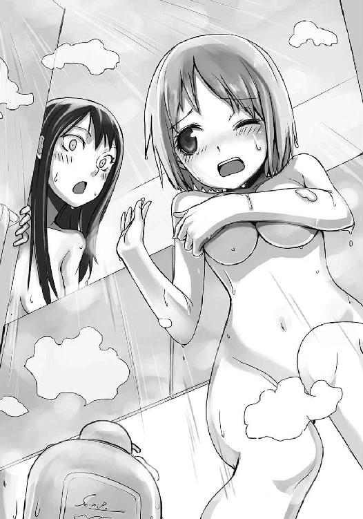
「結恵......ほんっとデカいわね。身長にいく栄養、全部胸に取られてるんじゃないの？」
「あ、あんまり見ないで下さぃ......」
シャワーのお湯がぬるく感じるくらい体が火照る。結恵は涙目になって呻き声を漏らすことしかできない。
ふとその時、窓の外からこそこそと声が聞こえてきた。
「押さえててくれよ......絶対押さえててくれよ芳人」
間違いない。琳太郎の声だ。
ほどなくして、窓枠に二本の手がかかった。
「よし！ これでオッケー──え？ あれ？ ちょ、芳人!? 脚立動かすなって！ っていうか脚立とるなって！ おーい！ おーい芳人くーん！ どこいくのー！ どこ持ってっちゃうのー！」
「......いい度胸ね、琳太郎」
巴は嗜虐的な笑みを浮かべると、窓枠に近づいていった。そして、勢いよく窓を全開にする。
「きゃあ！ と、巴先生！ ななな、何するんですか？」
結恵は悲鳴を上げて仕切り版の裏に隠れると、そっと頭だけ出して巴の方を見る。
「あら偶然ね、琳太郎。そんなところにぶら下がって、何してるの？」
「や、やっほー巴ちゃん......。ちょ、ちょっと筋トレに懸垂を......」
引きつった琳太郎の声。
「ふーん？ まぁせっかくだし、琳太郎も身体洗ってく？」
「ままま、マジでっ!? もちろん！ ぜひ一緒に！」
「はい。じゃあボディソープ」
巴が、窓枠にかかった手にボディソープをたっぷりかける。
「と、巴ちゃん！ ちょ！ 滑る！ 落ちる落ちる！ ヤバイって！ ごめんなさいっ！ 助けてください！」
琳太郎の懇願を無視し、巴は窓を閉めた。しばらく窓の外で「うぉおおおおっ！」という叫び声が聞こえてきたが、やがて「あ」という呟きとともに窓枠の手が消える。同時に何かが地面に落ちる重たい音が響いてきた。
「り、琳太郎せんぱーい！ だだだ大丈夫ですかー！」
結恵は叫ぶものの、恥ずかしくて仕切り版の裏から出て行けない。
「やっぱり、汚れ物を洗い落とすと、さっぱりするわねー」
慌てふためく結恵とは対照的に、巴は鼻歌交じりに身体を洗い始めた。
シャワーを浴び終えて体育館に戻ってくると、時計の針は一時を過ぎていた。そして、その時計の下では琳太郎が尻を抑えてうずくまっている。
「いってぇ......超いってぇ......」
「だ、大丈夫なんですか琳太郎先輩？ 校庭にお尻の跡がついてましたけど......」
「ほっときなさい結恵。帰るわよ」
そう言うと巴は結恵の手をとって帰ろうとする............が。
「ちょっと待てよ」
芳人がそれを引きとめた。何故か、彼はまだユニフォーム姿のままだ。
「お前、今日はほとんど模擬戦やってねぇだろ。ちょっと付き合えよ」
だが、巴は露骨に嫌そうな顔をする。
「えぇー、嫌よ。せっかくシャワー浴びたんだから」
取り付く島もない。巴はバッグを掛け直すと、結恵の肩に手をかけ、とっとと体育館を出て行こうとする。だが......。
「逃げるのかよ、女王蜂？」
巴の足がピタリと止まった。力がこもり、肩を掴まれていた結恵が悲鳴を上げる。
「......もういっぺん言ってみなさいよ」
振り返る巴の顔は恐ろしい。こめかみに青筋が浮き出ているのがはっきり見える。
「いいから相手してけよ女王蜂」
芳人は人差し指で巴をこまねきながら挑発する。
「ふうん？」
何かが切れた音がした。巴はショルダーバックを落とすと、着ていた上着を脱ぎ捨てる。
「いいわ。蜂の巣にしてやろうじゃない」
三角形の剣ケースから愛剣を取り出して、巴は芳人の下まで歩み寄った。二人が並ぶと少し巴の方が低いが、滲み出る覇気は彼女の方が数段上だ。下から見上げるように睨みつけるその姿は、見ているだけでも怯んでしまう。
しかし、本気の二人の試合は見てみたかった。
「あの......それなら私もちょっと見学していてもいいですか？」
「いやいや、結恵ちゃんは俺と帰ろうぜ」
いつの間に復活したのか、琳太郎が結恵の肩を掴んで引きとめる。
「休息も練習のうちだよ、結恵ちゃん。ほらほら行くよ」
「え？ え？ 琳太郎先輩？」
結恵はワケがわからないまま、琳太郎に外に連れ出される。体育館の中からは、二匹の蜂がスポーツをやっているとは思えない罵倒を叫びあっていた。
後ろ髪が引かれるものの、諦めて結恵は琳太郎と一緒に帰り道につく。
「やっぱり女の子と帰るほうが楽しいよなぁ」
琳太郎はいつものようにへらへらしているが、いつもとは様子が違う。
なんだか、体育館にいさせたくないみたいだ。
「あの、琳太郎先輩。どうして二人の模擬戦を見ちゃいけないんですか？」
堪らず、結恵はそう尋ねる。琳太郎の言うとおり休息も練習の内と言うなら、見ているだけなら問題ないように思えた。
「そりゃ、二人の邪魔したくないからだよ」
急に、琳太郎が真面目な顔つきになる。
「芳人も巴ちゃんも、いつも俺達の練習に付きっ切りだろ？ だから、芳人の練習がまるで捗らないんだよ。芳人の相手になるのは巴ちゃんだけだしね。二人っきりの練習時間くらい、作ってあげたいでしょ？」
あ、そうか......と結恵は納得する。いくら芳人が強いとは言え、自分の練習を疎かにするわけにはいかない。......だとしても。
「練習が終わってからも練習するなんて......芳人先輩、熱心ですね」
「芳人は上昇志向が強い上に負けず嫌いだからねぇ」
琳太郎はそう言った後、スラックスのポケットに両手を突っ込んでため息をついた。
「でもさ。あいつ不器用だから、回り道したり、他人に頼ったり出来なくて、結局試合じゃ実力を発揮できないことが多いんだよね」
「どういうことですか？」
そう尋ねると、琳太郎は少し上を見上げて「結恵ちゃんには話しておこうか」と呟いた。
「芳人は、スポーツ推薦で荻野高校に行くはずだったんだよ」
荻野高校──椎奈がいるところだ。
「でもその推薦を蹴って、廃部になっていたウチに来た。何でだと思う？」
「えっと......わかりません」
「巴ちゃんがいたからさ。巴ちゃんは顧問として杜坂高校フェンシング部を全国に行かせようとしたけれど、廃部になってたからねー。ゼロから素人集めて全国目指すなんて大変なことだよ。もたもたしてたら異動になるかもしれないし」
巴ちゃんも公務員だから──と琳太郎は頭を掻く。
「だから芳人は荻野じゃなく杜坂に来たんだ。本人は色々理由つけるけど、本当は巴ちゃんの夢を手伝ってあげようとしたんだね。自分一人ででも全国制覇しようとした。とんだ働き蜂だよ、あいつは」
そういう琳太郎の口調はバカにしているようではなく、楽しそうだった。
「でも、どうして芳人先輩はそこまで巴先生のためにするんでしょう？ お姉さんだからですか？ 私一人っ子だから、あんまりそういうのわからないんですけど......」
「あー......それはね、なんて言うか......あんまりいい話じゃないんだけど......」
琳太郎が少しだけ目を伏せる。いつも笑っているのに、珍しい表情だ。彼がこんな顔をすると、何だか不安になってしまう。
「巴ちゃんってさ、本当はオリンピックに出るはずだったんだ。金メダル候補だったんだよ」
「えっ！ 凄い！ 巴先生、日本だけじゃなくて世界でも一番くらいなんですか！」
「かなりの有力選手だったみたい......でも、予選に出なかったんだ」
「えっ......」
結恵の表情が凍る。信じられなかった。どうして、そんなに強い選手が......
「あ。もちろん、臆病風に吹かれたわけじゃないよ」
結恵の表情に気づいたのか、琳太郎は慌てて訂正する。それを聞いて少し安心できた。
「オリンピック出場を懸けた予選の時、芳人が試合を見に来るはずだったんだ。でもさ、途中で芳人の乗ったバスが事故で横転しちゃって......」
心臓が、嫌な早まり方をしている。話の続きを聞くのが怖いのに、聞きたい......そんな不安を煽られるような感じがする。
「連絡を受けた巴ちゃんは、すぐに予選会場を飛び出したんだ。幸い、芳人は骨折くらいで済んだんだけど......。でも、その所為で巴ちゃんはオリンピックに出られなくなったし、団体戦もエースを欠いたチームじゃ勝ち残れなかった。仕方ない理由があったとはいえ、巴ちゃんはチームの四年間を台無しにしたんだよ。もう、二度と戦わせてもらえなくなったみたい」
「そんな......巴先生、可愛そうですよ。家族がそんなことになったら......」
結恵の目に涙が浮かぶ。家族を失う怖さは、よくわかっているつもりだ。
「俺もそう思うよ。でも、巴ちゃんはフェンシングが好きだからね。自分が戦えなくなっても、指導者としてフェンシングに身を置きたかったんだろうね」
以前、巴が語ってくれた夢を思い出す。たとえ戦えなくなったとしても、フェンシングが好きな気持ちは消えず、この思いを誰かに教えてあげたくて、顧問となった。
「一番辛いのは芳人だよ。アイツ......自分の責任だって思ってるからさ。だから芳人は巴ちゃんの夢を叶えようとしているんだ。ったく、素直じゃないよな。普段ケンカばっかしてるのに」
琳太郎が苦笑する。そして、高い位置から結恵を見つめ、笑いかけてきた。
「そして、結恵ちゃんが来て団体に出られるようになった。そりゃ余計に練習に熱が入るさ。巴ちゃんが目指すのは黄金時代の再来。個人だけじゃ不十分なんだ。だから、ああ見えて芳人は結恵ちゃんのこと凄く気にかけているんだよ。隠れてコーチングの本とか読んでいるし」
「そうだったんですね。......嬉しいですけど、ちょっと自分が情けないです。そんなに思ってもらっているのに、私、ぜんぜん気がつけなくて......」
「芳人は隠したがっているんだから気にしなくていいよ。......でもまあ、ちょっと心苦しいよね。俺や結恵ちゃんにまで気を配って、それでいて自分は他人に頼ろうとしなくてさ。あいつ、あんなに頑張っているんだから、足手まといになりたくないし」
琳太郎は少し物憂げに息を吐く。彼も、まだ初めて一年程度のフェンサーなんだ。団体戦になれば、結恵ほどではないが足を引っ張るだろう。
（先輩たちも、私と同じなんだ。強くなりたいけど、なかなかなれなくて、悩んでいるんだ）
そう思ったら、疲れた身体に力が戻ってきた。家に帰ったらお昼寝しようと考えていたのも、どこかに飛んでいった。
「私、もっと練習しなきゃ。上手にならなきゃ」
「俺もだ」
結恵と琳太郎は互いに顔を見合わせ、大きく頷く。
「琳太郎先輩！ ちょっとウエイトルーム行ってから帰りませんか？」
「ああ、いいな！ 名誉部員がいればすぐ貸してくれるだろうし！」
「な、なんで知ってるんですかぁ！」
「結恵。また『宿題』だされたの？」
「え？ 違うよ」
加代子の怪訝そうな表情に、結恵は小首を傾げた。
「じゃあなんでまたその変な歩き方してるのよ？」
加代子が結恵の足を指差す。結恵は今、巴に最初に出された『宿題』の歩き方になっていた。ただ、あの時よりももっとフェンシングのフットワークに近い。
「えっと......大会まで、あと一週間くらいだから......」
もっと上手くならなきゃと思い、結恵は自主的に『宿題』をやることにした。昨日の日曜日は休みだったけれど、一人で二階堂さんの家まで行ってポンちゃんを散歩させてもらった。余った時間は、ひたすら『アドヴァンゲア』の練習に費やした。
「ご、ごめんね。変かな......？」
「えー、そこは気にしなくてもいいよ。頑張ってるんだからさー」
「あ、ありがとう加代子ちゃん」
加代子は「いいって」と笑ったあと、大きく背筋を伸ばす。
「んー、なんだかこっちもやる気出てきたかも。私もギターの練習やろー。なんかさぁ、友達が頑張ってるとさぁ、こっちも頑張ろうって気になるよね」
「そうかもね。うん。わかるよ、その気持ち」
自分がいい例だ。芳人がいて、琳太郎がいて、そして巴がいてこんなことをしている。ちょっと前の自分じゃ考えられないことだ。今まで周囲に頑張っている人がいなかったとは言わない。ただ、それを正面から見てこなかったのは事実だ。
努力している人は、目標に向かって突き進んでいる。結恵はそれを見られなかった。眩しくて......。ひ弱で泣き虫な自分が惨めに思えてくるから。コンプレックスに押しつぶされそうになるから。
（お父さんも、こんな気持ちを味わっていたのかな）
昔は弱虫だったと言っていた父。もし父も同じ気持ちを感じたことがあるとすれば、自分は近づいているのだろう。
（私も、変われるかなぁ）
不安はあるが、希望もある。
「そーだ！ 結恵、大会終わったらカラオケいかない？」
「か、カラオケ？」
突然そんな提案をされたので、結恵はびっくりして顔を上げた。
「そーそー。来月さぁ、軽音部のライブなんだけど、私ギター＆ヴォーカルなのよ。練習したいんだよね。あっ！ そうだ。ライブ見に来てよ！ っていうか琳太郎先輩つれてきてよ！」
「う、うん。いいよ。わかった。誘ってみる」
「きゃーっ！ やったー！ 約束だかんね結恵！ 琳太郎先輩つれてくることと、カラオケに付き合うこと！」
加代子はそう言って嬉しそうにはしゃいでいる。
「......カラオケか。歌は腹式呼吸の訓練にはもってこいだな」
「どこの店にするっすか？ やっぱ駅前っすか？」
「来週は魔法少女マッスルりんごちゃん２のＯＰが配信されるし、丁度いいね」
──と、いつの間にか中谷、井川、矢車の筋肉自慢三人組が話に混ざっていた。
しかも、どうやら一緒に行く気まんまんらしい。
「ちょっとぉー。誰もあんたたちは誘ってないんですけど？」
「まぁまぁ倉田ちゃん。人数は多いほうが楽しいっすよ。ね？ 有星ちゃん？」
「うん、そうだね。だよね？ 加代子ちゃん？」
「えー、まぁ結恵がいいなら別にいいけどさぁ。どうせならイケメンがいいなぁ」
「男は顔じゃない。中身だ」
「あんたの中身、筋肉じゃん」
「有星さん。『おとぎの国のプリンセス リリイ』ってアニメ知ってる？ 一緒に歌おうよ」
「あっ、うん！ 知ってるよ！ ちっちゃい頃いっつも見てた！」
「ちょっとぉ！ そっちだけで盛り上がらないでよ──っていうか私の練習なんだけどっ！ もーっ！ あんたたちが来ると話が面倒くさくなるのよっ！」
騒がしく、遊びに行く計画が練られていく。
──加代子は三人組の登場がいまいちだったみたいだけど、実を言えば結恵は嬉しかった。
だって、また友達が増えたから。
携帯電話を開く。そこには、連絡用にと、新たに三人の名前が登録されていた。
「相手に背中を向けると反則、イエローカード一枚。二枚溜まるとレッドカードで、相手に一点っと」
結恵はノートにペンを走らせながら呟く。
「試合中にコートから押し出されると、相手に一点。そっかあ。気をつけないと」
結恵は赤いボールペンでノートにアンダーラインを引く。
「えっと、先に腕を伸ばしたほうに攻撃の権利がある？ 権利がないと同時に突いても点数にならなくて、権利を得るには相手の剣を叩くか、間合いを切る？ どういうことだろ......明日巴先生に聞こう」
ぺたりと付箋を貼った。
「何読んでるの？」
「あ」
突然、後ろからひょいっと読んでいた本を取り上げられた。
「なに？ フェンシングのルールブック？」
「うん。先生が貸してくれたの」
「へぇ、けっこう分厚いのね。結恵に全部覚えきれるかしら」
そう言って母親は意地悪く笑った。
「ちゃんと覚えるよお。私だって選手だもん」
結恵は母の手からルールブックを取り返し、胸に抱えた。母は「ごめんごめん」と笑いながら結恵の傍にコーヒーを置く。結恵はブラックが飲めないから、ミルクと砂糖がたっぷりだ。
「学校の勉強もコレくらい頑張ってくれると、お母さんは嬉しいんだけどね」
「う」
痛いところを突かれる。確かに、結恵の成績はお世辞にもいいとは言えない。
「まっ、せっかく結恵にも熱中するものができたんだから贅沢は言うまい」
母はラグの上に座ってコーヒーをすする。ブラックは嫌いだけど、その香りは好きだった。
「大会はいつなの？」
「来週の土曜日。市民体育館でやるんだって」
「ありゃ、仕事だ。見に行きたかったけどな」
母は妙な位置にあるカレンダーを見ながらため息をつく。「なんでこんなところに貼ってるの？」と突っ込まれないか、結恵は内心ひやひやした。
「どう？ 勝てそう？」
「......わかんない」
今日も部活で、『アドヴァンゲア』の練習をした。けれど上手くいかない。あの技は自ら相手の剣に飛び掛かっていく技だ。防御は褒められる結恵だが、いざ前に出ようとすると、どうしても足がすくむ。
「ねぇお母さん。お父さんの試合って、見たことある？」
「あるわよ」
「どうだった？」
結恵が見たのは幼いころ。内容はおぼろげで、父が勝っていたことくらいしかわからない。
「んー、私もルールはよくわからないからなんとも言えないけど」
母は遠い昔を思い出すように天井を見つめる。
「あの人は勇敢だったわね。普段は冗談ばっかり言っているのに、試合になると人が変わったように真剣になる。相手が強くても、怖そうでも、怯んだところは見たことない。仲間が負けても『俺が取り返してやるよ』って笑ってた。そんなところに惚れたのよねぇ」
「そうなんだ......」
「でも付き合い始めたらとんだフェンシングバカだって思い知らされたわ。ったく、初デートの待ち合わせが体育館ってどういうことよ。しかもデートの内容が試合を見せるだったし......あー、思い出したら腹立ってきたわ」
母親がニヒルに口元を歪める。結恵は苦笑することしかできなかった。
「......でも、お父さんは剣に向かっていったんだね」
「そうね......」
今の自分じゃ出来ないこと。
「お母さん。今ね、先生から教えてもらった技を練習してるんだ。それって、自分から剣に向かっていかなきゃいけない技なの。......それがなかなか上手くいかなくて」
少しだけ、持っていたペン先を自分の方に向けてみた。......だけど、まだ、怖い......。
「......私は素人だから、具体的なアドバイスはできないけど」
母がゆっくりコーヒーをすする。
「あの人の原動力は、仲間の応援だったわ。誰かが応援してくれるから、どんな相手にも向かって行けたんだって。......まぁ、いつも試合に来てた私の応援が一番だったみたいだけど」
さらりとノロけた後、母は優しく微笑んでくる。
「とにかく、私は結恵のこと応援してるからね。だから、きっと結恵も剣に向かって行けるようになるわ」
その言葉に、結恵の顔に笑みが広がる。握ったペンに力が入った。内から湧いてくる思い。明日から、もっともっと前に出て戦おうと決めた。
「うん！ ありがとう、お母さん！」
一日一日が、今まで経験したことのない早さで流れていく。
朝起きたら学校へ行き、授業が終わったら部活。帰る前にはウエイトルームに言って三人組に教わりながら筋トレをする。帰ってからは、暗くなるまで『アドヴァンゲア』を繰り返し撃った。夜はフェンシングのルールブックを読み込む。疲れて眠くなり、起きたらまた学校へ行って練習して......。
なんとなく過ごしていた中学時代とは比べ物にならないほどの充実感だ。
あっという間に、一週間が経ってしまった。今日はもう、大会の前日である。
「あたしは会場準備にいかなきゃならないから」
大会前の最後の練習。体育館に集まった結恵たちに向かって、巴がそう言った。
「今日は最終調整ってことで軽めにやりなさい。激しい練習はなし」
「わかってるよ」
「時間も一時間早く切り上げていいわ。今夜はゆっくり休みなさい」
巴はそう言うと、入口に横付けしたランサーに乗り込み、猛スピードで走り去っていった。
手を振って見送った後で、結恵はそっとため息をつく。
（どうしよう......最後にもう一回、教えてもらおうと思ってたのに）
不安がよぎる。
（まだ、『アドヴァンゲア』ができない。このままじゃ......）
二人の先輩を見る。試合を前にして精神を研ぎ澄ましているようだった。琳太郎ですら、いつものへらへらとした笑みが少ない。
（巴先生はああ言ったけど、ギリギリまで頑張ろう）
そう心に決め、結恵は準備運動を開始した。
いつもの練習メニューが始まる。だけど芳人は巴の指示通りに軽めの練習を心がけているようだった。昨日まで飛び交っていた檄も、今日はやや落ち着いている。
「芳人。模擬戦どーする？」
一通り練習が終わった所で、琳太郎が尋ねた。芳人は時計を横目で見て、「そうだな」と呟く。
「三十分だけやるか。後の時間は剣のメンテに使うぞ。こいつにも教えなきゃならないからな」
上からぎゅーっと頭を押さえ込まれる。
「お、お願いします」
「じゃあ琳太郎。最初に相手しろ」
「よっしゃ。優勝候補に勝って箔つけてやるか！」
「優勝候補じゃねぇ。優勝確定だ」
芳人が獰猛な笑みを浮かべる。
「だからお前は準優勝な。それ以外の戦績だったら髪の毛全部剃るぞ」
「そ、そんな！ 俺ってば前の戦績、二回戦敗退だよ！」
「結恵は二回戦進出が目標だからな。できなかったら十キロランニング三セットだ」
「うっ......そんなに走れないですよ......。が、頑張って勝ちます！」
「なんか結恵ちゃんに優しくないかい芳人君！ っていうか俺の髪の毛剃りたいだけだろ！」
「いや、姉貴の指示だ」
「こ、こうしちゃいられねぇっ！」
琳太郎は両頬を勢い良く叩いて気合いを入れる。
二人の試合が始まり、結恵は得点を数える役になった。やっぱり芳人は強く、リーチの長い琳太郎の攻撃をかいくぐって次々と得点を重ねていく。
速い。彼のスピードも、試合の進みも。
だけど、それでも結恵は焦れる。早く自分も模擬戦をやりたかった。少しでも『アドヴァンゲア』をものにしたい。
ほどなくして二人の戦いが終わった。結果は５─１。もちろん芳人の勝ちだ。
「ちくしょー！ あと一歩だったのに」
「でけぇな、お前の一歩」
「ほら、俺って足長いし」
見せ付けるようにしてＹ字バランスを決める琳太郎。
「バカなこと言ってんじゃねぇよ。ほら結恵。かかって来い」
「は、はい！ お願いします」
芳人に手招かれ、結恵はコートに入る。互いに向き合い、琳太郎の合図で模擬戦が始まった。
（や、やっぱり芳人先輩は強い......）
開始から十秒、圧倒的なラッシュの前に早速一点目を奪われた。前に出ようと思った矢先に猛攻を与えられ、つい防御に徹してしまったのに......。
（ダメ！ 前に出ないと！）
だが、やはり芳人のプレッシャーに負けて下がってしまう。彼の攻撃を防御する中、何度か前に踏み込む隙は見つけられたものの、なかなか足を進められない。
（次こそ......次こそ）
二点、三点、突きを受けてしまう。
情けない。勝てないならまだしも、突けないならまだしも、一歩踏み出すことすら出来ない。
（このままじゃ、模擬戦終わっちゃう）
四点目。後がなくなった。ここで負けてしまえば、自分はあと何回練習が出来るんだろう。
一回？ 二回？ 足りない。それじゃ足りないんだ。
（絶対に前に出る！）
芳人の剣先が迫る。結恵は剣の腹でその先端をそらした。
（今だ！）
「やあっ！」
ほとんどがむしゃらに、結恵は前進した。
芳人がバランスを崩しつつも下がる。
（『蜂谷アドヴァンゲア』──）
完成させると思い、前を見た瞬間。
目の前一杯に、芳人の剣先があった。
そこに、自分から突っ込んでいってしまった。
（──ひぃっ！）
思わず目を瞑り、急ブレーキをかける。
「あ」
しかし身体は止まらず、たたらを踏みながらバランスを崩してしまう。
体が大きく傾くのが分かった。
「バカ野郎ッ！」
罵声。同時に熱い手が自分を支える。だが、勢いづいた自分の身体は止まらない。それすらも押し倒してしまう。マスクの格子部分が床にあたる鈍い音と、手を離れた剣が転がる甲高い音が同時に響いた。
「芳人！ 結恵ちゃん！ 大丈夫かっ!?」
「だ......大丈夫です」
転んだ拍子に、重いマスクに頭を揺さぶられたから、くらくらする。
けれど痛みはなかった。
「この間抜け......無茶な突っ込みしやがって」
「あっ！ 芳人先輩！」
気がつくと、芳人が下敷きになってくれていた。きつく、自分の身体を抱きかかえるようにしてくれている。彼はその手を解くと、結恵のマスクを掴んで引き剥がす。
「早くどけ」
「ご、ごめんなさい！」
結恵は慌てて立ち上がって頭を下げた。芳人は床に手をつき、上半身を起こす。
「......ったく、あれほど今日は軽めにって──」
その時、芳人の動きが止まった。
「......おい、芳人？」
「......いや、なんでもねぇ」
芳人はゆっくり立ち上がると、大きくため息をついた。
「あの......芳人先輩、本当にごめんなさい。その......痛いところとかないですか？」
「バカ言うな。そんな柔な鍛え方してねぇよ」
軽く、頭にチョップされる。
「ったく、模擬戦はここまでにするぞ。気ぃ張りすぎてる間抜けがいるみたいだしな」
「えっ......あ、はい......」
本当はもっとやりたかったが、ここまで言われてしまっては何も言えなかった。心に不安だけが残ってしまう。
「オラ結恵。ぼーっとしてるんじゃねぇよ。剣のメンテ始めるぞ。琳太郎に教えてもらえ」
「は、はい。ごめんなさい」
芳人にどやされ、結恵は慌てて剣を抱えると、琳太郎の下へと駆け寄った。
「あの、琳太郎先輩。剣の整備の仕方、教えてください」
「............」
だが、琳太郎は厳しい表情のまま、黙って一点を見つめている。
「琳太郎先輩？」
「ん？ あ、ああ、結恵ちゃん。うん。よし、じゃあ早速メンテしようか！」
「えっ、あ、はい。お願いします」
琳太郎は、いつもの緩んだ笑みに戻っていた。
巴の指示通り、今日の練習はきっかり一時間早く終わった。芳人と琳太郎は消灯してから帰るというので、結恵は恐縮しながらも先に体育館を出る。
（暑いなぁ。明日の試合、汗だくになりそう）
結恵はようやく薄暗くなってきた空を見上げながら、額の汗を拭う。まだ六月とはいえ、気温は夏並みだ。......そういえば巴が「夏のフェンシングは酷い」と言っていたのを思い出す。フェンシングは嫌というほど着込むので、夏場はサウナスーツを着ているようになるらしい。
考えたら、また汗が浮かんできた。結恵はバッグの口を開け、手探りでタオルを探す。
「あれ？」
タオルがない。「どこに置いたんだろう？」と首をかしげた瞬間、体育館のネットに引っ掛けたままにしていたことを思い出した。自分は、本当に忘れ物ばかりする。
「あーもー、私のドジ......」
結恵はため息一つつくと、今来た道を引き返し始めた。鍵を掛けられていたらどうしようと思ったが、幸い、体育館の電気はついたままだ。
（忘れ物したなんて言ったら、また琳太郎先輩にからかわれちゃうかも）
そう思いながら体育館のドアに手をかけたときだった。
「ふざけてんじゃねぇよッ！」
中から響いてきた怒声に、思わず結恵は手を引っ込める。
（え......？ 今のって......琳太郎先輩......？）
自分の耳を疑う。彼の声だが、彼とは思えない口調だ。結恵はその場にしゃがみこむと、少しだけドアを開け、恐る恐る中を覗き込む。
見えたのは、床に座る芳人と、その前に立ちはだかっている琳太郎。
「ふざけてねぇよ。俺は真剣だ」
芳人は琳太郎を睨み付けながら言う。だが、その声にいつもの迫力はない。彼の顔には大量の脂汗が浮かび、歯はきつくかみ締められていた。
「いいからお前は黙ってろ。あいつ等には何も言うな。明日一日......持てばいい。そしたら県大会まで一ヶ月ある。その間に何とかすりゃいい」
「無茶言うなって！ 持つわけないだろ！」
激昂する琳太郎。見たことないくらい、険しい顔つきをしていた。結恵はちょっと怖くなって、少しだけ顔を遠ざける。
──その瞬間、見えてしまった。
「明日の試合は諦めろって！」
芳人の、赤黒く変色した足首が。
（──ぁッ！）
結恵は悲鳴を飲み込む。
あれは......もしかしたら............。
「わ、私が......転んだ時......」
心臓が潰れるような気がした。気が遠くなる。思わず口に手を当てると、顎が小刻みに震えていた。目は芳人の足首から離れない。
「まともに歩けないんだろ！」
涙が滲んでくる。噓だと思った。悪い夢だと思いたかった。だけど、芳人の苦しそうな顔と、痛々しい足首が逃避することを許してくれない。罪悪感がこみ上げ、頭の中がぐるぐる回った。
（わ、私......なんてこと......）
すぐに謝らなくちゃと思った。もうそれしか思い浮かばない。
結恵はもう一度ドアに手をかける。
「バカ野郎......俺が明日の試合にでなかったら、結恵がどう思うと思ってんだ」
ドアを開ける手が、止まった。
「テメェ......結恵を、俺と同じにするつもりか......ッ」
芳人の表情が、怒りに染まっていく。
「自分の所為で誰かが試合に出れないなんてな......自分の所為で誰かの努力を無駄にするなんてな......自分を許せなくなるんだよ！」
そうだ......芳人は、自分の所為で、巴のオリンピックを台無しにしてしまったんだ。
事故で、仕方ないとはいえ。
結恵が転んだように、事故とはいえ。
「ずっと罪悪感に苛まれるんだ！ あいつが、耐えられるわけねぇだろ！」
結恵は、痛いほど自分の胸を握り締める。芳人の言うとおりだ。苦しい。耐えられない。今にも泣き出してしまいそうだ。
「じゃ、じゃあ！ せめて巴ちゃんには言わないと！」
「アイツにも黙ってろ！ アイツに言っても同じだ！ 試合に出れなくなる！ それともなんだ？ もう一回、俺の怪我の所為でアイツの夢を壊せっていうのか！」
「それは......」
「だから......黙っててくれ......琳太郎............」
（そんな......そんな......ッ）
結恵はドアから手を離し、床にうずくまった。そのまま声も上げずに泣く。二人に気づかれないように、ボロボロ涙をこぼしながら、心の中だけで泣き声をあげる。
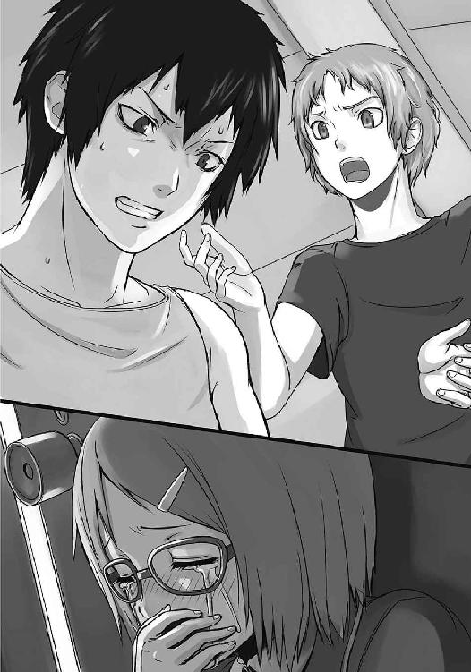
自分は、取り返しのつかないことをしてしまった。
鉄でも食べたかと思うほど重い体を引きずり、結恵は電車に乗り込んだ。車内はやけに人が少ない。時計を見れば、いつもより五本も遅い電車だった。いつの間に、こんなに時間が経っていたのか。どこをどう帰ってきたのか、覚えていない。
（なんてこと、しちゃったんだろう）
試合の前日に選手に怪我をさせてしまうなんて、最低の行為だ。結恵は人がまばらなシートに座り、両手で顔を覆った。こうすると、自分を責め立てる自分の声が聞こえてくるようだ。
償えるならなんだってしたい。すぐに彼のケガが治るなら、どんなことだってしたい。
でも、そんな方法はどこにもない。
逃避と、我に返ることを繰り返しながら、結恵はどんどん落ち込んでいく。
「結恵ちゃーん」
その時、結恵の気分とは正反対の明るい声が聞こえてきた。顔を上げると、隣の車両から荻野高校の制服を着た女子生徒が、手を振りながら歩いてくる。
「椎奈さん......」
「まさかと思ったけど、結恵ちゃんもこの電車に乗ってるなんてね。さては根つめすぎて遅くなったかな？」
否定する気も起きず、結恵は曖昧な返事をする。
そんな姿を見てどう思ったのか、椎奈は少し首をかしげた。
「まあいいわ。それよりも、いよいよ明日は試合だね。調子はどう？」
胸がずきりと痛む。シャツ越しに胸を押さえると、小さな声で「まぁまぁです」と答えた。
つれない返事の結恵に、椎奈は目を細める。
「......もしかして、ちょっと緊張してる？」
結恵は、ただ黙って頷いた。......それから二人は沈黙に落ちる。今の結恵は椎奈にまで気を回せない。芳人のことだけが頭の中を占めていた。
「芳人は──」
椎奈が呟いたその名前に、結恵は過剰に反応する。
「あいつの仕上がりはどう？」
探るように訊いてくる椎奈。きっとライバルの状態が知りたいのだろう。正直に答えると、芳人は試合に出られない。でも、そんなことは口に出せなくて、結恵は黙って俯いた。
電車のスピードが徐々に落ちてくる。もうすぐ椎奈が降りる駅だ。
「............それじゃあね結恵ちゃん」
結局ほとんど喋らなかった椎奈は、そう言って立ち上がった。電車はもうホームに入り込んでいる。結恵は消え入りそうな声で「さようなら」とだけ呟いた。
「明日の試合、楽しみにしてるよ。混合団体で当たれるといいね」
楽しみになんか出来ない。まして混合団体なんて、出場すら無理だ。
顔を上げると、椎奈が優しく微笑んでいた。本当に、楽しみなんだろう。椎奈だけじゃない。巴も、琳太郎も......芳人も、みんな試合を楽しみにしていた。けれど、それを自分が台無しにしてしまった。──辛い。苦しい。
「椎奈、さん......」
気がつけば、結恵は電車を出て行こうとする椎奈を呼び止めていた。
「なに？ 結恵ちゃん」
話を聞いてもらいたかった。波のように押し寄せる自責から、少しでも楽になりたかった。
「......あ......いえ......なんでも、ないです......」
でも、結恵はそれすらできない。芳人が隠している以上、自分が言うわけにもいかない。
結局、結恵は黙って俯いた。
「......あのね、結恵ちゃん」
急に、椎奈が結恵の腕を掴んできた。
「え？ あ、あの、椎奈さ──」
抵抗する間もなく引っ張られ、結恵はそのまま電車の外まで連れて行かれる。
「そんな状態で、なんでもないわけないでしょ」
背後でドアが閉まった。目の前には、透き通るような目で見ている椎奈の顔がある。
「私でよかったら、話してみてよ」
電車は、二人をホームに残したまま、ゆっくりと走り出した。
駅を離れて椎奈に連れて行かれたのは、小さな公園だった。住宅街の中にあるものの、時間が遅い所為で人気がない。薄暗い中、オレンジ色の街灯の光が、ぼんやりと光っている。
二人は、古いベンチに並んで座った。
「今日............芳人先輩、怪我をしたんです」
やっと出た最初の言葉は、口にしてみると、現実を直視させられたようで身体が強張った。
「アイツが怪我......？ な、なんで？ どこを？ どれくらい──」
椎奈が驚いたように質問を繰り出すが、はっと気がついて言葉を止め、「ごめん」と呟いた。
「ううん。いいんです......」
結恵は首を振ると、一呼吸置き、再び喋りだす。
「芳人先輩、足を怪我して......すごく痛そうで......」
「そんな......じゃあ、明日の試合は......」
「芳人先輩は出るって言ってましたけど......たぶん......無理だと思います」
椎奈は「そっか......」と呟き、小さく息を吐いた。落胆したように目を伏せ、ベンチの背もたれに深く身体を預ける。
「......まったく、あのバカ......試合前になにやってるのよ......」
「芳人先輩は......何も悪くないです......」
悔しそうな椎奈の声に、結恵は首を振る。
「私の、所為なんです」
「え？」
椎奈が振り向く。結恵は、責められるのが怖くて、身体を震わせながら言葉を紡いだ。
「......実は......私、尖ったものが怖いんです」
「尖ったものが怖い......それって、先端恐怖症？」
結恵は小さく頷く。
「ちょっとずつ、良くはなっていたんですけど......今日の練習中に、それが出ちゃって......剣から逃げようとして転びかけた私を、芳人先輩が庇ってくれたんです。それで......足を......」
結恵はメガネ越しに目を押さえる。
「そう、だったの......でもね、結恵ちゃん」
強張る背中を、そっと椎奈が撫でてくれる。
「芳人はそれくらいじゃ怒らないわよ。あんまり自分を責めるのはよくな────」
「でも私！ 謝れてすらいないんです......っ！」
椎奈の言葉を遮って叫び、涙を浮かべながら振り向く。
「立ち聞きしちゃったんです！ 芳人先輩、私の前じゃ何でもない振りしてて......明日の試合にも出るって言ってて......私が悪いのに......なのに、私を気遣ってくれて......！」
ボロボロと涙がこぼれてくる。手で拭っても拭いきれなくて、膝の上に置いた剣ケースに落ちて染みを作った。
「みんな、頑張って練習してたのに......明日の試合を楽しみにしてたのに......私が台無しにしちゃって......私の所為で......私が悪いのに......芳人先輩は......芳人先輩は......っ！」
耐え切れなくなり、泣き声を上げる。顔を覆って背中を丸め、子どものように。
「お、落ち着いて結恵ちゃん。起こっちゃったことは仕方ないじゃない。辛いのはわかるけど、悩んでてもしょうがないことよ。芳人が庇ってくれてるんだったら、結恵ちゃんはそれに応えて明日の試合を頑張らなきゃ」
「でも......でも......！ 私が頑張ったって、芳人先輩は試合に出られない。混合団体もできなくなるし......琳太郎先輩も、巴先生も、楽しみにして、頑張ってたのに......」
椎奈は悲痛な面持ちで口を閉ざし、咽び泣く結恵の背中を優しく撫でる。
「............私......もう......みんなに合わせる顔がないです......」
結恵は顔を覆ったまま、何度も何度もしゃくりあげる。
「入部する前から歓迎してくれて......一生懸命練習に付き合ってくれて......なのにみんなの努力を台無しにして......それでも気を遣ってもらって......」
楽しかった。フェンシング部にいることは楽しかった。みんなのことを好きになれた。
だからこそ、自分のしたことが許せない。
「こんな......こんなことになるなら......こんなに迷惑掛けるなら──」
頭を抱え、涙交じりで叫ぶ。
「フェンシングなんて、やらなきゃよかったっ！」
「──ッ！」
突然、乱暴に肩を掴まれる。顔をぐしゃぐしゃにしながら見ると、椎奈が鋭い目でこちらを睨んでいた。顔は怒りに染まり、肩を握る手には、痛いほど力が籠っている。
「それは......それだけは、言っちゃダメ......」
椎奈はそっと肩から手を離し、怒りを燻らせるように、静かに言葉を紡ぐ。
「芳人の気持ち、考えたことあるの？ 芳人は結恵ちゃんのことを思って隠してるのよ？ 一緒に頑張ってきた仲間だから黙ってるのよ？ なのにやらなきゃよかったなんて──」
「でも、私がいなきゃ芳人先輩は怪我しなかった......」
「いい加減にして......そんなこと言ったら、怪我した今の芳人はどうなるのよ。結恵ちゃんは大切な仲間だから、アイツは身を挺して守ったのよ。チームの一員なら、もっと仲間のことを考えてあげなさいよ......。もっと、アイツの......芳人の気持ちを汲んであげてよ」
「......そんなに......！」
結恵は泣きじゃくりながら、椎奈の顔を睨み付ける。
「そんなに言うなら！ 椎奈さんが杜坂に入ればよかったじゃない！ そのほうがみんな喜んでくれる！ 私なんかより、ずっと......ずっとッ！」
瞬間、椎奈が息を呑んだ。顔から血の気が引き、瞳孔が狭まる。
「......ふざけないで......ッ」
彼女は俯き、わなわなと握った拳を震わせる。
「そこまで言うならッ！」
椎奈は、結恵の膝の上にあった剣ケースをひったくった。
「杜坂フェンシング部から出て行きなさいッ！」
そして留め金を外し、中から剣を取り出す。
「フェンシング辞めなさいッ！」
椎奈が大きく剣を振りかぶる。
──折られる。瞬時に理解した。......ここで、終わりなんだ。もう、ダメなんだ。こんなことになった以上、自分はもう、フェンシング部にはいられない。
だけど、見えてしまった。
振り上げた剣のガード──その裏にある、巴の合格シール。
巴の言葉を思い出す。
『これからは結恵がそのガードのシールを増やしていくこと』
『試合に出られないあたしの分までね。言ったでしょ？ 一緒に頑張りましょうって』
......ああ、そうか。自分はまだ、一人ぼっちじゃない。
芳人に怪我をさせ、勝手に自分を責め、チームから逸れたような気でいただけだ。
巴も、琳太郎も、芳人も、自分を仲間だと思ってくれているんだ。
「ダ──」
椎奈が、剣を振り下ろす。
「ダメぇッ！」
とっさに結恵は叫んだ。手を伸ばし、地面と剣の間に手を差し込もうと飛び込む。尖ったものが自分に向かってくる恐怖が膨れ上がった。──でも、逃げない。
「っ！」
結恵はきつく目を瞑る。
だけど、痛みはやってこなかった。
「......ほんとに、しょうがない子」
恐る恐る目を開けると、剣は手に刺さる直前で止まっていた。刀身を追って顔を上げると、椎奈が呆れ交じりの笑みで、こちらを見下ろしている。
「ここまでしなきゃ、動けないなんて」
椎奈は剣を回転させると、グリップの方を差し出してくる。
それを受け取った瞬間、折られなかった安心感でまた涙が出てきた。
「しい、な、さん............!?」
剣を胸に抱え、結恵はしゃくりあげる。
「わ、私......辞めたく、ないです......」
涙をこぼしながら、すがるように椎奈を見上げる。
「でも......もう、どうしたらいいか......わからなくて......」
「言ったじゃない」
椎奈は地面に膝を着き、そっと結恵を抱きしめてきた。優しく頭を押さえられ、もう片方の手で背中を撫でられ、赤ん坊のようにあやされる。彼女の体温に、今まで強張っていた体がほぐれていくようだった。不安と罪悪感で止まらなかった震えも、段々と落ち着いていく。
「結恵ちゃんは、試合を頑張ればいいのよ」
「でも、芳人先輩は......」
「うん。まともには戦えないでしょうね」
結恵は椎奈の前で俯く。彼女は励ましてくれるが、芳人のことが頭にある以上、自分のことだけ考えて試合なんか出来ない。
「でも、混合団体がある」
結恵が顔を上げると、椎奈は微笑みながらこぼれる涙を拭ってくれた。
「芳人は、きっと仲間のために無理してでも試合に出てくるわ。だから、そこで結恵ちゃんが芳人の分まで勝つのよ。戦えないアイツの分までね」
「私が......芳人先輩の分まで......勝つ......」
考えも、しなかった。自分は初心者で、やっとフェンシングが出来るようになって、それでもまだ尖ったものは怖くて......とても試合で勝てるなんて思わなかった。
でも、彼のためなら。
「......私、やります」
そう言ったとき、不思議と溢れていた涙が途切れた。
椎奈が腕を解く。結恵はぎゅっと剣を抱いたまま、微笑む椎奈を見つめる。
「芳人先輩は、私を守って怪我したんだから......」
それは、もう変えられない現実。
「だから、今度は私が芳人先輩の夢を守ります！」
現実は、未来で変えられる。
「私が勝ちます！」
その言葉を聞いた椎奈が満足そうに笑う。
「それでこそ、杜坂のメンバーよ」
椎奈は立ち上がり、スカートについた汚れを払う。
「椎奈さん......ありがとうございます。私......本当に取り返しのつかない事するところでした」
「私こそゴメン......実は、痛い所突かれて、ちょっと本気でイラついちゃったから」
「......？」
椎奈は恥ずかしそうに頭をかく。
「さて......いつまでもこうしてられないわね。結恵ちゃん。そんな顔じゃ帰れないでしょ？ 家に来なさいよ。お風呂貸してあげるから」
「え......そんな、でも......」
突然の提案に戸惑っていると、再び椎奈が剣をひったくった。
「もーらった！」
そして笑いながら逃げていく。
「あっ、あっ！ ま、待ってください！ 返してください！」
結恵は立ち上がり、慌てて椎奈の後を追う。
走っていたら、何だか元気が戻ってきた。
（絶対......明日勝とう......みんなの分も......私が！）
椎奈を追いかけながら、結恵はぎゅっと拳を握った。
『第四章 女王蜂と有星結恵』
「絶好の試合日和ね！」
家の外に出るなり、巴は晴れ渡った空を見て満足そうに頷いた。
「試合は屋内だから関係ねーだろ」
背伸びをする姉を見て、芳人は呆れたようにため息をつく。
「屋内だろうと晴れてたほうがいいじゃない。ほら、早く来なさい」
いつものスーツに身を包んだ姉が、玄関の向こうで手招きをする。
「能天気だな、お前は」
だが、今はその能天気さがありがたい。
（気づかれては、いないな）
巴はこちらに背中を向け、眩しそうに天を仰いでいた。
芳人はゆっくり玄関に腰を下ろし、無事なほうの左足からスニーカーを履く。しかし、やはり右足が上手くいかない。痛みは薄れるどころか、ますます酷くなっているようだ。
「芳人、何もたもたしてるのよ」
ふいに巴が振り返った。
（ぐッ！）
その瞬間、無理やり右足をスニーカーにねじ込んだ。顔は伏せて表情を見せないようにする。足首から脳天にまで痛みが登った。それでも、怪しまれないようにすぐ立ち上がる。
「いい年して待つこともできねぇのか」
歪んだ表情は憎まれ口で隠した。
「なによー」
「いいから行くぞ」
初めて入る市民体育館は広かった。
「全国高校体育競技会フェンシング競技 地区予選会場」と書かれた看板を横切り、ロビーを通り過ぎると、バスケットコート四つは楽に入るコートが見えてくる。会場では、いたるところで、他校のフェンサーが個人戦に向けてアップを始めていた。掛け声や顧問の檄、準備運動の数を数える声が響いている。だけど、不思議と騒がしくはない。無駄口が少ないんだろう。誰もが真剣。持っている剣はスポーツ用のものでも、心構えでそれは真剣に見える。
そんな剣が、そこら中にある。結恵は顔に押し付けるようにメガネを掛け直した。ふと、剣を持った男子生徒が反対側から歩いてくる。結恵はそれを見ないよう、とっさに顔を背けた。
背けた先に、厳しい表情をした芳人が目に入る。
「あの、芳人先輩......」
「あ？ なんだよ？」
芳人は、苦しい表情を隠したようなしかめっ面で振り返る。そんな彼を見て、結恵は「大丈夫ですか？」と言いかけた言葉を呑み込んだ。彼が自分に隠していることは分かっていても、やはり辛そうな顔を見ていると、どうしても声をかけてしまいたくなる。
彼を心配するような言葉は言えない。
だから代わりに、結恵は歪んだ芳人の顔を真っ直ぐに見つめた。
「......私、頑張りますね！ 絶対、勝ちますから！」
「ん？ お、おう......そうか、頑張れ」
芳人は、少々面食らったように頷いた。
「いやぁ結恵ちゃん、やる気満々だね！ じゃあさっそくウォーミングアップしようか！」
琳太郎が手を回してくる。彼は、いつも通りへらへら笑っていた。芳人に言われたとおり、黙っていることにしたのだろう。
「琳太郎、アップは後。先に荷物置いてくるわよ。っていうか引っ付くな」
巴が琳太郎の首根っこを掴んで結恵から引き剥がす。彼女もまた、いつも通りである。
「......開会式まで三十分くらいあるわね」
二階ギャラリーにある学校別の待機所に荷物を置いたところで、巴が時計を見て呟いた。
「よしみんな、軽めにアップしておきなさい。終わったら技受けてあげるわよ」
「俺はいらねぇ。試合前に気ぃ張ると空回るしな。お前はこいつらの相手してやれ」
「なによ。可愛くないわねー。いいわ。琳太郎、結恵。準備運動終わったら──って、やば。大会役員に挨拶するの忘れてた」
巴は顔をしかめると、「ちょっと行って来る！」と言い残して一階に駆けていった。その後姿を見送り、芳人が小さく息を吐く。
「芳人。準備運動は......」
「言ったろ。試合前に気ぃ張ると空回るって。お前らだけでやってこい」
芳人は猫でも追っ払うように手を振る。平静を装ってはいるが、明らかに足を庇っての言葉だった。知っている者からすれば、逆にそれが痛々しい。
「相変わらず愛想悪いわね、杜坂のエースは」
ふと、後ろから聞きなれた声がした。
いつのまにか、杜坂に割り振られたスペースのすぐ後ろに女子フェンサーが座っている。ユニフォームの上に黒いジャージを羽織り、セミロングの髪は後ろでアップになっていた。おどけたような笑みだけが、いつもと変わらない。
それを見た芳人が心の底から嫌そうな顔をした。
「椎奈......」
「やっほー」
だが、当の本人は気にした様子もなくケロリとして手をヒラヒラ振っている。
「ねぇ、試合表はもう見た？」
「見てねぇよ」
「そ。じゃあ見てみなさい」
椎奈がホッチキスで止められた冊子を投げてくる。それを受け取り、開いた芳人の表情が歪んだ。隣から覗き込んだ琳太郎も、顔をしかめる。
「初戦は、荻野とか」
「巴ちゃん、くじ運ねぇな。初っ端から去年の優勝校とかよ」
椎奈が挑戦的な笑みを浮かべる。
「私もびっくりしたわ。まさかこんなに早く結恵ちゃんと戦えるなんてね」
ね？ と椎奈が同意を求めてきた。すると、芳人が勢い良くこちらを向く。
「お前、アイツと知り合いだったのか？」
「え、ええ......知り合いと言うか、お友達と言うか......」
どういえば適切だろうかと考えていると、それよりも早く椎奈が答えた。
「知り合いって言うよりフレンド？ いやむしろブラザー？」
「それを言うならシスターじゃねえのか」
「具体的な仲良しエピソードを言うと、一緒にお風呂に入ったことがある、かな？」
「なんだとッ!?」
「マジでぇッ!?」
今度は琳太郎もこちらを向いた。さっきよりも首が回る速度が速い。
（っていうか......昨日のは一緒に入ったって言うより、無理やり連れ込まれたのに......）
「椎奈ッ！ ウチの部員をたぶらかしてんじゃねぇよ！」
「なによ！ 芳人は私を変態か何かだと思ってるの？」
ぎゃーぎゃーと激しく言い争いを始める二人。互いが互いの過去のことを穿り返しながら罵倒しあっている。
「二人って......仲、悪いんですか？」
「いや。二人とも、顔合わせるといつもあんな感じだし」
「じゃあ、仲いいんですよね？」
「さあ？ でも、一年くらい前までは付き合ってたよ」
「そうなんですか............ええっ!?」
あまりにさらりと言われたので、思わず聞き逃してしまうところだった。
「あれ？ 付き合ってなかったかな？」
琳太郎は難しそうな顔で首を捻る。
「芳人ー。椎奈ちゃーん。二人って付き合ってたんだっけ？」
「「付き合ってない！」」
息ぴったりで答える二人。
「こんな色気のねぇ女と誰が付き合うか！」
「はああっ!? この無駄のないカラダに色気がないですってぇ!?」
更にヒートアップする二人。
そんな時、ふと思った。
（もし、芳人先輩が荻野に入っていたら、どうなってたんだろう......）
大会進行は、午前が個人戦。昼休みを挟み、午後に団体戦と混合団体戦のトーナメントが行われる。開会式を終えると、息をつく暇もなく個人戦だ。
個人戦は六人を一組として分けられ、総当たり戦を行う。そこで戦績がよかった選手十六名が上に上がり、最終的にトーナメントで順位を決定するのだ。そこにたどり着くまで、二回の総当たり戦を勝ち抜かなければならない。
結恵は一回戦目で巴の下にうな垂れて帰ってきた。
「すみません......二回戦にいけませんでした」
「うん見てた」
負けて帰ってきたというのに、巴に怒った様子はない。むしろ微笑んでいる。
「二勝三敗か......。初陣にしては上出来よ」
巴はそう言うが、勝てた二回は初心者っぽい一年生が相手だ。年上にはことごとく負けている。自分には混合団体で勝つという目標があるというのに、こんな戦績では夢のまた夢だ。
「でも、だいぶ動きが硬かったわ。緊張してたのかもしれないけど......やっぱり、気になる？」
結恵は頷いて、ちらりと周囲を見る。
剣......剣......剣、剣、剣、剣剣剣剣剣。どこを見ても剣がある。ふとした瞬間に、誰かの持った剣がこちらを向いていることも珍しくない。
「大丈夫？ 気分悪くなったらすぐに言いなさい」
「は、はい......大丈夫です。平気です。......先輩達の試合、見たいですし」
少し声を震わせながら答えると、巴は優しく微笑んだ。だが、それはすぐ苦笑いに変わる。彼女は頭を掻きながら、困ったように言った。
「あーでも、琳太郎は二回戦落ち決定なんだ」
「え？ そうなんですか？」
「うん。ありゃあ組み合わせが悪かった。一回戦は順調に勝ったけど、二回戦は最悪。よりによって琳太郎の苦手なタイプのフェンサーばっかり」
巴は大きくため息をついた。
「琳太郎はリーチが長い分、懐に飛び込んでくるフェンサーが苦手なのよ。その癖、ガン攻めするからねぇ。その辺はあたしのスタイルに似ちゃったんだけど」
口先を尖らせる巴は、少し悔しそうに見えた。
「あいつも結構頑張ったんだけどなあ」
そう言って巴は後頭部を掻き毟った。
琳太郎は二回戦敗退。彼の実力が他校と比べてどの程度のものかわからないので、その成績がどういう意味を持つか想像できなかった。
それでは、もう一人の方は──
「芳人先輩は、どうなっていますか？」
そう訊ねた瞬間、巴は大声で笑った。
「あはは！ アイツはここで負けるような鍛え方はしてないわよ。きっと、そろそろトーナメント進出を決めて──」
そう言いつつ、巴が男子の試合会場を振り向いたときだった。
「え......？」
彼女の表情が凍る。
「うそ、でしょ......？」
芳人が、完封負けをしたところだった。
男子個人戦部門は、大きな衝撃に包まれていた。
蜂谷芳人が一勝もできず敗退──そのニュースは瞬く間に広がり、噂話にまで発展している。なにせ去年の芳人は、入学したばかりでいきなり優勝を攫っていった風雲児だ。今年は誰もが彼を一番の敵だと思っていた。
同時に、敗北の理由も広がっている。
言うまでもなく、明白だ。
「芳人！」
試合会場からロビーに引き上げてきた芳人に、三人が駆け寄る。彼は顔中に脂汗を浮かべ、重たそうに足を引きずっていた。もう、隠すことも出来ないほど痛いのだろう。
「アンタ！ その足──」
「なんだよ」
巴の声を遮り、芳人が凶暴な眼で睨み付ける。だが、それくらいじゃ巴は怯まない。
「怪我してるでしょう!? ちょっと見せなさい！」
「してねぇよ。ちょっと......調子が悪いだけだ」
「なに意地張ってるのよ！」
巴が手を伸ばす......が、芳人はそれを乱暴に振り払った。
「うるせぇなっ！ たまたま負けたからって怪我とか言ってんじゃねぇよ！ 相手が悪かっただけだ！ いいからお前は混合団体の準備でもして来い！」
「なによ！ もし酷かったら団体に出られないのよ！」
芳人の顔が引きつる。だが彼はすぐに目つきを鋭くすると、巴のことを睨み付けた。負けずと巴も睨み返す。会場で試合する選手よりも、緊迫した空気が流れた。
その中で結恵は、きつくユニフォームの裾を握り締めていた。
俯き、下唇を噛み、必死に言葉を堪える。
（......私は、何も言っちゃダメだ......）
芳人は自分を庇ってくれている。ここで本当のことを言ってしまったら、芳人の気持ちを台無しにしてしまう。混合団体にも出ることも出来なくなってしまう。
「......巴ちゃん」
不意に、琳太郎が二人の間に割って入った。結恵は思わず顔を上げる。琳太郎は俯き加減で、床に視線をさまよわせている。
「実は......芳人は......」
「なに？ 何か知ってるの琳太郎？」
「おい、琳太郎......テメェ......！」
芳人が琳太郎の肩を掴む。結恵も「言わないでください！」と声を上げそうになった。
だが、それより早く琳太郎が叫ぶ。
「じ、実は芳人！ 足に重りをつけて試合してたんだよ！」
沈黙が、流れた。
巴が顔をしかめる。
「ほ、ほら！ マンガとかであるじゃん！ わざと重い服着て戦ってさ、ピンチになったら外して『これからが俺の本当の力だ』みたいなやつ！ 芳人はそれを真似してたんだよ！ 重さは......えっと、二十キロ！ そりゃ足も引きずるよな！」
琳太郎は盛大に目を泳がせながら、何度も芳人の背中を叩く。
「でもさっきの試合じゃ外しそびれたんだよな！ な!? ピンチを演出するつもりが、本当に負けたんだろ？ ったく芳人はバカだな！ でも大丈夫！ 混合団体の時はちゃんと俺が責任もって外させるから！ 巴ちゃんも結恵ちゃんも心配しないで！」
再び沈黙が流れた。琳太郎は芳人と巴を交互に見ながら、顔を引きつらせている。
「じ、実は重りのほかにも──」
「わかった。もうわかったわ。いいから黙ってなさい」
さらに誤魔化そうとした琳太郎を、巴は押しのける。彼女は一歩近づき、腕を組んで真正面から芳人を見据える。
「何があったか知らないけど......やれるのね？」
芳人は力強く顎を引く。
「ああ......！」
その言葉を聞いて、巴は組んでいた腕を解き、真っ直ぐ芳人に指を突きつける。
「なら勝ちなさいよ！」
「当たり前だ」
その言葉に、巴は呆れたようにため息をつく。そして、頭を掻きながらくるりと背を向けた。
「団体のスターティングメンバーを提出してくるわ」
巴は役員テーブルに向かって歩き出す。
「......まったく、不器用なやつ」
巴はそっと呟いた。
その後姿を見送った後で、琳太郎が額の汗を袖で拭う。
「ふぅ......ナイス俺の機転」
「おめでたい野郎だなお前は......でも、まぁ......サンキュな」
芳人の言葉に、琳太郎は歯を見せて笑う。
「......あ、あの、芳人先輩......その......混合団体のことなんですけど......」
ようやく喋れるようになった結恵は、おずおずと話しかける。芳人は顔をしかめ、右足を隠すように身体を横に向けた。
「あ？ なんだよ」
昨日の会話を盗み聞きしなくても、今のやり取りを見ればいくら鈍い自分だって気づく。彼は、きっとそれを心配しているんだろう。
まだ、彼には守られっぱなしだ。
でも。
「その重り......外さなくていいですよ」
「なに？」
結恵は眉を顰める芳人に向かって、強く彼の顔を見つめる。
「私が、芳人先輩の分まで勝ちますから」
今度は私が守る番。
「絶対！ 勝って見せますから！」
芳人は目を丸くし、すこし惚けたように結恵を見つめていた。だが、やがてその顔は好戦的な笑みに変わる。
「テメェ、言うようになったじゃねぇか」
乱暴に頭をかき回される。
「まっ、アテにゃしてねぇが期待はしててやる」
最後にポンポンと頭を叩き、芳人は歩き出す。
その足取りはまだぎこちないが、何か重りを外したようだった。
混合団体──初戦。
杜坂高校 ＶＳ 荻野高校。
互いに礼を終えた後で、杜坂の面々は試合コートのすぐ後ろにある控え場所で円になった。
「円陣組むわよ」
巴が剣を持ち、地面に向ける。芳人と琳太郎も自分の得物を手に取ると、先端を彼女の剣に重ねた。そして結恵も、三人に習って剣を持つ。
四人の中心で、四本の剣が交差した。
「あたし達のチームは、意地っ張りなエースと、未熟な二年生と、初めて間もない新人のみ」
巴が一人一人の顔を見ながら言う。
「きっと、会場の誰もがそう思っている」
彼女の言うとおりだろう。試合を観戦するギャラリーは、みんな優勝候補の荻野に視線を送っていた。
「だけど、あたしは断言する。三人は杜坂ゴールデンメンバーの再来よ」
巴が大きく息を吸い込んだ。
「杜坂高校──ファイッ！」
巴が吼え、ゆっくりと剣を持ち上げた。つられて三人の剣も持ち上がり、四本の剣先が天を向く。
「思い知らせてやりなさいッ！」
「おうっ！」
「よっしゃっ！」
「はいっ！」
空で四人の剣がぶつかり合い、甲高い音を響かせる。
「覚悟しなさい荻野ォッ！」
巴が向こうのチームに向かって剣を突きつけた。
遠くで椎奈が不敵に微笑み、こちらに背中を向ける。
黒地のジャージに、金糸で刺繍された「荻野高校」の文字が光っていた。
フェンシングをやっていて、こんなに嬉しいと思ったのは、初めてだった。
今までだって嬉しいと思ったことはあった。練習した技が撃てたとき。試合に勝ったとき。優勝して壇上に上がったとき。......だけど、今回は特別だ。
有星結恵と、空井琳太郎。
あいつらのおかげだ。
一年前、琳太郎が入部してくれたこと。......そして、あの泣き虫女。
最初に会った時は、ひ弱そうだと思った。
入部した時も、いつまでもつかと思った。
でも。
「絶対、勝ちますから！」
あんなことを言うようになった。
「私が、芳人先輩の分まで勝ちますから！」
そんなことを言うようになった。
これじゃあ、何のために無理して試合に出ると言ったかわからない。
──あいつが自分と同じ苦しみを味あわないよう、無理して試合に勝って、怪我をなかったことにしようとした自分がバカらしい。
あいつは、とっくに、喜びも苦しみも分かち合えるチームメンバーになっていた。
（ああバカらしい）
嬉しくて、嬉しくて、
「オラァッ！」
嬉しくて、つい相手をぶちのめしてしまう。
「４─０！」
審判の声が上がり、また芳人に点数が入った。
圧倒的。優勝候補といわれた荻野のメンバーに、手も足も出させない。
相手は早くも疲弊していた。手負いと思ってかかってきたのだろう。それが一方的な試合展開になり、焦っている。マスク越しに、敵の目が同様で揺れているのが見えた。
「蜂谷......お前、怪我しているんじゃないのか？」
溜まらず、相手が話しかけてきた。
「怪我？ してるよ」
もはや隠す必要はない。
「で？ その話に面白ぇオチはあんのかよ？」
「くっ！」
「ねぇんだな？ じゃあ終わらせるぜ」
左足で地面を蹴り、体をトップスピードに乗せる。
「『フレェェッシュッ！』」
スズメバチのように相手を刺し、そのまま駆け抜ける。
（っつう！）
ブレーキをかけた右足に痛みが走った。しかし審判が自分の勝利を知らせ、他のメンバーが歓声をあげたので、振り返って剣を掲げて見せる。
これでチームカウントが１─０。いい滑り出しだ。
団体戦は、三人対三人で五点先取の総当たり戦となる。その中で、先にチームカウントを五点獲得したチームの勝ちだ。
「芳人！ おまっ......なんで!?」
自分たちの控え場所に戻ると、琳太郎が驚いたように声をかけてきた。
「重りを外したんだよ」
皮肉めいた笑みを浮かべ、パイプ椅子にどっかり腰を下ろす。
「このバカ！ 最初から飛ばしすぎよ！」
「うるせぇな。初戦は勝ってテンション上げておきてぇだろ」
姉の大声に、顔をしかめながら片耳を塞いだ。
「凄い！ 芳人先輩凄いです！」
結恵は必死に拍手をして喜んでいる。
「あぁ？ エースがビギナーに頼れるかよ」
ついいつもの調子で返してしまい、思わず顔をしかめた。
「......まぁでも、次は頼んだぞ」
そう言って掌を頭の上に掲げる。結恵は意味がわからず首を傾げたが、三秒経ってようやく気がつき、恥ずかしそうにおずおずと掌を差し出した。
「行って来いっ！」
「は、はい！」
エースとビギナーの、甲高いハイタッチの音が響き渡った。
「ひぃぃいっ！」
迫ってきた先端を、渾身の力で弾いた。敵はひるまず、更に脇腹を狙って剣を走らせる。だが、結恵は悲鳴を上げながらもそれを叩き落した。
相手の胸ががら空きになる。あっ、と思って剣を突き出してみたが、わずかに届かない。しかし敵は焦ったようで、慌てて距離を開けた。
結恵の試合が始まって、すでに二分が経過していた。点数は０─０。一方的に結恵が攻められ、必死に守ってここまでもつれ込んだ。
（や、やっぱり強い......。防御だけで精一杯だ。だけど......なんとか突かなくちゃ）
なんとか隙を探そうとするが、相手は早い。自分じゃ簡単に追いつけないことは分かっていた。不安がよぎる。息切れが激しい。動きが鈍くなってきている。このままじゃいずれ......。
（お、落ち着いて。息を整えなくちゃ。まだ動ける。動けるよ。大丈夫。私は、ドーベルマンと一緒に走ったこともあるんだから。これくらいで限界じゃないよ）
大きく深呼吸すると、自分の剣の先端にリードが見えた。その先には、唸り声を上げて敵を威嚇するドーベルマンがいる。
「ポンちゃん......」
「なんだそりゃっ！」
敵が地面を蹴った。凄まじい突進に、思わず結恵は逃げようと腰を引く──が。
『犬を引っ張ってはいけない』
巴の言葉を思い出した。結恵は引きかけた腰を落とし、敵の先端を剣の腹で押えて逸らす。
その瞬間、犬が走り出した。つられて結恵の手も引っ張られる。
「クードロアっ！」
結恵の剣が、相手に突き刺さった。すぐに元の姿勢に戻ると、マスク越しに、相手の引きつった表情が見える。
「有星選手！ １─０！」
審判の手が、結恵の方に上がった。
「や、やった......！」
身体が熱を持つ。強張っていた筋肉から力が抜けるのを感じた。強豪相手に一点を取れた喜びに、思わず自分の胸に手を当てる。
「残り三十秒！」
審判がそう言った瞬間、相手がイノシシのように突進してきた。焦りからか、今までとは違って力任せに剣を振るわれる。結恵は慌てて受け止めるが、そこは男女の筋力差。無理やり押し込まれそうになる。
強引にガードをこじ開けようとする相手。その剣先が、徐々に近づいてくる。
（こ、怖い......！ やだ......だ、だめ......もう、もたない......！）
腕の力が抜けかけたその時。
「タイムアップ １─０！ 杜坂高校、有星選手！」
審判の声がかかった。
「え？ え？」
守ることに必死だった結恵は、審判の声が聞こえず、おろおろと周囲を見回す。
「結恵ー！ 勝ったのよー！」
「やったな結恵ちゃーん！」
「あ......」
心臓が膨れ上がる。脳が溶けたみたいにくらくらした。背中がむずがゆい。マスクを取ると、やけに体育館の照明が眩しかった。手にかいた汗が反射してキラキラと光っている。
「やった......やった......！」
嬉しくて仲間の下に駆け寄ろうとした──が。
「バカ！ 挨拶して来い」
芳人に追い返された。結恵は慌てて戻ると、審判の号令に従って礼をし、やっと控え場所に戻ってこれる。
「結恵！ よく頑張ったわ！ この子ったらもう──このこのこのっ！」
戻るなり、巴が抱きついてきて、これでもかというほど頭を撫で回される。
「タイムアップとか、あまり褒められた勝ち方じゃあねぇな。......ま、贅沢は言えねぇか。お前らしい勝ち方っちゃ勝ち方だ」
芳人は苦言を呈すものの、口元は笑っている。
「これでチームカウント２だな！ 順調順調！ このままストレート勝ちしちゃうかもな！」
はしゃぐ琳太郎。だが、すぐに低い芳人の声が突き刺さる。
「お前、次の相手にそれが言えるのかよ」
「あ、そうだった......」
琳太郎が顔をしかめながら相手の控え場所を見る。そこでは、椎奈がのんびりと準備をしていた。
「椎奈さん......やっぱりそんなに強いんですか？」
「ああ、あいつは強い」
初めて、芳人が巴以外のフェンサーを「強い」と言ったのを聞いた。
「荻野は去年も団体優勝だが、椎奈はそのときからレギュラーに入っていた。おまけにこの大会の女子個人じゃ優勝だぞ」
「え？」
見てみると、壁に張り出された午前試合結果の一番上に、彼女の名前があった。芳人の怪我に気を取られ、全く気がつかなかった。
「椎奈の相手は、お前や琳太郎には荷が重いぞ」
「今から戦うのに言わないでくれよ」
琳太郎が深く息を吐く。
「まぁ、なんだ......琳太郎、俺が応援してやるから、死ぬ気でやってこい」
「おっ！ 芳人がそんなこと言うなんてな。何かいいことあった？」
「うるせぇ！ とっとと行け！」
「あいあい。まあ必死こいていきますか」
琳太郎はそう言って剣を肩に担ぎ、コートに向かっていった。
初めて見る、椎奈のフェンシング。
だけど、それは一分も見れたものじゃなかった。
「５─０！ 荻野高校、三条選手！」
彼女は、強すぎた。
危なげなく、それでいて圧倒的な強さで琳太郎を打ち負かした椎奈は、悠々と自分の控え場所に戻ってきた。
「やっと一勝か......思ったより長くなりそうだな」
「悪い三条。頼りっぱなしで」
他のメンバーが悔しそうに言ってくる。
「あら？ 先輩たち、杜坂を甘く見てたんですか？ あそこは簡単に勝たせてくれないですよ」
「そうだな。スズメバチが怪我をしているから油断していた」
椎奈は杜坂チームの方を見て、小さく微笑む。
（巴さんが怪我した芳人を試合に出すかどうかは微妙だったけど、出たならば本気にならなきゃいけない。それに、予想以上だったのは......）
「予想外だったのはあの一年だな」
先輩の一人が、向こう側の小柄な少女を顎で指す。
「なんだアイツは？ フットワークもアタックもまるで素人。びくびくキョロキョロして場馴れしてないのが丸分かりなのに、一回も横山の突きが通らないなんて」
「あんな弱そうなのに攻撃が通らないと、焦りでペースを乱されるんだよ。おまけにポンちゃんとかワケわかんないこと呟くし......」
「あの子は、巴さんが見出したフェンサーですからね。一筋縄じゃいかないですよ」
「女王蜂──蜂谷巴か。防御しか教えなかったのか？」
違うだろう。でも口には出さなかった。
（先端恐怖症......か。フェンサーには向かないと思ったけれど、ここまで強敵になるなんてね。顔面に剣を当てれば動けなくなるかもしれないけど、フェアじゃないな。黙っておこう）
だが、このままでは厳しい戦いになる。
「杜坂の穴は、琳太郎ね」
「あいつが？ 正直、あのリーチは手強いぞ？」
椎奈が、薄く笑う。
「不肖の後輩が、先輩にアドバイスしてもいいですか？」
「なに言ってんだ。ウチで一番強いくせに」
「それじゃ、お言葉に甘えて────」
三戦目、またも芳人が圧勝し、チームカウントを３─１にした。
これで勝利に大きくリードを広げた杜坂高校だった、が。
「３─５！ 荻野高校、横山選手！」
琳太郎が負けた。
最初は優勢に見えた。長いリーチで敵を寄せ付けず、二点を連続で取った。だが、相手は徐々に距離をつめ、結局終盤はやられるままになってしまった。
一見すると、琳太郎のリーチに相手が痺れを切らし、泥仕合になったように見える。だが、敵はまるで、最初からそうするように仕向けていたような印象だった。
「くそっ......すまねぇ」
マスクを脱ぎ、悔しそうな表情を露にした彼が帰ってくる。椎奈戦は仕方ないとは言え、これで琳太郎は二戦二敗だ。
「どういうことだ？ アイツは結恵がタイムアップで勝った相手だろ？ どちらかと言えばガン攻めのフェンサーじゃないはず。今はまるっきり戦い方が違ったぞ」
芳人が怪訝な顔でハイタッチを交わす荻野チームを見る。
「椎奈ね」
巴が厳しい目つきになる。その視線は、向こうで微笑むフェンサーに向けられていた。
「あの子は昔から、相手の癖や弱点を見抜く力も高かったからね。メンバーに琳太郎の弱点を教えたに違いないわ」
「琳太郎先輩の弱点って......確か懐に飛び込んでくる選手が嫌いっていうのですか？」
結恵の言葉に、琳太郎は困ったように頭を掻いた。
「そうなんだよ。わかってても思いっきり突っ込んでこられると、どうしても反応が遅れる」
「このままじゃ不味いわよ。接近させる前に沈めなさい！」
「おう！」
琳太郎は勢い良く返事するものの、難しいだろうと結恵は思った。スタイルを変えるのは言われてすぐ出来ることじゃない。自分だって、巴のアドバイスを何日もかけて物にしてきた。
その困難を荻野の選手はやってのける。やはり、強豪校のレギュラーだ。
「次は結恵よ！ 王手を掛けてきなさい！」
「は、はい！ 琳太郎先輩の分も取り返してきます！」
「悔しいけど、頼んだぞ結恵ちゃん！」
結恵は頷き、剣を取った。
「タイムアップ！ ０─０！」
どちらも一点も突けないまま、時間切れとなってしまった。結恵は荒い呼吸を繰り返しながら、ゆっくり構えを解く。
（引き分け？ それってどうなっちゃうんだろう？）
そう思っていると、審判がポケットからコインを取り出して近づいてきた。
「新田選手が表。有星選手は裏ね」
審判はそう言うと、コインを指で弾いた。回転しながら落ちてくるコイン。審判はそれを掴むと、自分の腕の上に置いた。
審判の手が離れる。──コインは、表だった。
「新田選手だね」
「あ、あの......」
結恵はおずおずと審判に話しかける。
「あの......同点だったらそれで勝ち負け決めちゃうんですか？ 私......負けなんですか？」
「は？」
泣きそうな結恵に対し、審判はあっけにとられた表情をする。
「結恵！ 違う違う！ 負けじゃないから！」
控え場所から、巴が慌てて声を上げる。
「同点の場合は延長戦になるの！ 一分間のうち、一点突いたほうの勝ち！ それでも同点だった場合は、コインで決めた選手の勝ちになるの！」
「あ、そうなんですね。よかったぁ......負けじゃなくて」
「気ぃ抜いてんじゃねぇぞ結恵！ コインの優先権を取られたって事は、相手は最悪、守ってりゃ勝ちになるんだ！ お前が勝つには、何としても突くしかねぇんだぞ！」
結恵は「あっ！」と声を上げる。見ると、相手は勝ち誇ったような顔をしていた。自分が攻撃の苦手な選手であるということは、とっくにバレている。
「では、延長戦！」
審判の掛け声で延長戦が始まる。だが、相手はその場から動かない。結恵はゆっくり近づいてみるが、敵は同じ分だけ下がって距離を保っている。
おそるおそる、剣を伸ばしてみた。
「間抜けめッ！」
「ひぃいいっ！」
敵が結恵の剣を弾き、突きを繰り出してくる。結恵は悲鳴を上げながら防御して下がった。しかし、相手はそれ以上追ってこない。
（ど、どうしよう......時間切れで勝つつもりなんだ。なんとかして私から仕掛けなきゃ）
しかし、結恵は芳人のようなスピードがない。琳太郎のようにリーチもない。
（私が突く方法があるとすれば、一つだけ......）
巴のような──。
（『蜂谷アドヴァンゲア』）
結恵は体勢を低くし、相手を見据えた。
（これしかない！）
敵に迫る結恵。相手は驚いたようだが、その場から動かない。結恵は剣先に犬がいることを意識し、左足で地面を蹴り、右足を大きく踏み込ませ、身体全体で突きを放った。
相手は、いとも容易くそれを防御する。
（今だっ！）
結恵は戻らず、左足をひきつける。
「──ひゃあっ！」
だが、敵がカウンターを繰り出してきた。
結恵は思わず飛びのいてしまう。急ブレーキをかけてから下がったので、体勢を崩してしまった。よたよたと後ろに下がってしまう。
そんな結恵を追って敵が迫る。転ばないよう手を広げてバランスを取っていた結恵は、守る術がない。
がら空きの胴体に迫る先端。
鋭いものが目に突き刺さる恐怖が膨れ上がる。
「やだ──！」
結恵は身体を横向きに捻る。自分の胸の数ミリ先を、剣先が通り過ぎていった。
見えたのは、敵の驚愕と、隙だらけのわき腹。
「──！ やぁあっ！」
そこに剣を突き立てた。その拍子に、とうとうバランスを崩した結恵は尻餅をつく。
ブザーが鳴り響き、審判が手を上げた。
「１─０！ 杜坂高校、有星選手！」
「や、やった──！」
苦し紛れの突きだが、通った。有利な条件で勝利を確信していた相手は、呆然と突かれた場所に手を当てている。
（勝てた......勝てた、けど......）
また、敵の剣から逃げてしまった。
『蜂谷アドヴァンゲア』は、完成しない。
「よーし！ あと一勝っ！」
姉が拳を振り上げる。
チームカウント４─２。残る試合は三回。
有利な試合展開にはしゃぐメンバーを見て、芳人は顔をしかめた。
「厳しいのはここからだぞ」
水をさす行為だとは分かっているが、呟かずに入られない。
「椎奈がまだ一回しかでてきてねぇ。アイツの試合は二回残っている」
「大丈夫なんでしょうか......」
「大丈夫にするしかねぇだろ」
不安そうな結恵の肩に手を置き、立ち上がる。
「俺がここで勝てばいいだけの話だ」
とは言うものの、次の相手はその椎奈だ。怪我をした右足は、感覚がなくなりつつある。痛みが薄れてきたのはありがたいが、代償として上手く歩けなかった。
（琳太郎は弱点がバレてる。最後の試合は結恵と椎奈。勝ち目が薄いな......）
ここが正念場だ。
コートに立ち、椎奈と向き合った。審判の合図に合わせ、互いに礼をする。
だが、椎奈は構えを取らない。代わりに、マスク越しに笑いかけてきた。
「芳人とやるのは、いつぶりかな？」
「中学のクラブが最後だから、一年ちょいか」
「そんなにかぁ」
椎奈は思い出すように遠い目をする。
「芳人。杜坂はどう？」
「......そうだな」
目を瞑り、一呼吸置いて答えた。
「うるせぇ顧問とバカなダチ。それから軟弱な新入部員しかいねぇ。正直、クラブチームにいたときの方が練習に身が入ったよ」
目を開け、構えを取った。
「でも、居心地は悪くねぇ............いや」
口元が自然と笑顔になる。試合前だから、やたら獰猛な笑みになってしまった。
「最高だ」
「そっか......」
椎奈が天井を仰ぐ。
「芳人......見てよ。私、荻野のレギュラーだよ」
「見りゃ分かる」
「もっとよく見てって」
椎奈も構えた。
「杜坂よりも強い、アナタよりも強い、荻野のエースを見てって」
試合開始の合図がかかった。
椎奈が飛び出し、剣を突き出す。芳人は一歩下がり、それを弾き飛ばした。
（カウンターっ！）
がら空きになった彼女の胸目掛けて、腕を伸ばし、一歩踏み込む。
（ぎぃッ！）
薄れていたと思った痛みが蘇った。
体勢が崩れる。剣先が届かない。
「もらったぁっ！」
椎奈がこちらの剣を弾き、わき腹目掛けて突っ込んできた。
（下が──）
──れない。
わき腹に鈍い感触がめり込んだ。
「三条選手！ １─０！」
審判の手が上がる。混合団体で、初めて得点を許してしまった。
「私は負けが六割。勝ちが四割」
「あ？」
「中学時代の、私と芳人の戦績」
マスク越しに、椎奈が微笑む。
「でも、安心して」
見せ付けるように、椎奈が構えを解いて胸を突き出す。
「この試合は、カウントしないであげる」
その瞬間、なにかが切れた。
「舐めてんじゃねぇぞッ！」
痛みを無視し、地面を蹴った。椎奈が驚いたように下がるが、遅い。
彼女の剣を押さえ込み、そのままスライドさせて彼女の胸に突き刺した。
「蜂谷選手！ １─１！」
芳人は地面を向いて荒い呼吸を繰り返す。痛い。だが、それでも顔を上げて、椎奈に剣を突きつけた。
「この試合は、俺とお前の戦績にカウントしなくていい」
姉とそっくりに、笑う。
「ハンデ貰って負けるのは、情けねぇだろ？」
椎奈も笑う。
「言うと思った」
芳人の必殺技──フレッシュ。
それを放った瞬間、彼の身体が沈みこんだ。そこに突き刺さる、椎奈のカウンター。
「５─４！ 荻野高校、三条選手！」
ブザーの音と共に、審判の手が上がる。
芳人は、うずくまったままその場から動かない。
「く、そ............っ！」
「芳人ッ！」
巴が駆け出し、二人も後に続いた。彼に肩を貸し、なんとか控え場所まで運んでくる。
「......悪ぃ」
その言葉に、巴は首を振った。
「あの子相手に良くやったわ。もういいから今は休みなさい」
芳人は椅子に座り、そのままうな垂れた。
チームカウント４─３。有利に思えた試合は、一点差まで追いつかれてしまった。
それでも勝っている、まだ風向きはこっちだ──そう思いたいのに、気持ち悪い焦燥感がメンバーの胸を焼く。
それを感じ取り、芳人は歯を食いしばった。
「芳人」
そんな彼の肩に、琳太郎が手を置く。
「後は任せろ」
顔を上げた芳人。
だが、すぐに俯いた。
そして、搾り出すように呟く。
「......頼む」
「おう！」
剣を担ぎ、琳太郎はコートへと向かう。
「頑張ってください！ 琳太郎先輩！ いっぱい応援しますから！」
「琳太郎！ 相手に呑まれるな！ 強気で行きなさい！」
結恵と巴の声援に、琳太郎は剣を大きく掲げた。
（任せろとは言ったものの......）
迫る相手から逃げながら、琳太郎は剣を凪いだ。
しかし、相手はそれを避けると、一気に手が届く距離まで詰めてくる。
（しまったっ！）
とっさに眼下の相手目掛けて剣を振り下ろそうとするが、それより速く腹部に衝撃が走った。
「４─４！ 新田選手！」
審判の手が上がる。
（やばい......追いつかれた）
前半は、距離をとって戦えた。そのおかげで順調に得点を重ねられたものの、相手は徐々にこちらの動きを掴み、みるみる点差を縮められてしまった。
こめかみから噴出した汗が、マスクの内側に染み込む。
今の突きで、二回連続で得点を奪われてしまった。完全に、相手は波に乗っている。
（二度あることは......うわっと、ダメだダメだ！ 変なこと考えるな！）
思わず顔が引きつる。
（どうする？ ガン攻めして近づけさせないようにしようか？ いや、変に距離を詰めると不味い。......じゃあ防御に徹してカウンター狙いか？ うーん。俺、結恵ちゃんほど防御得意じゃないしなぁ。チャンスが来るまで持ちこたえられるかどうか......）
焦る。戦法がまとまらない。次に自分はどう動けばいい？
ごちゃごちゃした頭に、審判の合図が飛び込んできた。
（くそっ！）
突っ込んできた相手に合わせ、思わず下がってしまう。下がりながら剣を突き出して牽制を試みるが、止まってくれない。牽制の剣を叩かれ、胸が開いた隙に相手は体勢を低くする。
（ヤバいッ！）
地を舐めるような踏み込みで、ついに相手が飛び込んできた。
突き返す？ 逃げる？
どっちも間に合いそうにない！
（やられる──！）
相手の動きがゆっくりに見えた。でも、自分の身体も動いてくれない。
（ここで負けたら後がない！ 俺が勝たなきゃ！）
相手の剣が刺さるまで、あと拳一つ分。
（どんなことをしても！）
瞬間、琳太郎は思いっきり体を捻った。
そのまま、相手をいなすように回転する。
審判の制止がかかった。
「あ、あぶねー」
突かれては、いない。
だが、審判がポケットから一枚のプラスチックカードを取り出した。
「空井選手にイエローカード！」
反則────相手の剣を避けるため、横に逃げて背中を向けたためだった。
「いいよいいよ。突かれなかったんだからイエローくらい」
マスクを押し上げ、袖口で顎の冷や汗を拭う。
（でも今ので覚悟決まったぜ。元々、急にスタイル変えられるほど器用な性格じゃないか）
再び構える琳太郎。
そして、合図とともに飛び出した。
（やっぱ俺は巴ちゃんスタイルだ！）
蜂が飛び立つように、クードロアを放つ。常人なら届かない距離。しかしアシナガバチはそれを可能にする。だが相手も強者。面食らいながらも間合いを切り、琳太郎が元の構えに戻りきる前に剣を払いのけた。
（くるぞ！）
案の定、すぐに敵が懐に飛び込んでくる。
（ほらなッ！）
琳太郎は下がらない。逆に、自ら相手の懐に飛び込んだ。
驚いた相手が、一瞬だけ足を止める。
「ここだあッ！」
前進しながら突きを放つクードロアの派生技──マルシェ・クードロア。
下がりきれるリーチじゃない。防御が間に合うタイミングでもない。瞬間的に理解した相手が息を止める。その縮こまった肺に、琳太郎が剣先を突きたてた。
「どうだッ！ ──って！」
勢い余り、そのまま相手に体当たりしてしまう。相手は吹っ飛び、琳太郎も倒れこむ。
──だけど、なんとか突けた。
「俺の、勝ちだ......！」
だけど、審判の声がかからない。
（あれ？）
見ると、審判はポケットに手を入れていた。
（おい......なんでだよ......）
勝利の余韻はすぐに消え去り、おぼつかない足取りで立ち上がる。
（やめてくれ......出すな......出さないでくれ......）
審判の手が、ゆっくりポケットから引き上げられる。
（出すなっ！）
掲げられたのは、イエローカード。
審判は、その裏から、真っ赤なカードを取り出す。
「ラフプレイ！ 空井選手、イエローカード二枚でレッドカード！」
「そんな......」
「５─４！ 荻野高校、新田選手！」
「待ってくれって！」
勝敗宣言をした審判に琳太郎が駆け寄る。
「今ぶつかったのは俺が悪いけどさ！ それよりも先に突いてたろ！」
「空井選手、戻って」
「ちゃんと見てくれよ！ ラフプレイだってワザとじゃない！ 今のは──」
「審判への暴言は、チーム全体にイエローカードがかかるぞ！」
冷たく言い捨てる審判に、琳太郎は食って掛かる。
「だけどさ！」
「琳太郎ッ！」
巴の声が響き、琳太郎は言葉を呑み込んだ。
みると、彼女は悔しそうに首を振っている。
ダメ、なんだ。
「ちくしょう......」
剣を握り締める。
「ちぃくしょぉぉッ！」
「すまねぇ......本当にすまねぇ。俺、一勝もできなかった......」
「......お前は、よくやったよ。今のは......相手にツキが回っただけだ」
両手で頭を押さえる琳太郎の肩に、芳人が手を置く。
これで、チームカウントは４─４
王手と言うべきか。後がなくなったというべきか。
間違いなく、後者だろう。
「最後は結恵と......椎奈」
巴が厳しい表情で呟く。
実力の差は明瞭。初めて二ヶ月足らずのビギナーと、何年もの経験がある優勝者。勝敗はわかりきっていた。意外と粘る杜坂高校に、ギャラリーも増えていたが、琳太郎が負けた時点でその数は半分以下になっている。
「結恵。一緒に勝つわよ！」
それでも巴は、諦めない。
拳を作り、強い眼差しで見つめ、不敵な笑みを浮かべる女王蜂。
（私は......）
自分の愛剣を見つめる。そのガードに貼られた、数々の合格シール。
（私は巴先生と戦うんだ。一人じゃない......一緒に戦える人がいるんだ）
けれど、恐怖がある。
自分で、全体の勝敗が決まってしまう、プレッシャー。
「有星選手、前へ」
審判に呼ばれ、結恵はコートを向いた。
だけど、足がすくんで動かない。
勇気がほしい。
この場にきても怖がってしまう自分に、勇気を与えてもらいたい。
もう一回、メンバーを振り返った。
「......あの、もし良かったらですけど、皆さんに一つだけ......お願いがあるんです」
おずおずと言うと、三人の目がこっちを向いた。
「えっと、ほんと出来たらでいいんで、無理だったら大丈夫ですし、なんて言うか......」
「さっさと言え」
芳人がイラついたように言うので、結恵は俯いた。
剣を胸に抱えたまま、もじもじした後、震えた声で言う。
「お......」
「お？」
「応援......してて、下さい」
次の瞬間、巴に頭を引っぱたかれた。
そして琳太郎に肩を掴まれ、くるりと回れ右をさせられる。
最後に、芳人が左足で結恵の尻を蹴飛ばした。
「あう」
コートの方に向かってたたらを踏んだ結恵は、傷むお尻を押えながら振り返る。
「当たり前でしょ結恵！」
「頑張れ！ 超頑張れ結恵ちゃん！」
「テメェ負けんじゃねぇぞ結恵ェッ！」
体育館中に響く、仲間の声援。
（勇気......）
結恵は大きく頷く。
（でた！）
そして力いっぱい返事をする。
「はいっ！ 行ってきますっ！」
コートに入り、椎奈と向き合って礼をする。
頭を上げ、彼女と見詰め合った。
「やっと戦えるね、結恵ちゃん」
「正直、とっても怖いですけど......椎奈さんと戦えるのは、ずっと楽しみでした」
「嬉しいわね。でも、戦うだけでいいの？」
結恵は首を横に振り、マスクを被った。
「勝ちます。芳人先輩に、そう言いましたから」
「そっか......でもね」
椎奈もマスクを被る。
「負けてなんかあげない」
そして、互いに剣を構えた。
審判の合図とともに、椎奈が踏み込んできた。胸目掛けて繰り出される剣。結恵は一歩飛びのき、その攻撃を叩き落す。遠慮のない、刺し殺しに来るかのような突きだった。
「いい反応ね！」
椎奈は薄く笑みを浮かべ、更に距離を詰めてくる。狙いは再び右胸。結恵は払おうと剣を振るったが、それを予想していたように椎奈の剣先が円を描いた。
──フェイント。振り払おうとした剣を掻い潜られ、先端が胸に迫ってくる。結恵はとっさに剣を逆方向に振るうが、そのとたん、椎奈の切っ先が急降下した。
本当の狙いはわき腹。結恵はその先端を追って剣を振り下ろす──が、急に彼女の剣が上昇した。まるで水中の魚を狩る鳥のような突き。
──払う前に突かれる！
結恵は、上体を反らして剣を跳ね上げた。
金属音が響く。突かれるまであと一センチというところで防げた。
連続三回のフェイント攻撃。防げたと分かった瞬間、どっと嫌な汗が沸いた。
「さすが、防御は一流ね。フェイント全部に反応しておいて防ぐなんて。ただのビギナーなら今ので......いえ、最初のフェイントでやられてたわ」
椎奈がゆっくり剣を伸ばし、そのままこっちに向かって歩いてきた。
「本来、トリックスタイルはガードスタイルと相性がいいの」
結恵は下がりながら椎奈の剣を払おうとするが、彼女の剣先は華麗に円を描きながらそれを掻い潜る。
「でも、下がられちゃフェイントがいまいち活かされない」
椎奈は散歩でもするようにのんびり歩いているのに、下がる結恵は必死だ。
「さあ、ここで問題。私が結恵ちゃんに本領発揮するには、どうしたらいいと思う？」
「えっ!?」
「止まれ結恵！」
芳人の声を聞き、結恵は反射的に足を止めた。ちらりと下を見ると、自分の右足がエンドラインの上にかぶさっている。後一歩でも下がったら、リングアウトで一点だった。
「正解はコレ。この状態は、レスリングで言ったらマウントポジションよ」
もう、下がれない。
「前門の剣と、後門のリングアウト。やられ方を選ばせてあげる」
椎奈が突きを繰り出してきた。
狙いはまた胸。払おうとしたら、椎奈の剣は急降下してわき腹──と思ったら上昇して再び右胸──になった瞬間に円を描いて左胸──と思ってつられてしまい結局は肩──ではなくて今度は────。
結恵は鬼ごっこのように椎奈の剣を追いかける。だが、彼女の剣先は上下左右に軌道を変え、触れることも許さない。必要最小限の動きで避ける椎奈。結恵の剣は、虚しく風を切るばかり。
「よく耐えたほうね。下がらなかったことは、褒めてあげる」
防御のスキマを狙撃されるように、あっさりと結恵の身体に剣先がめり込む。
「１─０！ 三条選手！」
完全に、踊らされてしまった。
「防御方法を誘導しちゃえば、結恵ちゃんは規則正しく防いでくれる。そしたら、メトロノームの針の合間を突くくらい、簡単、単純。正確すぎるのよ、結恵ちゃんは」
椎奈は余裕のある笑みを浮かべる。それに対して、結恵は早くも息切れだ。掌の上で踊らされ、体力も精神力もごっそり奪われてしまっている。
どうしよう──そう思った時、巴の叫び声が聞こえた。
「結恵！ ギリギリまで動かない！ じっくり剣先を見なさい！ 結恵なら防げるはずよ！」
「わ、わかりました。やってみます！」
結恵が椎奈に向き直ったところで、審判の合図がかかった。椎奈は再びゆっくりとした動きで剣先を伸ばしてくる。
挑発するように揺れる椎奈の剣先。結恵は払おうとせず、じっとその動きを見つめた。鋭利な先端が眩しく、目に突き刺さってくる。アレが急に伸びて自分に刺さってくるかと思うと、心臓が縮こまって潰れてしまいそうだった。何もしていないのに、顔中に汗が浮かぶ。一瞬だけ目が霞んだとき、椎奈の無機質な剣に、悪魔の顔が見えた。
悪魔は口を閉じ、凶悪な目つきでこちらを睨んでいる。首を揺らして、どこに噛み付こうか考えている。怖い......見ているだけで目が潰れそう。
でも、結恵は払い除けようとしなかった。自分の腕に自信なんかないけれど、巴の言葉なら信じられる。そうすると、自分なら防げると思える。
何度も突っ込んでこようとする先端の悪魔。でも、まだだ。まだ悪魔は襲ってこない。
そして、先端の悪魔が牙を見せた。
「──ここだぁ！」
結恵が剣を振るう。響く金属音。椎奈が少しだけ目を丸くした後、不敵に微笑んだ。
「ふふ──やるわねっ！」
椎奈の剣が軌道を変える。だが、結恵は反応せずに一歩下がった。
その瞬間、先端の悪魔が牙を見せて飛び掛ってくる。
（怖い──けど、こんなに怖いならっ！）
結恵は剣を振り下ろし、椎奈の剣を叩き落す。がら空きになる彼女の胴体。結恵は瞬間的に自分の剣先をその胸に向けると、手を伸ばして地面を蹴った。
「クードロア！」
反射的に下がる椎奈。だが、追いかける結恵の身体の方が早い。先端が何かに触れた感触が、わずかに伝わる。
鳴り響くブザー。上がる審判の手。
「有星選手！ １─１！」
「ぃよっしゃあああああ！」
「よくやったわっ！」
静けさを切り裂く歓声が響いた。
振り返ると、巴と琳太郎が両手を上げて叫んでいる。
「どうよっ！ 結恵の『尖ったもの』に対する反射神経は並外れているわよ！ それが自分を狙っているなら尚更！ 安いフェイントで勝とうったってそうはいかないわ！」
突くフリと本気突きじゃあ、恐怖の度合いが違う。
先端恐怖症だけが持てる、特殊な防御センス。
「巴さんの言うとおりね」
だが、対する椎奈は余裕の表情だった。素人相手に一点を取られた屈辱感も見せない。
「......じゃあ、剣先が見えない突きを、教えてあげる」
彼女はただ、マスクの中で薄く笑っていた。
開始の声がかかる。体勢は今までと同じ。椎奈が攻め、結恵が守る。
ゆっくり近づいてくる椎奈の表情は、相変わらず笑っていた。
いつもの、独特な、イタズラめいた笑みだ。
その顔を崩さないまま、椎奈が仕掛けてくる。
結恵は剣先を見つめた。
（狙いは右胸。距離は遠め。これなら──）
避けれる！ 小さな自信を持って剣先を追うが、不意に、それが視界から消えた。
（あれ？）
先端の悪魔が、どこにもいない。
そう思ったのもつかの間。
「あっ──」
背後に衝撃を感じた。
「２─１！ 三条選手！」
気がついたらアラームが鳴り、審判が手を上げ、椎奈に点数が入っている。
（うそ......今の......なんで？）
何が起こったのかわからない。
（今......私......）
唯一つ、わかることは──。
（背中を突かれた......？）
「結恵！ 靴紐！ 緩んでるぞ！」
また成す術なく背中を突かれた時、背後から芳人の声がかかった。
「え？」
結恵は足元を見るが、靴紐なんか緩んでいない。もう一度顔を上げると、芳人が「いいから来い！」と叫んで手招きしていた。
結恵はワケがわからないまま、審判に一言告げて杜坂の控え場所まで行く。そして、彼の足元でとりあえず靴紐を結び始めた。
「いいか。よく聞け」
しゃがみこんだ結恵の耳に、芳人がそっと話しかけてきた。そこでようやく気づく。靴紐を結び直せといったのは方便で、アドバイスをくれるのだと。
「よ、芳人先輩。なんか、私、いつの間にか背中を突かれて......」
「わかっている。あれは『振込み突き』って技だ」
聞きなれない名前に、結恵はただ頷く。
「『振込み突き』は剣を思いっきりしならせて先端をぶつける技だ。あいつはそれを背中に向けてやっている。腕力が必要だから女子じゃあんまり使われないんだが......あいつ、いつの間にかマスターしてたみたいだ」
苦々しい口調で芳人は言う。
なるほど。先端が背後に回っているなら、見えないはずだ。
「ど、どうすれば......」
のろのろと靴紐を結びながら結恵は訊く。
「簡単よ。アレは見た目より防ぎやすい」
巴も結恵の傍らに膝を着いて言う。
「アレは先端をピンポイントでぶつける技だから、一歩でも前後に身体をずらせば当たらない。もしくは剣を肩口に沿えれば大丈夫。......でも気をつけて。『振込み突き』の本当に怖いところは、こっちが防御しようとすると胴体ががら空きになることよ。そこを攻められたら一溜まりもない。トリックスター型フェンサーの椎奈とは、相性抜群の技だから」
「は、はい！ わかりました！ 気をつけます！」
頷いて結恵は立ち上がり、再び椎奈と向き合った。彼女はまだ薄ら笑いを崩さない。きっと、アドバイスを貰ったことなど想像がついているのだろう
審判の掛け声と同時に、椎奈が詰め寄ってきた。剣先は獲物を選ぶように揺れ動き、粘着性を伴って結恵の身体を追っている。
その剣が、一気に向かってきた。狙うは再び背中。だが、結恵は言われたとおり肩口に剣を沿えて一歩後退した。しかし、椎奈はそれを予想していたかのように狙いを胴体に変えてくる。
（巴先生の言ったとおり！）
結恵はとっさに剣を戻し、椎奈の剣を捕らえた。完全に剣先を身体から逸らす。
（やった......！）
絶好のタイミングだ。
「それで防いだつもり？」
椎奈が囁く。
「あっ」
剣を力任せに振り払われた。
がら空きになる胴体。狙われる胸。
（防御しなきゃ！）
「残念」
フェイントだった。剣が軌道を変え、背中を狙ってくる。
とっさに結恵は一歩後退した。狙いが狂った刀身が肩に当たり焼け付くような痛みが走る。それでも悲鳴を呑み込んで、何とかカウンターを繰り出した。
（だめ......速い）
先端は、瞬時に下がった椎奈に届かない。
剣を払われる。体勢が崩れた。そこに、振り下ろすような『振込み突き』が襲い掛かる。
「うっ！」
背中に受けた衝撃が胸から抜け、結恵はその場に膝をついた。
「４─１！ 三条選手！」
本当のチェックメイト。
もう、突かれる事は許されない。
（ど、どうしよう）
結恵を嘲笑うようなフェイント。先端が見えなくなる『振込み突き』。例えなんとか防御できても、突き返せない。体力を奪われ、体勢が崩れたところに剣を叩き込まれる。
（も、もう一点も取られちゃいけない）
それでいて、四回連続でこちらの突きを当てなければならない。
開始の合図がかかる。
結恵は迷うことなく下がった。
追ってくる椎奈。繰り出される連続した突き。フェイントが混じらない。全て本気で狙ってきている。それを全て弾いていくが、反撃が出来ない。
結恵は縮こまりながらその猛攻に耐える。
耐えて、耐えて、反撃の隙を窺う。だが、それがいつまでたっても現れない。こちらのスタミナは徐々に削られ、息が上がってくる。
（くっ！ うっ！ い、痛いぃ......）
本気突きに混ざる『振込み突き』を防ぐたびに、狙いがそれた椎奈の剣が身体を叩く。スナップを利かせているので、まるで鞭で打たれているみたいだった。
（い、いつまで持ちこたえられるか......）
そう思った瞬間だった。
（あっ！）
椎奈が今まで以上に大きく振りかぶった。鉄壁に焦らされたか。彼女の胴体に隙が出来る。ここを逃したら、次はいつチャンスが来るかわからない。──突くなら今しかない！
とっさに結恵は前に出て、剣を繰り出した。
その時、マスク越しに椎奈が笑ったのが見える。
（ちがっ！ これは──！）
隙に見せた、フェイント。バックステップで下がる椎奈。たたらを踏む結恵。転ばないように踏ん張ったが、背中を上に向けてしまった。
「絶っ好ッ！」
椎奈が大きく剣を振りかぶった。
上空から飛来する先端の悪魔──『振込み突き』。
（ダメ......！ やられちゃう！）
右足に力を入れ、その場に踏みとどまる。逃げられる位置じゃない──防御だ！ しかし剣を確認している暇もない。風を切る『振込み突き』の音だけが頼りだ。
「やぁああっ！」
結恵は、悪魔の声が聞こえる場所を凪いだ。
手に伝わる、剣を払った感触。
同時に耳に突き刺さる金属音。何かが、割れるような音がした。
それはまるで、悪魔の牙が折れたような音だった。
「え......？」
足元を見ると、短くなった剣の先端が落ちている。自分が最も怖いものの残骸。こうなれば、もう怖くはない............はず。
（や、やだ......）
顔を上げてはいけない──本能が言っている。
しかし、見えてしまった。
（いやだ......）
折れた椎奈の剣が。今まで以上に鋭くなってしまった先端が、こちらを向いている。
（あ、あれは......）
あの剣が刺さって、父は──
「うわぁあああっ！」
結恵は悲鳴を上げ、顔を覆ってその場にうずくまった。心臓が苦しい。自分が息を吸っているのか吐いているのか分からない。体中の血が冷や汗になって全部出てしまったみたいだ。身体が震えて言うことが聞かない。瞳まで震えて、地震でも起こっているんじゃないかと思った。
「ゆ、結恵ちゃん？」
椎奈が声をかけるが、返事が出来ない。
（お、落ち着いて。大丈夫......大丈夫だよ）
心の中で言い聞かせる。
（だって防具つけてるもん！ 刺さらないよ！ 大丈夫大丈夫。さ、刺さらない......きっと）
でも──。
（お父さんは......アレで......アレで......！）
倒れたお父さん。床に流れる血。飛んできた破片。目に刺さる想像。焼け付く痛み。
大好きだった父を殺した、先端の悪魔。
そのときから、自分は悪魔に取り憑かれてしまったんだ。
────先端恐怖症────。
「結恵ッ！」
メンバーが慌てて駆け寄ってくる。
「おい、杜坂の選手は一体──」
審判が声をかけようとするが、芳人がそれを遮って叫んだ。
「なんでもねぇよ！ いいから椎奈の剣を交換させてくれ！」
芳人の言葉に、審判は渋々と言った感じで椎奈に剣の交換を命じる。彼女は心配そうに何度も振り返りながら、自分の控え場所に戻っていった。
「結恵、大丈夫!?」
「しっかりしろ！ 結恵！」
「立てるか結恵ちゃん？」
必死に声をかける巴。肩を掴んで揺さぶる芳人。心配そうな声色の琳太郎。
結恵は怯えながら手をどけた。目の前にあったのは心痛に満ちたメンバーの顔。
そんな皆の姿を見て、結恵は息を呑んだ。握り拳を作り、足に力を入れ、立ち上がる。
「──平気です」
マスクを外し、笑みを浮かべてみせた。
「だけど結恵......あなた、折れた剣は......」
「大丈夫です。巴先生、言ったじゃないですか。フェンシングの防具は強いって。これをつけてれば、私は安心です」
「だけど、お前......」
芳人も巴も、分かっているだろう。防具の例外を、結恵が経験していることを。
「心配しないでください。ほら！ 私、この通りです」
結恵は両手を広げてみせる。
「結恵ちゃん......無理してないか？」
「し、してないですよ！ ちょっとびっくりしただけで、もうなんともないです」
「なら、いいけどさ......」
琳太郎は煮え切らないような表情でいる。
「杜坂の選手は、もういいのか？」
見ると、椎奈が剣の交換を終えてきたところだった。
「え、ええ......大丈夫よ」
巴は納得しきれない感じで頷く。審判に促され、杜坂のメンバーは控え場所に戻っていった。結恵は、再び椎奈と向き直る。
彼女の顔が、再び心配に彩られた。
それはそうだろう。
だって......結恵はもう、我慢できないから。
（足が......動かない）
無理やり浮かべていた笑みが崩れ、顔がどんどん恐怖で蒼白になっていく。
（怖い......怖いよ......。目......開けていられない......）
結恵はきつく目を瞑る。でも顔は覆えない。そんなことをしたら、メンバーに気づかれてしまう。......いや、もう気がついているのかもしれない。さっきまで鳴り響いていた声援が、聞こえなくなっていた。心配で、応援なんてできないんだ。
（頑張らなくっちゃ。怖くても、辛くても頑張らなくっちゃ）
怖気づく心を叱咤するように、何度も頭の中で言葉を唱える。
（芳人先輩は、痛いのに頑張ったんだよ。私を守るために............だから、今度は私が頑張らないと......！ 目を開けて、戦わないと......！）
だけど、目は開いてくれない。今にもうずくまってしまいたい。マスクを被れば多少恐怖が和らぐかもしれないけど......そしたら試合が始まってしまう。こんな状態じゃ、なにもできないまま負けてしまう。
（お願い......開いて......お願いだから......動いて......）
目に、足に懇願するが、恐怖に固まってしまっている。
（......これじゃ私......昔からなにも変わってない......）
恐怖に負け、何も出来ず、ダメな自分のままだ。
必死に頑張ってきたつもりだけど、やっぱり自分はダメなままなのか。
（お父さん......お父さんなら、どうしたの......？）
憧れだった人は、どうやって恐怖を乗り越えたんだろうか。自分みたいに弱虫だったという父が、どうして戦えたんだろうか。
（お父さん......怖いよ......動けないよ......私、どうしたら────）
恐怖に負け、涙が滲む。
その時──────。
「あーもう！ ちょー最悪！ とっくに始まってるじゃん！」
「お前が道間違ったのが原因だろ」
「無事つけたんだから、いいじゃないっすか二人とも」
「そうだよ。早く有星さんを探そう」
聞き覚えのある声が聞こえた。
自然と、目が開く。
見えたのは、向かい側のギャラリーにいる四人組だった。
「あれ、有星じゃないか？」
「丁度試合じゃないっすか！」
「これ、どっちが勝ってるの？」
「知らないわよ。おーいっ！ 結恵ーっ！」
四人が、大きく手を振る。
「加代子......ちゃん......。中谷君......井川君......矢車君も......」
涙が、浮かんできた。信じられない。まさか......まさか......。
「せーのっ──『頑張れぇーっ！』」
まさか、友達が自分を応援に来てくれるなんて。
「結恵っ！ 友達が応援に来てるのよ！ 気合い入れなさいっ！」
「巴......先生......」
止んでいた巴の声が鳴り響く。
「オラァッ結恵ッ！ ボサっとしてんじゃねぇぞっ！」
「結恵ちゃん！ 俺達もついてるぞッ！」
芳人と琳太郎の声も聞こえる。
「気持ちで負けるな有星！」「ファイトっすよ有星ちゃん！」「ガンガンいこうぜだよ有星さん！」「マジ頑張って結恵ぇ！」「根性見せやがれ結恵ッ！」「巻き返してけ結恵ちゃんっ！」
「さぁ結恵っ！ 結恵の力を見せてやりなさいッ！」
「──ああ......私......」
涙が──
「......フェンシング、やってよかったぁ......！」
──溢れてきた。
「......頑張ってきて、よかったぁ......！」
──止まらない。
（お父さん......私、分かったよ......）
目はしっかり開いている。足の震えは止まった。
（色んな人の応援があれば、怖くても、戦えるんだね......）
涙が照明を反射し、光を振りまく。
（お父さん......私、変わるから）
響き渡る声援が、一つ残らず身体に入り込んでくる。
（嫌なことから、逃げないよ。苦手な運動も、頑張るよ）
感じたことのない力が、内側から湧いて出てくる。
（まだ泣き虫だけど......怖いものにも、向かっていくよ）
そうだ。私はちっちゃくて、非力で、おどおどしているけれど──。
守ることは、一流。
「私、頑張るから」
嬉しくて涙が止まらない。
この涙は熱くて、メガネが曇る。おかげで前が見えない。
相手が見えない。仲間も見えない。友達も見えない。
「今までで一番、頑張るから」
──結恵は邪魔なメガネに手を掛ける。
絶対に勝つと決めた。もう突かせないと決めた。
だから、メガネは......もう────いらない。
大丈夫。
だって。
「私はッ！ 変わるんだぁああッ!!」
──結恵は顔からメガネを剥ぎ取り、投げ捨てた。
床にぶつかる音がして、目を見開く。
マスクを被り、目の前の相手を見据える。
三条椎奈。
心配そうな表情をしていた彼女も、今の結恵の姿を見ると、再び不敵な笑みに戻った。
（メガネがない世界って、こんなに広いんだ）
審判の声がかかる。
（これなら、どこから突かれたって防げる！）
さっきまで動かなかったのが噓のように、足に力が湧いた。
地面を蹴り、結恵は椎奈に突進する。
（ならあとは突くだけだ！ 思い出そう！ 巴先生との練習を！ 一緒に戦うんだ！）
こちらの隙を窺いながら下がる椎奈。結恵は腰を落として迫る。巴の笛の音をイメージした。ピッピッピッピッとリズムよく鳴る音色。椎奈が繰り出す牽制やフェイントに怖気ず、距離を詰める。
「いい度胸ねッ！」
椎奈が剣を振りかぶった。──『振込み突き』が来る！ だけど大丈夫。逃げはしない。だって防具に守られている。折れてない剣なら、何も怖がることはない。結恵は構わず踏み込み、剣を突き出した。
椎奈が慌てて剣を引いて下がった。結恵の剣先は届かない。でも、すでにその先では、犬が地面を蹴っていた。
「クードロア！」
鋭い一撃。だが、更に下がった椎奈には一歩届かない。彼女は結恵の剣を弾き、カウンターを仕掛けようと剣を突き出した。
（ありがとう椎奈さん......教えてくれて）
だが、結恵は下がらず、左足を素早く引き付けた。
（ありがとう芳人先輩、琳太郎先輩......教えてくれて）
椎奈のカウンターを叩き落し、結恵は剣先を走らせる。
（ありがとう巴先生......この技を、私にくれて）
何度防がれても、何度反撃されても、諦めずに相手を突く技。
色んな事から逃げてきた、自分を変えるための、逃げない必殺技。
多くの声援と期待に後押しされ、決して止まることのない、女王蜂の飛翔。
──今、撃ちます。
「なっ！ これって──！」
カウンターを弾かれた椎奈の表情が凍る。
結恵は椎奈の剣を叩き落す。そこからを突きを繰り出すが、防がれる。それでも止まらない。椎奈のカウンターを潰し、追い詰め、次々、何度も何度も、先端の悪魔を打ち破りながら敵に切迫する技。
その名前は──
「『蜂谷アドヴァンゲアァッ！』」
結恵の剣が、椎奈に突き刺さった。
「......凄ぇ......なんだあの技......」
ギャラリーの誰かが呟いた。
「なんであんな素人丸出しの一年が」
「荻野のエースを圧倒してるじゃないか」
「でも、あれって......」
ギャラリーの声は、芳人の耳にも届いていた。
「あれは『蜂谷アドヴァンゲア』じゃねぇ」
結恵の剣捌きを見ながら、芳人が呟く。
（『蜂谷アドヴァンゲア』は、逃げる相手の剣を弾き飛ばしながら進む技だ。だけど、結恵のは違う。あれは、アイツは......カウンターを叩き落しながら進んでいやがる）
カウンターは攻撃の隙に返すからカウンターなのだ。なのに、それが当たらない。
特殊な防御センス。
それがなければ、成り立たない。
「コレよ......」
隣で姉が呟いた。
見ると、彼女は笑みを浮かべ、瞳孔を開きっぱなしにしながら結恵の試合を凝視している。
「コレが見たかったのよ......」
「姉貴？ なんだあれは？」
「『有星アドヴァンゲア』」
巴は試合から目を逸らさないまま答える。
「結恵の動きは遅いし、攻撃の鋭さもない。だけど、類希な防御センスを持っている」
彼女はそこに目をつけ、結恵をフェンシング部に招きいれた。
「結恵のフェンシングスタイルは、相手にとって甘い蜜よ。遅いフットワークに、隙だらけの弱々しい攻撃。でも、そこに付け入ろうとすれば、とんでもない反応速度で叩き落される。そして『有星アドヴァンゲア』で、止まることのないラッシュに襲われてしまう」
そう。
まるで、蜂の巣を突いてしまったように。
「結恵はね、甘いあまーい蜜を集めた──」
巴が結恵を指差した。
「蜜蜂なのよ」
うかつにちょっかい出せば、酷い目にあう、ひ弱な虫。
「──いっけぇええええ！ 結恵ぇえぇぇええッ！」
突然、姉が立ち上がって声を張り上げた。
「結恵ちゃーん！ もうちょい！ あー！ 惜しい！ もう少しだ頑張れぇっ！」
釣られて琳太郎も立ち上がる。
「どいつもこいつも......くそっ！」
歯を食いしばり、よろけながら芳人も立ち上がった。
「オラァ！ 結恵ッ！ もっと踏み込め！ ビビってんじゃねぇぞ！」
声援を受けた結恵の剣が、再び、椎奈に突き刺さった。
（どうなってるの......！）
椎奈は三点目を取られてから、完全に調子を狂わせていた。
「やああっ！」
もう何度目になるか分からない。結恵がまた突いてきた。椎奈にとっては遅すぎて、軌道も丸分かりの突き。簡単に剣先を逸らす。そこまではいい。だが、いざ突き返そうとすると、先端を結恵に向けた瞬間に弾かれる。
どれだけスピードを上げても、どれだけフェイントを掛けても、完全に叩き落される。力で押し返そうとしても、勢いづいた結恵の方が強い。『振込み突き』を仕掛けようとすれば、一気に懐に飛び込まれる。
（こんなに温い突きなのに......こんなに遅い攻撃なのに......！）
また弾かれた。会場には金属同士がぶつかる音と結恵の叫び声だけが響く。
（私はフェンシングをしてるのよ？ これじゃまるで......）
再びカウンターを潰され、椎奈は頬を引きつらせる。
（盾を持った相手に挑んでいるようなものじゃないっ！）
ふいに視界がぶれる。
椎奈の目に、一瞬だけ、巨大な盾を持っている結恵が見えた。
どこも、突ける場所がない。
なのに、結恵は銀色の剣でこちらを狙って──。
（やら、れる──！）
全身に汗が噴出し、思いっきり飛びのいた。
その瞬間、審判の声がかかる。
「有星選手！ ４─４！」
「な、なんで！」
ふと足元を見る。
「うそ......」
自分の身体は、コートの外に出ていた。
（まさか......この私が......逃げてリングアウト？）
そんなの、初めてだった。
（は、ははは......。強い......強いよ結恵ちゃん）
腕をだらりと下げる。
（このままじゃ、もう......）
そう、うな垂れたときだった。
「あと一歩だろうが！」
懐かしい声が聞こえた。
「絶対諦めるな！」
顔を上げる。
（芳人......）
昔から、ずっと自分を応援してくれていた声。
何度も何度も、挫けそうになったときに叱咤してくれた声。
顔を上げると、彼が、痛いのも我慢して立ち上がり、必死に声を張り上げてくれていた。
「頑張れ！」
（芳人......！）
「負けるな！」
（芳人！）
「結恵ッ！」
膝が、崩れそうになった。
思わず、乾いた笑い声が漏れる。
（はは......私ったら、なに夢みてんのよ。芳人が、私を応援するはずないじゃない）
敵、なんだから。
目の前にいる結恵を見る。芳人の声援を受けながら、こちらに向かって剣を構えていた。
凄い気迫......素直にそう思う。それは誰よりも自分自身が知っていた。
（あいつの応援、勇気が出るもんね）
中学校のころは、いつも自分がそれを受けていた。
彼の声のおかげで、何度勝てたことか。
......最初は、ライバルだった。けれど共に戦っていく中で、自分が彼の応援に支えられていることに気づいてしまった。負けそうになったり、挫けそうになったりした時、彼の無愛想な応援を聞くと「見てろよ」と言う気持ちになった。
いつしか、「見てろよ」は「見ててね」に変わっていった。
（ねぇ結恵ちゃん。今あなたが立っている場所にいるのは、私のはずだったんだよ？）
心の中で、語りかける。
高校受験の時、芳人は自分の学校に来るはずだった。
楽しみだった。
すごく、楽しみだった。
だけど、芳人は姉のために杜坂に行った。
自分も、杜坂に入りたかった。
でも......芳人を倒したいという気持ちは、今も強く胸の中にある。
私たちは男と女。同じチームにいては、一生、公の場で戦うことが出来ない。
（そうやって私は荻野に来たんだ。だから──）
椎奈は剣を握り締める。
（だから、私は芳人以外には負けられないんだった）
甘く見ていたのは自分だ......この戦いは、絶対に負けられない。
（見てなさい結恵ちゃん。この技は、私が芳人とライバルである証よ）
おかしい。
「結恵ちゃん！ 集中だ！ あと一点だからな！」
「はいっ！」
「結恵！ 気ぃ抜くなよ！ 前に出ろ！」
「はいっ！」
「結恵！ 自信を持って！ 結恵は強いわ！」
「はいっ！」
返事はする。
けれど。
頭は別のことで一杯だった。
身体が熱い。胸の中に太陽があるみたいだ。
それが爆発して、今にも溢れ出そう。
（私が椎奈さんに勝つんだ！ 私が芳人先輩を勝たせてあげられるんだ！）
そう思った瞬間、足の先から頭の天辺までビリビリ震えた。
自分の手を見る。だけど、少しも震えてない。
（そうか......）
心臓の鼓動が大きくなり、気がついた。
今、自分の身体中を、とんでもないスピードで血が流れているんだ。
（早く、早く動けって、私を急かしているんだ）
ちっとも震えていないのに、まるで凍えているように全身がガタガタする。
慄いているんだ。
これが武者震い。
「ねぇ、結恵ちゃん。先端恐怖症なのに、フェンシングをやるのって......どんな気分？」
構えを解いている椎奈が小首を傾げた。
結恵は少しだけ目を閉じ、大きく深呼吸をする。
「......凄く、怖いです。試合以前に、始めるかどうかも迷いました。練習も、相手の剣を見るところから始めなきゃダメでした」
「よく、ここまで来れたわね」
脳裏を巡る、仲間との練習の日々。
「みんながいたから、出来ました。だからここまで来れたんです」
背後の仲間と、遠くの友人の声を聞きながら、結恵は胸に手を当てる。
「先端恐怖症の人間がフェンシングをやるのは、辛いです。でも、支えてくれる人達がいれば、どんな人よりも楽しくできると思います。だから私は、誰よりも幸せなフェンサーなんだと思います」
「そっか......ちょっと、羨ましいわ。私が杜坂にいたら、今よりも、もっとフェンシングが好きになれたかもしれない。結恵ちゃんとは、きっといい仲間になれたと思う」
──想像してみる。巴先生が無茶苦茶な練習を考えて、姉のような椎奈さんがアドバイスをくれる。芳人先輩が見守っていてくれて、それを琳太郎先輩が茶化し、怒鳴られている。椎奈さんが仲裁に入るけど、結局芳人先輩と言い争いを始めちゃって、私はおろおろするんだろう。そして巴先生は「遊ぶな！ 練習しなさーい！」と怒って、四人で走りに行かされるんだ。
楽しそうだ。きっと、楽しいに決まっている。
............でも、結恵は首を振った。
「椎奈さんが杜坂にいたら、私はフェンシングを始めなかったと思います」
そしたらきっと、自分は今も変われていなかった。
「だから、ありがとうございます。私の、敵でいてくれて」
頭を下げる代わりに、結恵は構えを取った。
「......そうだね。私が杜坂にいたら、こんなに強い選手と戦えなかった」
椎奈は目を瞑り、ゆっくり開く。
「だから、私こそありがとう」
マスク越しに、椎奈は微笑んだ。
「今、やっとわかった。結恵ちゃんの強さの秘密が。先端恐怖症の防御でもない。巴さんの練習でもない。結恵ちゃんは、フェンシングやるって決心したときから、必死だったんだね」
椎奈も構えを取る。
「さて......こっちも必死に蜂退治だ」
結恵は椎奈を見据える。
あと一突き。
それで決まる。
慄く身体はもう抑えられない──蜂のように、飛び立ちたい。
「来なさい、蜜蜂ッ！」
その瞬間、結恵は叫んだ。
剣を伸ばし、地面を走る。
もう止められない。
仲間の声が聞こえる。
『いけぇぇぇえええッ！ 結恵ぇぇぇえええッ！』
視界が白く、狭くなる。もう椎奈しか見えない。
左足で地面を蹴り、右足を大きく踏み込む。
万感の思いを込めた剣が、椎奈に向かって伸びていった。
──蜂谷アドヴァンゲア──
世界が、どこまでも、白くなる。
差し出された賞状を、彼女は両手でしっかりと受け取った。壇上の前には、百人近いフェンサーが並んでいる。
彼女が頭上に賞状を掲げて見せると、大きな拍手が起こった。ある者は精一杯手を叩き、そしてある者は悔しそうな表情で控えめに手を打ち鳴らしている。
本当に。
本当に......椎奈は、強かった。
掲げられた賞状に書かれた「混合団体優勝 荻野高等学校」の名前。
自分に勝った人が、優勝したんだ。
おめでとうと言いたい。凄い人と戦えたんだって、誇りに思う。
今までは、自分が誰かに劣っていることを感じるたびに、惨めな思いになってきた。だけど、今はそれがない。
......でも、考えずにはいられなかった。あの時自分が突いていたら、あの時彼女の突きを防いでいたら。そしたら、あの場所に立っているのは自分だったかもしれない。高い場所に立って、少しでも父を近くに感じられたかもしれない。巴のガードに、新たに一枚、フェンサーの証を加えることができたかもしれない。今の自分は......小さな自分は、周囲に埋没して狭い頭上から彼女を見上げているだけだ。
──知らせたい。あなたを倒しかけた人間がここにいることを、知らせたい。
だから、拍手を送ろうとした。
......でも。
「......ぅっ、ぅぅ......」
結恵の両手は、涙を拭うのに忙しかった。
「結恵。拍手しなさい」
後ろにいた巴の手が、自分の頭に触れる。振り返ると、巴は厳しい目つきで壇上の椎奈を睨んでいた。彼女は自分の頭から手を離すと、誰よりも大きな拍手を鳴らし始める。
「敗者の拍手は、勝者を称えるんじゃない。次はその栄光を脅かす、警告音よ」
結恵は顔を上げ、椎奈を見た。
次こそは、巴と、芳人と、琳太郎と、あそこに──
「悔しいほど、拍手しなさい」
「──ぅ、うぅ──！」
泣きながら、結恵は力いっぱい手を打ち鳴らした。
──蜂谷アドヴァンゲア──
結恵がそれを放とうとした瞬間だった。
椎奈の剣が、自分を貫いた。風が身体の横を通り過ぎる。
視線の先に、椎奈はいない。振り返ると、彼女の背中が見えた。
相手を貫き、駆け抜ける技──芳人が得意とする『フレッシュ』。
響くアラーム。
上がる審判の手。
椎奈のカウントが、４から５に切り替わる。
──その時のことを思い出したら、悔しくて、また涙が出てきた。
袖で目を擦る。擦りすぎて目は真っ赤だ。涙を含んだ袖口は、すっかり冷たくなっている。
表彰式を終え、杜坂高校のメンバーは、体育館を後にした。さっきまではあの四人組が、泣きじゃくる結恵を必死に励ましてくれていた。加代子なんかは、結恵に抱きついて、自分と同じくらい泣いていたと思う。
体育館を出たのは、杜坂が最後だった。さっきまでの喧騒は、もう耳にすら残っていない。
「惜しかったな」
ふと、芳人が呟いた。
「荻野に勝っても、まだ試合が残っていた。だけど......何だ、あの最後の戦いは、決勝戦みたいだったよ。それだけ、凄い試合だった」
彼は前を向きながら、結恵の頭をポンポンと叩いた。
「俺が一勝でもしてればって、思うけどさ......」
芳人の隣で、琳太郎が口を開く。
「俺が勝ってたら、結恵ちゃんの試合は見れなかった。負けてこんなことを言うのは最悪かもしれないけど、あの試合が見れて良かったよ。負けても、誰かが代わりに戦ってくれて、それを応援する──たぶん、今までフェンシングやってて一番楽しいって思える瞬間だった。次は、俺があの場所に立てるようにするよ」
琳太郎が笑う。
「結恵。前を見なさい」
結恵の肩に、巴の手が降りる。
「負けて帰るこの道を覚えておきなさい。来年勝って帰るとき、この道は違って見えるはずよ」
巴に言われたとおり、前を見た。
コンクリートタイルの道。初夏に青くなりつつある木々が並んでいる。風に煽られ揺れる梢。落ちかけた太陽。眩しいオレンジ色の光。「全国高校体育競技会フェンシング競技 地区予選会場」と書かれた看板。それが立てかけられた門。
そこに、こちらに背を向けた女性が立っていた。
風が吹き、彼女の髪が揺れる。
露になった背中は、最初にこの会場を後にした王者のものだった。
「やっときた」
彼女は振り向くと、薄く笑う。
「椎奈さん......」
椎奈はゆっくりこちらに近づいてくる。
やがて、二人の距離は剣が届くくらいにまで縮まった。
オレンジ色を背後に、椎奈がじっと結恵の目を見つめる。
「結恵ちゃんは本当に小さいね」
ふいに、椎奈が頭に手を乗せてきた。
「表彰台の上からでも、見えなかったんだよ？」
ぐりぐりと、乱暴に頭を撫でられる。
「だから」
そっと手が離れる。
「来年は、一緒に登ってよね」
「え......？」
「こんなに強い子が見えないなんて、つまんないわ」
椎奈が笑う。
「あっ。もちろん、ウチが優勝で、杜坂が準優勝ね」
ね？ と小首を傾げる椎奈。
「......約束は、できないです」
「んん？」
睨むような視線に、結恵は思わず俯いてしまった。けれど、つばを飲み込み、意を決して、顔を上げる。
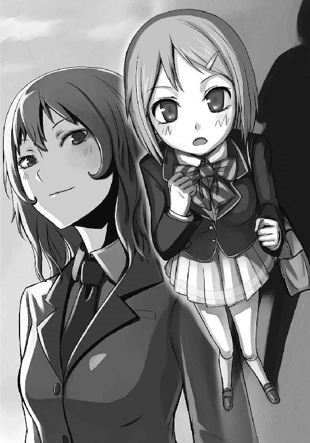
「来年は、私たちが優勝しますから」
「......ふふ、そっか」
椎奈が優しく微笑む。
「いいフェンサーになったね」
『終章 杜坂高校フェンシング部』
ゆで卵。アスパラのベーコン巻き。小さいコロッケにプチトマト。一通りのおかずを弁当箱に詰め終えたところで、満足そうに息をつく。
娘はまだ眠っている。昨日も練習でへとへとになって帰ってきた。早く休めばいいのに、遅くまで友達とメールしているから起きられないんだ。......けれど、強くは言えない。どうやら楽しいらしくて、嬉しそうに話してくる。今週末は一緒にカラオケに行くと言っていた。
「そういえば、あの人も練習後に飲みに行って、よく寝坊してたっけ」
亡き夫のことを思い出して苦笑すると同時に、まさか娘もそうなりはしないかと不安に思う。
でも、それもいいか。
「あの子が、こんなに楽しそうにしているんだものね」
笑みを浮かべ、弁当箱の蓋を閉める。
そして、真新しい塗り箸と一緒に包んだ。
それから、娘の部屋に向かって歩き出す。
「結恵ー！ 早く起きなさーい！」
「女王蜂の機嫌が悪い」
芳人の呟きに、結恵と琳太郎がビクリと肩を震わせた。
その名前を呼ぶと、巴は怒る。凄く怒る。
だけど幸い、聞こえてはいなかったようだ。巴は体育館の隅で胡坐をかき、頬杖をつきながら苛々と自分の頬を指でつついている。
「どれだけイラついてんだよ、あいつは」
芳人は呆れたようにため息をついた。彼は今、背中を壁に預けて足を投げ出している。その傍らには松葉杖。『試合後にたまたま足を捻挫してしまった』らしく、今の彼は療養中だ。
「巴ちゃん、どうしたんだ？」
琳太郎が尋ねると、芳人はバカにしたように鼻を鳴らす。
「あいつ、生徒会長にウチの部費を二倍にしてくれって頼みに行ったんだよ。ご丁寧に『部費で買うものリスト』まで作ってな。......で、速攻で断られた。それであのザマなんだよ」
おかげで俺までバカに思われる──と芳人は再びため息をついた。
「巴先生、どうしてそんなに部費が必要なんですか？」
「さぁな。色々考えてたみたいだぞ。備品新しくしたり、遠征しようとしたり、合宿の計画立てたりしてたからな」
「合宿......ですか。なんだか楽しそうですね」
結恵がそう言うと、琳太郎が激しく首を縦に振った。
「合宿！ いいな！ 海とか行きてぇな！ 朝は旅館の和食だろ？ のんびり練習して、午後からは海で遊ぼう！ それから温泉に入って疲れを癒して、夜はバーベキューと花火だ！」
「わあ、楽しそう。......あ、でも私、学校の水着しかもってないです......」
「え？ むしろそれがいいんだよ。わかってないなー結恵ちゃん」
「お前ら、浮かれてんじゃねぇぞ。合宿やるんなら朝から晩までみっちり扱いてやるからな。メシが喉通ると思うなよォ？」
獰猛な笑みを浮かべる芳人に、結恵と琳太郎は引きつった愛想笑いで返す。
「......っと、どっちにしろ、部費がねぇんじゃ合宿なんて夢のまた夢だ。今はあのボケ顧問に練習見てもらうしかねぇ」
芳人はうんざりした様子で巴を見る。
「おい結恵。お前、なんとかして姉貴を復活させろ」
「え、ええ？ で、でも巴先生......すごく機嫌悪そうなんですけど......」
「つべこべ言うな。行ってこい」
松葉杖でお尻を突かれ、結恵は小さく悲鳴を上げながら巴の下に一歩踏み出した。何度も後ろを振り返るが、芳人は猫でも追っ払うように手を振りながら「早く行け」と急かす。
「あ、あのぅ......巴先生？」
「あぁん？」
おずおず話しかけると、巴が凶暴な目つきでこちらを睨んだ。
泣きそうになりながら振り返り、助けを求めるが、二人は知らん顔で視線を逸らしている。
仕方なく、覚悟を決めて話を続けた。
「え、えっと......その、練習......したいんですけど......」
「練習？ どんな練習よ？」
「えっと......その......強くなれるような、練習......」
何も考えていなかったから、まったく具体的なことが言えない。
「強くなれるような練習ね......」
巴は鼻から息を吐き、ますます深く頬杖をつく。
だが、巴の目に光が宿った。
「強く......か」
それはどんどん大きくなり、やがて、彼女の双眸は爛々と輝き始める。口元は笑みの形になり、端の方がどんどん釣りあがっていった。
「ふ、ふふふ......」
背中を震わせ、巴が笑う。
「いーこと思いついたッ！」
そして勢いよく立ち上がった。
びっくりして、結恵は間抜けな悲鳴を上げながら尻餅をつく。
「新しい練習法を思いついたわよ！」
巴は拳を振り回し、体育館の窓を震わせるほどの声を上げる。
「結恵ちゃーん......やっちゃったねぇ」
「なに思いついたんだか......あのバカは」
いつの間にか近づいていた芳人と琳太郎が、恨めしそうにこっちを見る。
「え？ え？ えええ？ 私の......せいですか？」
二人は大きく頷いた。
「焚き付けすぎだよ」
「きっと、とんでもない練習させられるなこりゃ」
巴はそんな声など聞こえないように、楽しそうに笑っている。
「この練習なら、一気に全国に近づけるわ！」
絶好調の巴に対し、芳人と琳太郎は辟易している。
「よ、芳人先輩も琳太郎先輩も、そんなヤな顔しないでくださいよ。一緒に頑張りましょう！ 巴先生の練習なら、きっと強くなれますよ！ ね？」
うんざりした表情の二人に対し、結恵は必死に言う。
そんな姿を見て何を思ったのか、二人は驚いたような顔でこっちを見た。
やがて、それが挑戦的な笑みに変わる。
「......やれやれ。ルーキーに言われちゃザマねぇな」
「だな！ 結恵ちゃんに負けてられないな！ 次の試合じゃ俺が全勝してやる！」
その言葉に、結恵は笑顔を浮かべる。
「さあ！ 次のインターハイ予選まで一年あるわ！ 張り切っていくわよ！ みんな！」
巴が剣を取り、振り上げた。
「目指すは──」
「「「「全国制覇ッ！」」」」
杜坂高校フェンサーの奮声が応える。
掲げられた女王蜂の剣。
そこに、三匹の蜂が剣を重ねた。
あとがき
私が高校時代のフェンシング部に所属していた頃、女性の先輩に思いっきりビンタされたことがありました。
確か、フェンシング県大会の団体戦の時だったと思います。「気合い入れてあげるから」と言われ、ここぞとばかりに頬を張られました。
私も私で、試合前の妙なテンションも手伝い、ノリノリで「ありがとうございますっ！」と叫んだことを覚えています。
今のところ、女性にビンタされた経験はあれっきりですね。
思えば、この話を書こうと思ったきっかけは、あのビンタだったんじゃないかなと思います。「なんでそうなるんだ」と言われれば私もわかりませんが、あの時は「面白ぇな、この状況」と思ったのです。本当になんでそうなるんだ。
さて、フェンシングをメインに扱った物語は少ないです。それはたぶん、知名度の低さだったり、ルールの複雑さだったりするのでしょう。知らない人は「なんでフェンシングの選手って白タイツ履いてんの？」と言うくらいです。あれはタイツではないのです。
ともかく、書く方も、出版する方としても扱いにくい題材だったと思います。
だからこそ、今回この話を書かせていただけたことを嬉しく思います。編集さんから「前に言ってたフェンシングの話、書いてみませんか？」と言われた時は、試合前の慄くような感覚が蘇りました。私を引っ叩いた先輩はいなかったので、自分で頬を張って気合いを入れました。
フェンシングを経験したことがある方も、未経験の方も、楽しんでいただけると幸いです。
最後にお礼を。
担当編集の粂田さん。貴方の尽力のおかげで完成させることが出来ました。ありがとうございます。
イラストレーターのTeaさん。可愛いイラストをありがとうございます。貴方の絵が送られてくるたびにモチベーションが上がりました。
幼馴染を始めとする友人たち。家族。フェンシング部時代のチームメンバー。
そしてこの本を手に取っていただいた読者の皆様。本当にありがとうございました。皆様を楽しませられるような作品を書けるよう、これからも努力していきますので、どうかよろしくお願い致します。
末羽 瑛
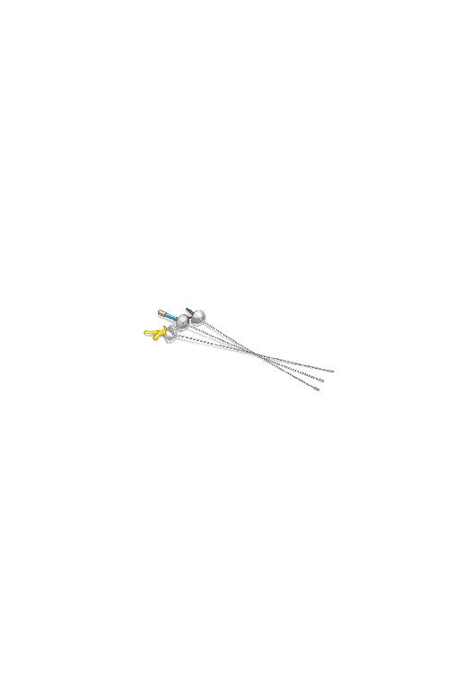
末羽瑛
１９８７年生まれ。福島県出身。
バイク乗りだが、他の趣味は部屋で出来ることばっかりのインドア派ライダー。タバコがないと小説が書けない。この短いプロフィールを書くのですら、もう三本目という禁煙はしない派の人間。
Tea
沖縄県在住。女の子のイラストを好んで描いています。
描いた絵はＨＰ等で公開していますので、ぜひ見に来て下さいまし！
 電撃文庫
電撃文庫
LetitBEE！
末羽瑛
発 行 2013年10月31日
発行者 塚田正晃
発行所 株式会社KADOKAWA
〒102-8177 東京都千代田区富士見2-13-3
03-3238-8745（営業）
http://www.kadokawa.co.jp/
プロデュース アスキー・メディアワークス
〒102-8584 東京都千代田区富士見1-8-19
03-5216-8399（編集）
http://dengekibunko.dengeki.com/
本書（電子版）に掲載されているコンテンツ（ソフトウェア／プログラム／データ／情報を含む）の著作権およびその他の権利は、すべて株式会社KADOKAWAおよび正当な権利を有する第三者に帰属しています。
法律の定めがある場合または権利者の明示的な承諾がある場合を除き、これらのコンテンツを複製・転載、改変・編集、翻案・翻訳、放送・出版、公衆送信（送信可能化を含む）・再配信、販売・頒布、貸与等に使用することはできません。
(C)2011 EI SUEBA
※この電子書籍は2011年8月10日発行の電撃文庫『Let it BEE！』初版に基づき制作